B1 · Opus 5.5 · attempt 3jw3VS6
Batch tb8 · job tb8_B_base_conditioned_media_claude-opus-5-5 · trial B_base_conditioned_media__3jw3VS6. Long tool outputs are cut at 6,000 characters.
0.50
96.2
$23.44
1391
260
cat /task/inputs/plan.md; echo; cat /task/inputs/plate_layout.csv; ls /task/inputs/raw | head; ls /task/outputs
# Plan: Caspase activity assay development with progranulin conditioned media (H4 cells) Source: lab notebook entry (target PGRN; assay development; cell-based; flow; cell type H4). This plan covers the plate acquired on 16-Dec-2022. People's names, and all text written after acquisition, have been removed. ## Purpose To determine if progranulin conditioned media can restore wild-type levels of caspase activity in H4 GRN KO cells. ## Rationale Previous literature evidence suggests that applying exogenous progranulin to cells can restore molecular phenotypes in progranulin deficient lines. Our previous experiment with caspase activity on H4 GRN WT and KO cells showed that GRN KO lines had increased caspase activity. This difference was enhanced after campothesin challenge in both GRN WT and KO cells. In this experiment, we will determine if applying conditioned media from WT cell lines onto KO lines can reduce caspase activity closer to WT levels. ## Materials - H4 WT cells - H4 PGRN KO E1 - H4 PGRN KO E3 - H4 media (DMEM + 10% FBS) - CellEvent Caspase-3/7 Green Flow Cytometry Assay Kit - SYTOX AAdvanced Dead Cell Stain - Camptothecin ## Protocol ### 2022-12-12: conditioned-media donor plate - Passage WT H4 cells into 96 well plate (10K/well). This plate is the one the media is collected from. Donor plate map, as written (12 columns per line): ``` WT WT WT WT WT WT WT WT WT WT WT WT WT WT WT WT WT WT WT WT WT WT WT WT WT WT WT WT WT WT WT WT WT WT WT WT 24hr WT WT WT WT WT WT WT WT WT WT WT WT WT WT WT WT WT WT WT WT WT WT WT WT WT WT WT WT WT WT WT WT WT WT WT WT 48hr ``` Red = 24 hr media collection; Purple = 48hr media collection. Cell colours of this map were not preserved in the export. ### 2022-12-13 2. Collect media from 24hr wells 3. Spin down at 2000xg for 10min @4C and collect into fresh plate ### 2022-12-14 4. Collect media from 48hr wells 5. Spin down at 2000xg for 10min. Collect into fresh plate - Passage all H4 lines into 96 well plate for assay (10K/well) according to the assay plate map below. ### Assay plate map The map is as written. Row letters A–H and column numbers 1–12 have been added for orientation. | | 1 | 2 | 3 | 4 | 5 | 6 | 7 | 8 | 9 | 10 | 11 | 12 | |---|---|---|---|---|---|---|---|---|---|---|---|---| | A | WT 10uM | WT 5uM | WT 2uM | WT DMSO | WT 10uM | WT 5uM | WT 2uM | WT DMSO | WT 10uM | WT 5uM | WT 2uM | WT DMSO | | B | E1 10uM | E1 5uM | E1 2uM | E1 DMSO | E1 10uM | E1 5uM | E1 2uM | E1 DMSO | E1 10uM | E1 5uM | E1 2uM | E1 DMSO | | C | E3 10uM | E3 5uM | E3 2uM | E3 DMSO | E3 10uM | E3 5uM | E3 2uM | E3 DMSO | E3 10uM | E3 5uM | E3 2uM | E3 DMSO | | D | WT 10uM | WT 5uM | WT 2uM | WT DMSO | WT 10uM | WT 5uM | WT 2uM | WT DMSO | WT 10uM | WT 5uM | WT 2uM | WT DMSO | | E | E1 10uM | E1 5uM | E1 2uM | E1 DMSO | E1 10uM | E1 5uM | E1 2uM | E1 DMSO | E1 10uM | E1 5uM | E1 2uM | E1 DMSO | | F | E3 10uM | E3 5uM | E3 2uM | E3 DMSO | E3 10uM | E3 5uM | E3 2uM | E3 DMSO | E3 10uM | E3 5uM | E3 2uM | E3 DMSO | | G | WT no treatment (no stain) | WT L/D only | WT Caspase only | E1 untreated | E3 untreated | WT untreated | | | | | | | | H | 24hr conditioned media | | | | 48hr conditoned media | | | | No condtioned media | | | | Cell colours in the notebook: - Rows A–F, columns 1–4: blue (#94B5DD). - Rows A–F, columns 5–8: green (#D5F0AD). - Rows A–F, columns 9–12: uncoloured. - Row G: uncoloured. - Row H: "24hr conditioned media" is blue; "48hr conditoned media" is green; "No condtioned media" is uncoloured. ### 2022-12-15 6. Rinse wells with DMEM and then add conditioned media ### 2022-12-16 7. Add camptothecin to wells at indicated dose. Incubate for 4.5hr 8. Run flow ### Staining and acquisition (assay protocol as written in this entry) - Aspirate media and wash with PBS - Add 150uL trypsin incubate for 5min - Add 75uL FBS and collect into 96w round bottom plate - spin down 200xg for 5min - Add 200uL of Cell Event Caspase 3/7 Detection reagent (1:1000) in flow staining buffer. Incubate for 30min at 37C - Prepare SYTOX AAdvanced Dead Cell Stain at 100uM concentration by adding 1000uL DMSO to stain. Mix well - During the final 5 minutes of 30min Caspase incubation add 2uL of the 100uM Dead Cell stain (final concentration of 1uM) - Analyze the samples without fixing. Flow cytometer settings: FSC-20; SSC-290; BL1 (caspase)-225, BL2 (AAddvanced Dead Cell Stain)-350 ## Acquisition - Instrument: Thermo Attune NxT. - Date: 16-Dec-2022. - Files: 78 FCS files, one per well (A1–F12 and G1–G6). file,well,sample,cell_line,camptothecin,conditioned_media Caspase-assay-2-mlk(1)_caspase_Group_A1.fcs,A1,WT 10uM,WT,10uM,24hr conditioned media Caspase-assay-2-mlk(1)_caspase_Group_A2.fcs,A2,WT 5uM,WT,5uM,24hr conditioned media Caspase-assay-2-mlk(1)_caspase_Group_A3.fcs,A3,WT 2uM,WT,2uM,24hr conditioned media Caspase-assay-2-mlk(1)_caspase_Group_A4.fcs,A4,WT DMSO,WT,DMSO,24hr conditioned media Caspase-assay-2-mlk(1)_caspase_Group_A5.fcs,A5,WT 10uM,WT,10uM,48hr conditioned media Caspase-assay-2-mlk(1)_caspase_Group_A6.fcs,A6,WT 5uM,WT,5uM,48hr conditioned media Caspase-assay-2-mlk(1)_caspase_Group_A7.fcs,A7,WT 2uM,WT,2uM,48hr conditioned media Caspase-assay-2-mlk(1)_caspase_Group_A8.fcs,A8,WT DMSO,WT,DMSO,48hr conditioned media Caspase-assay-2-mlk(1)_caspase_Group_A9.fcs,A9,WT 10uM,WT,10uM,No conditioned media Caspase-assay-2-mlk(1)_caspase_Group_A10.fcs,A10,WT 5uM,WT,5uM,No conditioned media Caspase-assay-2-mlk(1)_caspase_Group_A11.fcs,A11,WT 2uM,WT,2uM,No conditioned media Caspase-assay-2-mlk(1)_caspase_Group_A12.fcs,A12,WT DMSO,WT,DMSO,No conditioned media Caspase-assay-2-mlk(1)_caspase_Group_B1.fcs,B1,E1 10uM,E1,10uM,24hr conditioned media Caspase-assay-2-mlk(1)_caspase_Group_B2.fcs,B2,E1 5uM,E1,5uM,24hr conditioned media Caspase-assay-2-mlk(1)_caspase_Group_B3.fcs,B3,E1 2uM,E1,2uM,24hr conditioned media Caspase-assay-2-mlk(1)_caspase_Group_B4.fcs,B4,E1 DMSO,E1,DMSO,24hr conditioned media Caspase … [5,710 more characters not shown]
cd /task/inputs; file start.flow; head -c 3000 start.flow; echo; ls -la raw | head -5; du -sh raw
/bin/bash: line 1: file: command not found
- !workflow-item;5
channels: []
conditions: {}
current_view: null
metadata: {}
operation: !import;4
channels_list: []
conditions:
well: category
sample: category
cell_line: category
camptothecin: category
conditioned_media: category
events: null
ignore_v_bool: false
name_metadata: null
tubes:
- !tube;1
conditions:
well: 'A1'
sample: 'WT 10uM'
cell_line: 'WT'
camptothecin: '10uM'
conditioned_media: '24hr conditioned media'
file: '/task/inputs/raw/Caspase-assay-2-mlk(1)_caspase_Group_A1.fcs'
- !tube;1
conditions:
well: 'A2'
sample: 'WT 5uM'
cell_line: 'WT'
camptothecin: '5uM'
conditioned_media: '24hr conditioned media'
file: '/task/inputs/raw/Caspase-assay-2-mlk(1)_caspase_Group_A2.fcs'
- !tube;1
conditions:
well: 'A3'
sample: 'WT 2uM'
cell_line: 'WT'
camptothecin: '2uM'
conditioned_media: '24hr conditioned media'
file: '/task/inputs/raw/Caspase-assay-2-mlk(1)_caspase_Group_A3.fcs'
- !tube;1
conditions:
well: 'A4'
sample: 'WT DMSO'
cell_line: 'WT'
camptothecin: 'DMSO'
conditioned_media: '24hr conditioned media'
file: '/task/inputs/raw/Caspase-assay-2-mlk(1)_caspase_Group_A4.fcs'
- !tube;1
conditions:
well: 'A5'
sample: 'WT 10uM'
cell_line: 'WT'
camptothecin: '10uM'
conditioned_media: '48hr conditioned media'
file: '/task/inputs/raw/Caspase-assay-2-mlk(1)_caspase_Group_A5.fcs'
- !tube;1
conditions:
well: 'A6'
sample: 'WT 5uM'
cell_line: 'WT'
camptothecin: '5uM'
conditioned_media: '48hr conditioned media'
file: '/task/inputs/raw/Caspase-assay-2-mlk(1)_caspase_Group_A6.fcs'
- !tube;1
conditions:
well: 'A7'
sample: 'WT 2uM'
cell_line: 'WT'
camptothecin: '2uM'
conditioned_media: '48hr conditioned media'
file: '/task/inputs/raw/Caspase-assay-2-mlk(1)_caspase_Group_A7.fcs'
- !tube;1
conditions:
well: 'A8'
sample: 'WT DMSO'
cell_line: 'WT'
camptothecin: 'DMSO'
conditioned_media: '48hr conditioned media'
file: '/task/inputs/raw/Caspase-assay-2-mlk(1)_caspase_Group_A8.fcs'
- !tube;1
conditions:
well: 'A9'
sample: 'WT 10uM'
cell_line: 'WT'
camptothecin: '10uM'
conditioned_media: 'No conditioned media'
file: '/task/inputs/raw/Caspase-assay-2-mlk(1)_caspase_Group_A9.fcs'
- !tube;1
conditions:
well: 'A10'
sample: 'WT 5uM'
cell_line: 'WT'
camptothecin: '5uM'
conditioned_media: 'No conditioned media'
file: '/task/inputs/raw/Caspase-assay-2-mlk(1)_caspase_Group_A10.fcs'
- !tube;1
conditions:
well: 'A11'
sample: 'WT 2uM'
total 59208
dr-xr-xr-x 2 root root 4096 Nov 5 21:58 .
dr-xr-xr-x 3 root root 4096 Nov 5 21:58 ..
-r--r--r-- 1 root root 1616032 Nov 5 21:58 Caspase-assay-2-mlk(1)_caspase_Group_A1.fcs
-r--r--r-- 1 root root 1287600 Nov 5 21:58 Caspase-assay-2-mlk(1)_caspase_Group_A10.fcs
58M rawcd /task/inputs/raw; ls -l | awk '{print $5, $9}' | sort -n | head -90; tail -c 1500 ../start.flow172044 Caspase-assay-2-mlk(1)_caspase_Group_C5.fcs
173760 Caspase-assay-2-mlk(1)_caspase_Group_F5.fcs
190452 Caspase-assay-2-mlk(1)_caspase_Group_B9.fcs
195808 Caspase-assay-2-mlk(1)_caspase_Group_F9.fcs
219676 Caspase-assay-2-mlk(1)_caspase_Group_C9.fcs
223836 Caspase-assay-2-mlk(1)_caspase_Group_E9.fcs
238916 Caspase-assay-2-mlk(1)_caspase_Group_E5.fcs
271728 Caspase-assay-2-mlk(1)_caspase_Group_B5.fcs
293776 Caspase-assay-2-mlk(1)_caspase_Group_E10.fcs
325340 Caspase-assay-2-mlk(1)_caspase_Group_C6.fcs
336832 Caspase-assay-2-mlk(1)_caspase_Group_F6.fcs
340628 Caspase-assay-2-mlk(1)_caspase_Group_F1.fcs
343800 Caspase-assay-2-mlk(1)_caspase_Group_D5.fcs
397256 Caspase-assay-2-mlk(1)_caspase_Group_G4.fcs
397932 Caspase-assay-2-mlk(1)_caspase_Group_C1.fcs
400636 Caspase-assay-2-mlk(1)_caspase_Group_E6.fcs
423100 Caspase-assay-2-mlk(1)_caspase_Group_E8.fcs
424244 Caspase-assay-2-mlk(1)_caspase_Group_C7.fcs
424764 Caspase-assay-2-mlk(1)_caspase_Group_C10.fcs
435372 Caspase-assay-2-mlk(1)_caspase_Group_C8.fcs
438128 Caspase-assay-2-mlk(1)_caspase_Group_B10.fcs
447020 Caspase-assay-2-mlk(1)_caspase_Group_F10.fcs
453468 Caspase-assay-2-mlk(1)_caspase_Group_C3.fcs
456224 Caspase-assay-2-mlk(1)_caspase_Group_D9.fcs
476608 Caspase-assay-2-mlk(1)_caspase_Group_C11.fcs
488724 Caspase-assay-2-mlk(1)_caspase_Group_C4.fcs
496004 Caspase-assay-2-mlk(1)_caspase_Group_F7.fcs
496056 Caspase-assay-2-mlk(1)_caspase_Group_B12.fcs
509368 Caspase-assay-2-mlk(1)_caspase_Group_B6.fcs
518884 Caspase-assay-2-mlk(1)_caspase_Group_E1.fcs
520340 Caspase-assay-2-mlk(1)_caspase_Group_B1.fcs
523512 Caspase-assay-2-mlk(1)_caspase_Group_F2.fcs
525072 Caspase-assay-2-mlk(1)_caspase_Group_F3.fcs
531260 Caspase-assay-2-mlk(1)_caspase_Group_E4.fcs
541868 Caspase-assay-2-mlk(1)_caspase_Group_C2.fcs
559652 Caspase-assay-2-mlk(1)_caspase_Group_F8.fcs
559860 Caspase-assay-2-mlk(1)_caspase_Group_B11.fcs
563604 Caspase-assay-2-mlk(1)_caspase_Group_E2.fcs
566100 Caspase-assay-2-mlk(1)_caspase_Group_F4.fcs
567452 Caspase-assay-2-mlk(1)_caspase_Group_E12.fcs
578268 Caspase-assay-2-mlk(1)_caspase_Group_B2.fcs
591112 Caspase-assay-2-mlk(1)_caspase_Group_B8.fcs
611080 Caspase-assay-2-mlk(1)_caspase_Group_G5.fcs
615500 Caspase-assay-2-mlk(1)_caspase_Group_F12.fcs
617164 Caspase-assay-2-mlk(1)_caspase_Group_E11.fcs
633648 Caspase-assay-2-mlk(1)_caspase_Group_E7.fcs
641136 Caspase-assay-2-mlk(1)_caspase_Group_B4.fcs
642228 Caspase-assay-2-mlk(1)_caspase_Group_F11.fcs
648364 Caspase-assay-2-mlk(1)_caspase_Group_E3.fcs
692668 Caspase-assay-2-mlk(1)_caspase_Group_C12.fcs
702912 Caspase-assay-2-mlk(1)_caspase_Group_B7.fcs
736764 Caspase-assay-2-mlk(1)_caspase_Group_A5.fcs
784084 Caspase-assay-2-mlk(1)_caspase_Group_B3.fcs
843000 Caspase-assay-2-mlk(1)_caspase_Group_G6.fcs
895624 Caspase-assay-2-mlk(1)_caspase_Group_D6.fcs
903840 Caspase-assay-2-mlk(1)_caspase_Group_A9.fcs
1030356 Caspase-assay-2-mlk(1)_caspase_Group_D10.fcs
1192648 Caspase-assay-2-mlk(1)_caspase_Group_D1.fcs
1217348 Caspase-assay-2-mlk(1)_caspase_Group_D7.fcs
1219740 Caspase-assay-2-mlk(1)_caspase_Group_D8.fcs
1284844 Caspase-assay-2-mlk(1)_caspase_Group_D4.fcs
1287600 Caspase-assay-2-mlk(1)_caspase_Group_A10.fcs
1314328 Caspase-assay-2-mlk(1)_caspase_Group_A6.fcs
1321504 Caspase-assay-2-mlk(1)_caspase_Group_D12.fcs
1417132 Caspase-assay-2-mlk(1)_caspase_Group_G3.fcs
1440480 Caspase-assay-2-mlk(1)_caspase_Group_A7.fcs
1443028 Caspase-assay-2-mlk(1)_caspase_Group_D2.fcs
1455040 Caspase-assay-2-mlk(1)_caspase_Group_D3.fcs
1464504 Caspase-assay-2-mlk(1)_caspase_Group_G2.fcs
1571676 Caspase-assay-2-mlk(1)_caspase_Group_A8.fcs
1616032 Caspase-assay-2-mlk(1)_caspase_Group_A1.fcs
1634024 Caspase-assay-2-mlk(1)_caspase_Group_A2.fcs
1657008 Caspase-assay-2-mlk(1)_caspase_Group_A12.fcs
1665276 Caspase-assay-2-mlk(1)_caspase_Group_D11.fcs
1779988 Caspase-assay-2-mlk(1)_caspase_Group_G1.fcs
1820964 Caspase-assay-2-mlk(1)_caspase_Group_A4.fcs
2002184 Caspase-assay-2-mlk(1)_caspase_Group_A11.fcs
2023088 Caspase-assay-2-mlk(1)_caspase_Group_A3.fcs
ent (no stain)'
cell_line: 'WT'
camptothecin: 'no treatment'
conditioned_media: 'not stated'
file: '/task/inputs/raw/Caspase-assay-2-mlk(1)_caspase_Group_G1.fcs'
- !tube;1
conditions:
well: 'G2'
sample: 'WT L/D only'
cell_line: 'WT'
camptothecin: 'not stated'
conditioned_media: 'not stated'
file: '/task/inputs/raw/Caspase-assay-2-mlk(1)_caspase_Group_G2.fcs'
- !tube;1
conditions:
well: 'G3'
sample: 'WT Caspase only'
cell_line: 'WT'
camptothecin: 'not stated'
conditioned_media: 'not stated'
file: '/task/inputs/raw/Caspase-assay-2-mlk(1)_caspase_Group_G3.fcs'
- !tube;1
conditions:
well: 'G4'
sample: 'E1 untreated'
cell_line: 'E1'
camptothecin: 'untreated'
conditioned_media: 'not stated'
file: '/task/inputs/raw/Caspase-assay-2-mlk(1)_caspase_Group_G4.fcs'
- !tube;1
conditions:
well: 'G5'
sample: 'E3 untreated'
cell_line: 'E3'
camptothecin: 'untreated'
conditioned_media: 'not stated'
file: '/task/inputs/raw/Caspase-assay-2-mlk(1)_caspase_Group_G5.fcs'
- !tube;1
conditions:
well: 'G6'
sample: 'WT untreated'
cell_line: 'WT'
camptothecin: 'untreated'
conditioned_media: 'not stated'
file: '/task/inputs/raw/Caspase-assay-2-mlk(1)_caspase_Group_G6.fcs'
statistics: {}
views: []cd /task; cu screenshot /tmp/screen.png; echo done
/tmp/screen.png done
{
"file_path": "/tmp/screen.png"
}
cd /task; cu click 915 493; sleep 1; cu click 90 75; sleep 2; cu screenshot /tmp/screen.png
{
"file_path": "/tmp/screen.png"
}/tmp/screen.png

cd /task; cu click 1038 744; cu paste "/task/inputs/start.flow"; cu key Return; sleep 2; cu screenshot /tmp/screen.png
{
"file_path": "/tmp/screen.png"
}/tmp/screen.png

cd /task; cu click 746 449; sleep 30; cu screenshot /tmp/screen.png
{
"file_path": "/tmp/screen.png"
}/tmp/screen.png

cd /task; cu click 230 183; sleep 2; cu screenshot /tmp/screen.png
{
"file_path": "/tmp/screen.png"
}/tmp/screen.png

cd /task; cu click 62 29; sleep 1; cu screenshot /tmp/screen.png
{
"file_path": "/tmp/screen.png"
}/tmp/screen.png

cd /task; cu key Escape; sleep 0.5; cu double 700 9 2>/dev/null || cu click 700 9 double; sleep 2; cu screenshot /tmp/screen.png
{
"file_path": "/tmp/screen.png"
}# Computer-use helper: the agent's only way to act on the screen.
# cu screenshot [path] -> PNG of the screen (default /tmp/screen.png); prints path
# cu click X Y [left|right|double]
# cu move X Y | cu drag X1 Y1 X2 Y2 | cu scroll X Y up|down [N]
# cu type "text" (keystrokes) | cu paste "text" (clipboard) | cu key KEYS (e.g. ctrl+s, Return)
# cu cursor -> current mouse position
export DISPLAY=${DISPLAY:-:1}
cmd=$1; shift
/tmp/screen.png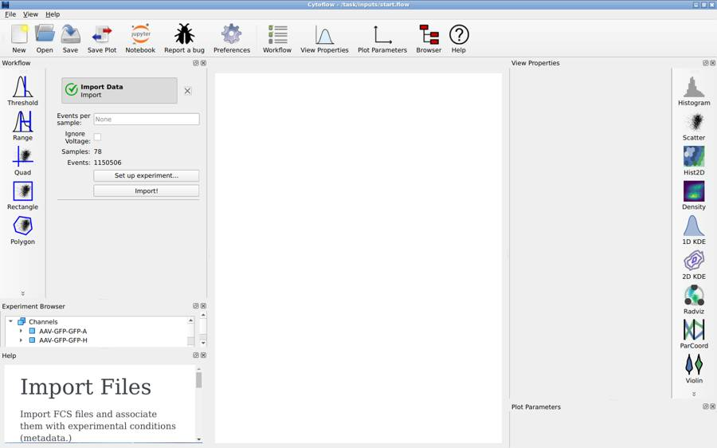
cd /task; cu click 408 713; sleep 1; cu click 1393 385; sleep 2; cu screenshot /tmp/screen.png
{
"file_path": "/tmp/screen.png"
}/tmp/screen.png

cd /task; cu click 1195 181; sleep 1; cu screenshot /tmp/screen.png
{
"file_path": "/tmp/screen.png"
}/tmp/screen.png
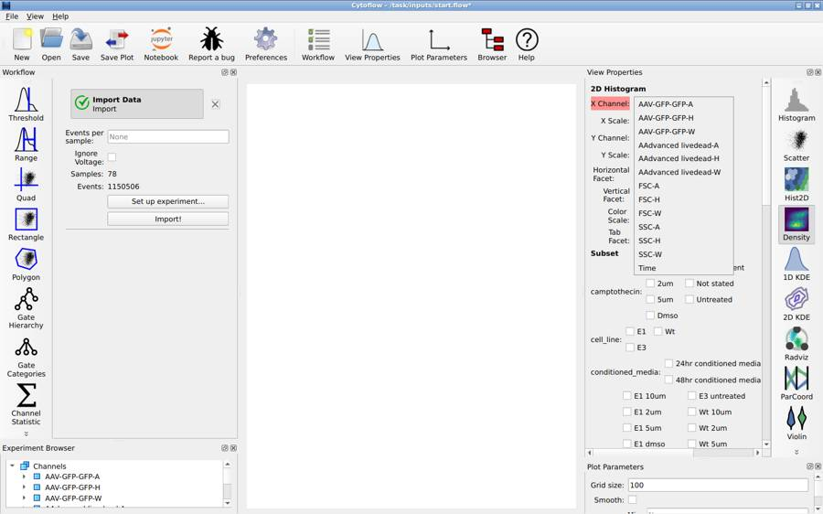
cd /task; cu click 1135 325; sleep 1; cu click 1195 241; sleep 1; cu screenshot /tmp/screen.png
{
"file_path": "/tmp/screen.png"
}/tmp/screen.png

cd /task; cu click 1135 457; sleep 1; cu click 1140 377; sleep 1; cu screenshot /tmp/screen.png
{
"file_path": "/tmp/screen.png"
}/tmp/screen.png
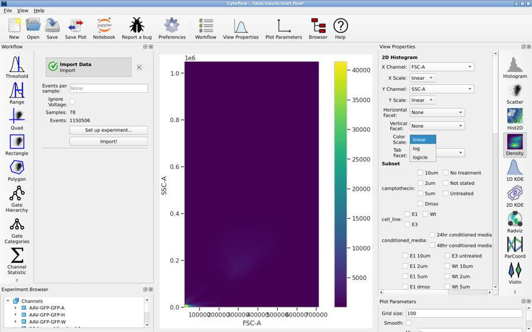
cd /task; cu click 1127 402; sleep 4; cu screenshot /tmp/screen.png
{
"file_path": "/tmp/screen.png"
}/tmp/screen.png
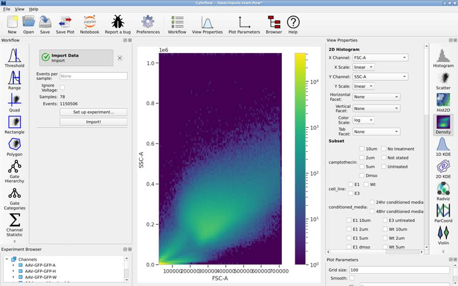
cd /task; cu click 1182 305; sleep 1; cu screenshot /tmp/screen.png
{
"file_path": "/tmp/screen.png"
}/tmp/screen.png
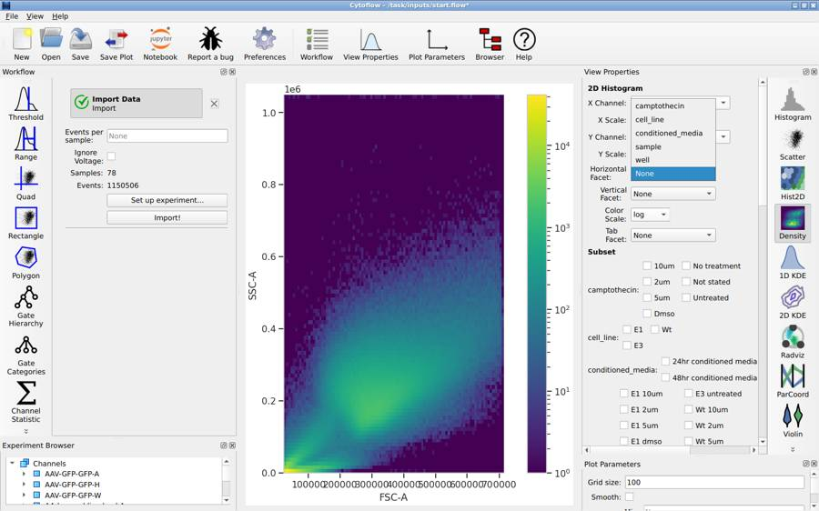
cd /task; cu click 1160 186; sleep 6; cu screenshot /tmp/screen.png
{
"file_path": "/tmp/screen.png"
}/tmp/screen.png
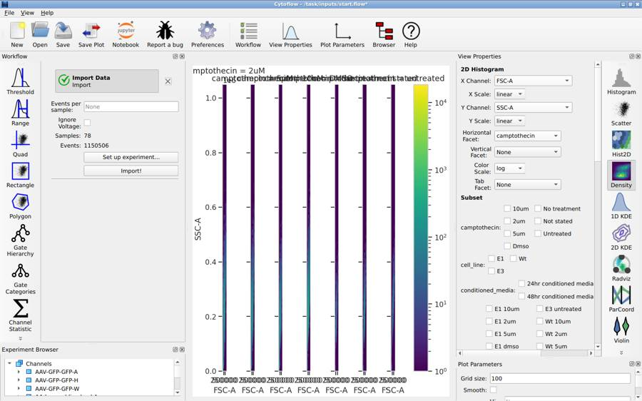
cd /task; cu click 204 75; sleep 2; cu screenshot /tmp/screen.png
{
"file_path": "/tmp/screen.png"
}/tmp/screen.png
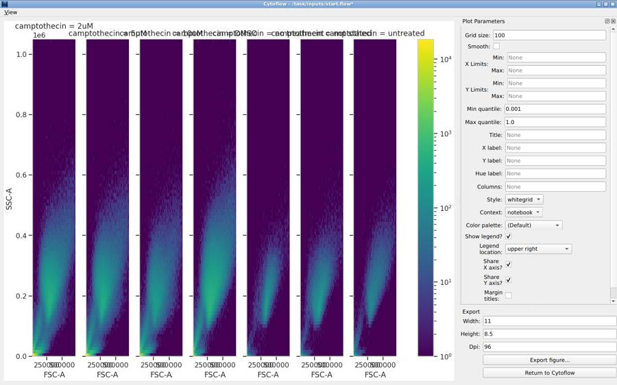
cd /task; cu click 1282 871; sleep 2; cu drag 1020 500 1250 500; sleep 2; cu screenshot /tmp/screen.png
{
"file_path": "/tmp/screen.png"
}/tmp/screen.png
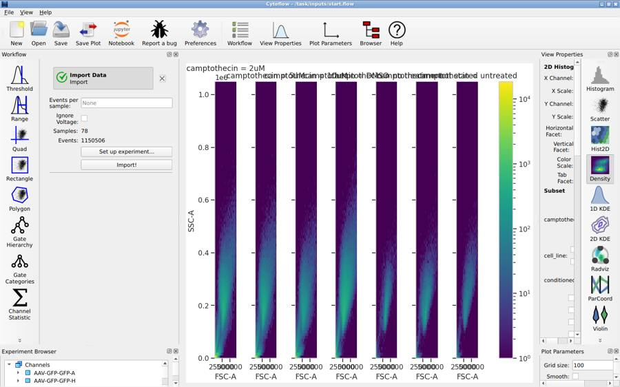
cd /task; cu drag 1250 500 1120 500; sleep 2; cu screenshot /tmp/screen.png
{
"file_path": "/tmp/screen.png"
}/tmp/screen.png
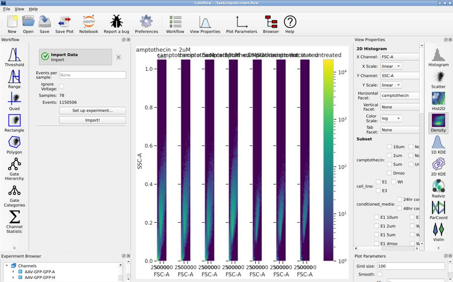
cd /task; cu click 1393 175; sleep 2; cu screenshot /tmp/screen.png
{
"file_path": "/tmp/screen.png"
}/tmp/screen.png
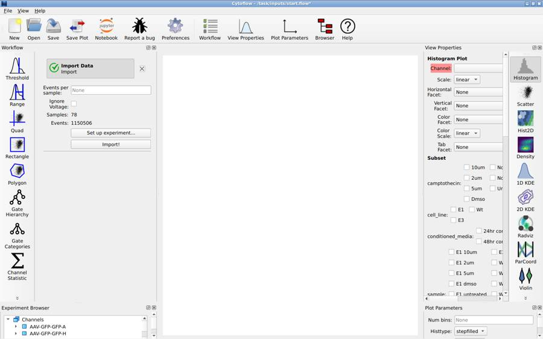
cd /task; cu click 1268 181; sleep 1; cu screenshot /tmp/screen.png
{
"file_path": "/tmp/screen.png"
}/tmp/screen.png
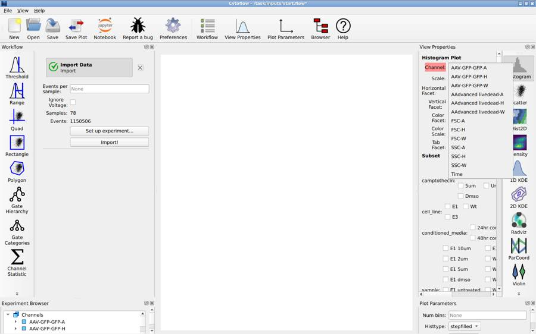
cd /task; cu click 1227 469; sleep 1; cu click 1268 244; sleep 1; cu screenshot /tmp/screen.png
{
"file_path": "/tmp/screen.png"
}/tmp/screen.png
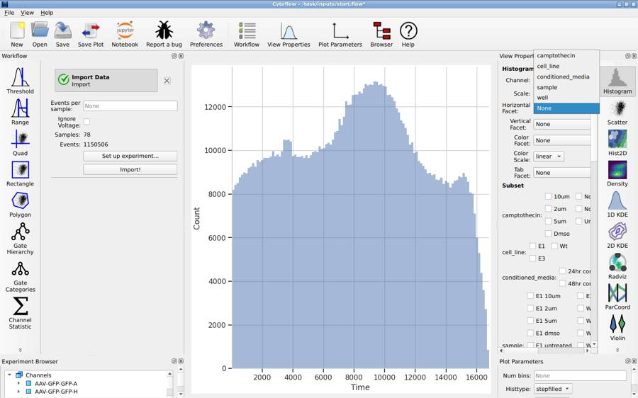
cd /task; cu click 1225 220; sleep 15; cu screenshot /tmp/screen.png
{
"file_path": "/tmp/screen.png"
}/tmp/screen.png
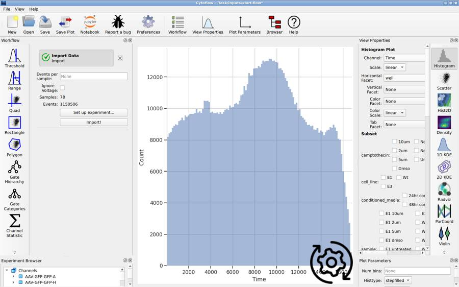
cd /task; sleep 20; cu screenshot /tmp/screen.png
{
"file_path": "/tmp/screen.png"
}/tmp/screen.png
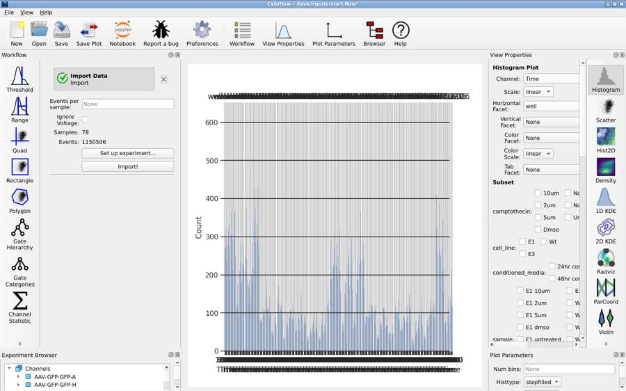
cd /task; cu click 204 75; sleep 3; cu screenshot /tmp/screen.png
{
"file_path": "/tmp/screen.png"
}/tmp/screen.png
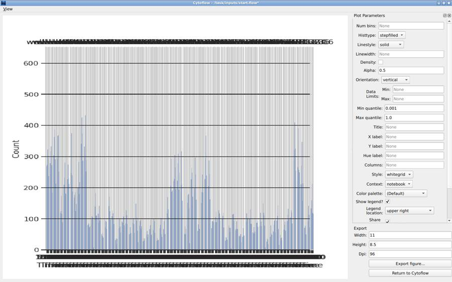
cd /task; cu click 1320 526; cu key ctrl+a; cu type "12"; cu key Return; sleep 3; cu scroll 1270 600 down 5; sleep 1; cu screenshot /tmp/screen.png
{
"file_path": "/tmp/screen.png"
}/tmp/screen.png
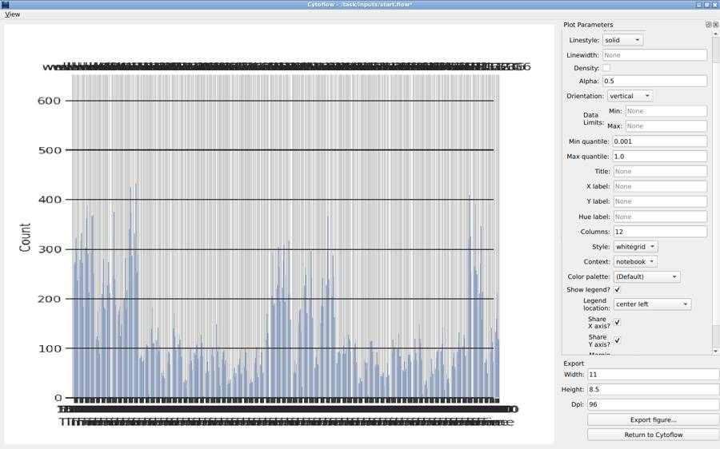
cd /task; cu click 1234 682; sleep 25; cu screenshot /tmp/screen.png
{
"file_path": "/tmp/screen.png"
}/tmp/screen.png
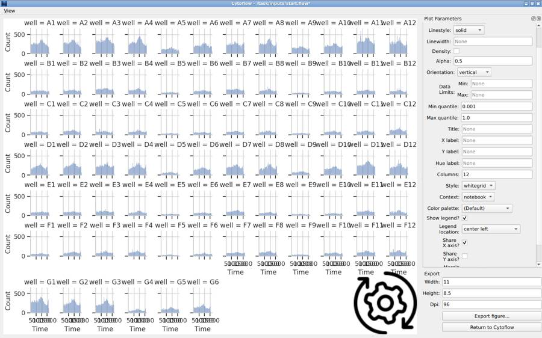
cd /task; sleep 20; cu click 1305 750; cu key ctrl+a; cu type "26"; cu click 1305 780; cu key ctrl+a; cu type "18"; cu click 1305 810; cu key ctrl+a; cu type "70"; cu click 1305 841; sleep 2; cu screenshot /tmp/screen.png
{
"file_path": "/tmp/screen.png"
}/tmp/screen.png
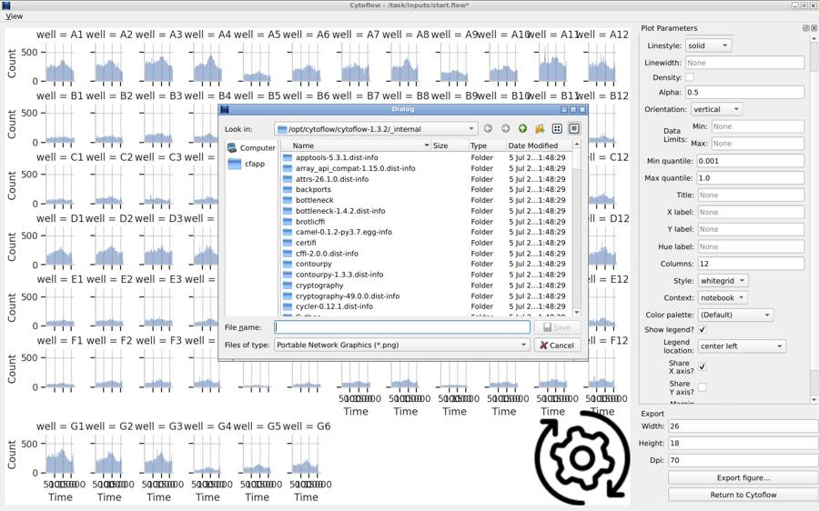
cd /task; mkdir -p /tmp/qc; cu click 706 576; cu paste "/tmp/qc/time_hist.png"; cu key Return; sleep 30; cu screenshot /tmp/screen.png; ls -la /tmp/qc
{
"file_path": "/tmp/screen.png"
}/tmp/screen.png total 8 drwxr-xr-x 2 root root 4096 Nov 6 00:38 . drwxrwxrwx 9 root root 4096 Nov 6 00:38 ..
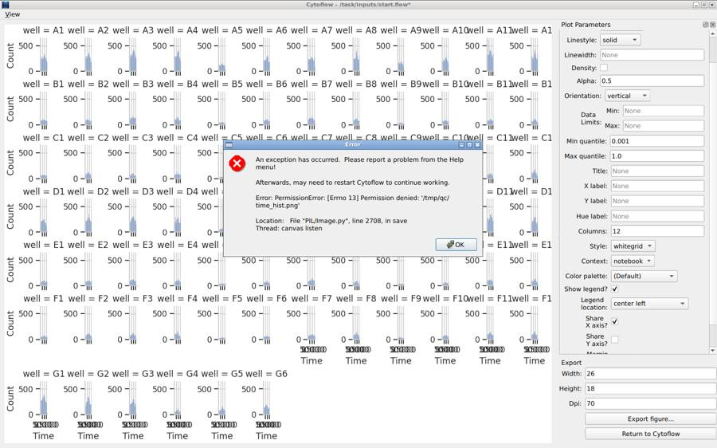
chmod 777 /tmp/qc; ls -ld /task/outputs /task; ps aux | grep -i cytoflow | head -3
drwxr-xr-x 4 root root 4096 Nov 5 22:00 /task drwxrwsrwx 2 agent task 4096 Nov 5 22:00 /task/outputs root 839 0.0 0.0 4748 3164 ? S 00:32 0:00 runuser -u cfapp -- env DISPLAY=:1 HOME=/home/cfapp XDG_RUNTIME_DIR=/tmp/runtime-cfapp LANG=C.UTF-8 LC_ALL=C.UTF-8 bash -c umask 002; cd /task; exec start-cytoflow cfapp 840 0.0 0.0 4764 3752 ? S 00:32 0:00 /bin/bash /usr/local/bin/start-cytoflow cfapp 846 2.1 6.6 3606912 539196 ? Sl 00:32 0:08 /opt/cytoflow/cytoflow-1.3.2/cytoflow
cd /task; cu click 915 491; sleep 1; cu click 1305 841; sleep 2; cu click 706 576; cu paste "/tmp/qc/time_hist.png"; cu key Return; sleep 30; ls -la /tmp/qc
total 100 drwxrwxrwx 2 root root 4096 Nov 6 00:39 . drwxrwxrwx 9 root root 4096 Nov 6 00:38 .. -rw-rw-r-- 1 cfapp cfapp 93371 Nov 6 00:39 time_hist.png
{
"file_path": "/tmp/qc/time_hist.png"
}
cd /task; cu click 1305 871; sleep 2; cu click 1393 385; sleep 2; cu screenshot /tmp/screen.png
{
"file_path": "/tmp/screen.png"
}/tmp/screen.png
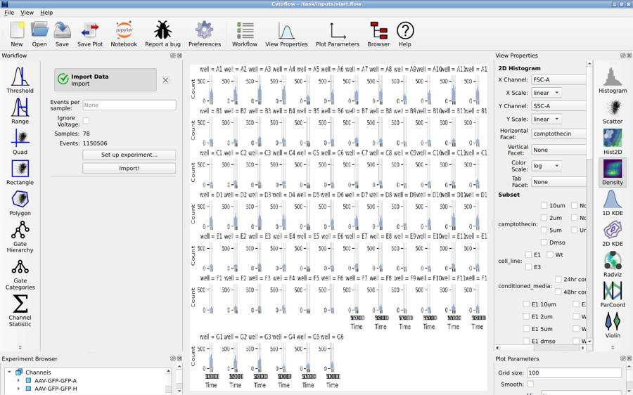
cd /task; cu click 1270 304; sleep 1; cu screenshot /tmp/screen.png
{
"file_path": "/tmp/screen.png"
}/tmp/screen.png
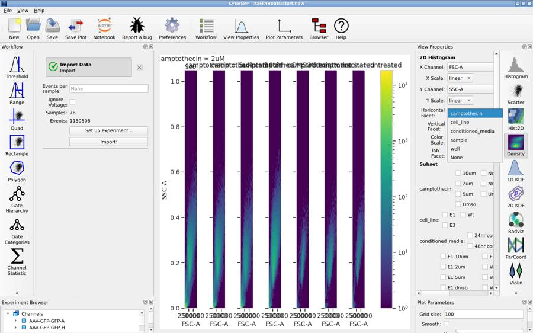
cd /task; cu click 1230 401; sleep 30; cu click 204 75; sleep 5; cu screenshot /tmp/screen.png
{
"file_path": "/tmp/screen.png"
}/tmp/screen.png
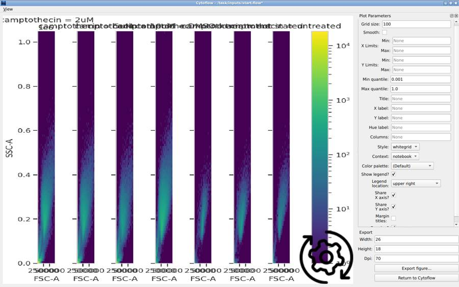
cd /task; cu click 1320 429; cu key ctrl+a; cu type "12"; cu key Return; sleep 40; cu screenshot /tmp/screen.png
{
"file_path": "/tmp/screen.png"
}/tmp/screen.png
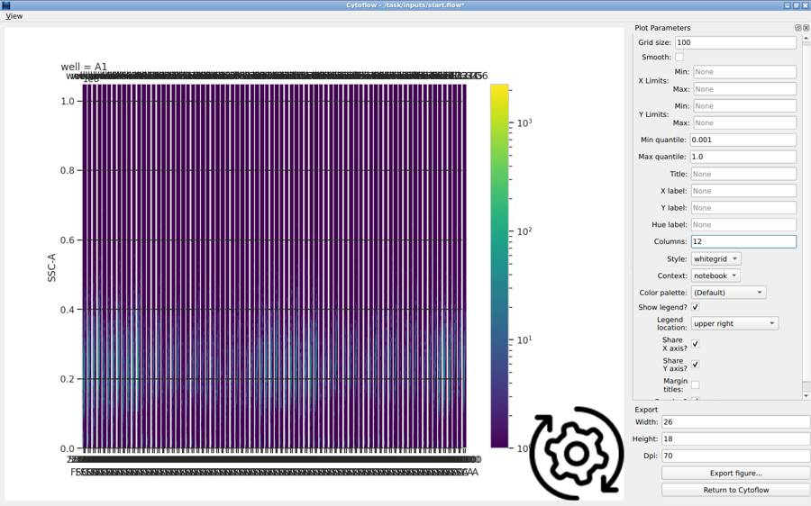
cd /task; sleep 30; cu click 1305 841; sleep 2; cu click 706 576; cu paste "/tmp/qc/fsc_ssc.png"; cu key Return; sleep 45; ls -la /tmp/qc; cu screenshot /tmp/screen.png
total 460 drwxrwxrwx 2 root root 4096 Nov 6 00:42 . drwxrwxrwx 9 root root 4096 Nov 6 00:41 .. -rw-rw-r-- 1 cfapp cfapp 367711 Nov 6 00:42 fsc_ssc.png -rw-rw-r-- 1 cfapp cfapp 93371 Nov 6 00:39 time_hist.png /tmp/screen.png
{
"file_path": "/tmp/qc/fsc_ssc.png"
}
cd /task; cu click 1305 871; sleep 2; cu click 45 460; sleep 2; cu screenshot /tmp/screen.png
{
"file_path": "/tmp/screen.png"
}/tmp/screen.png
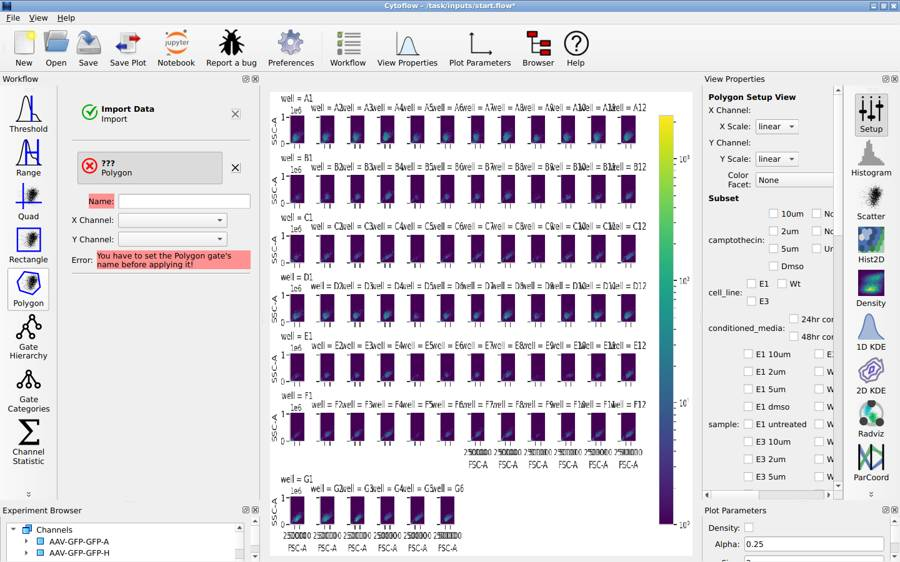
cd /task; cu click 294 322; cu type "cells"; cu key Tab; sleep 1; cu click 276 352; sleep 1; cu screenshot /tmp/screen.png
{
"file_path": "/tmp/screen.png"
}/tmp/screen.png
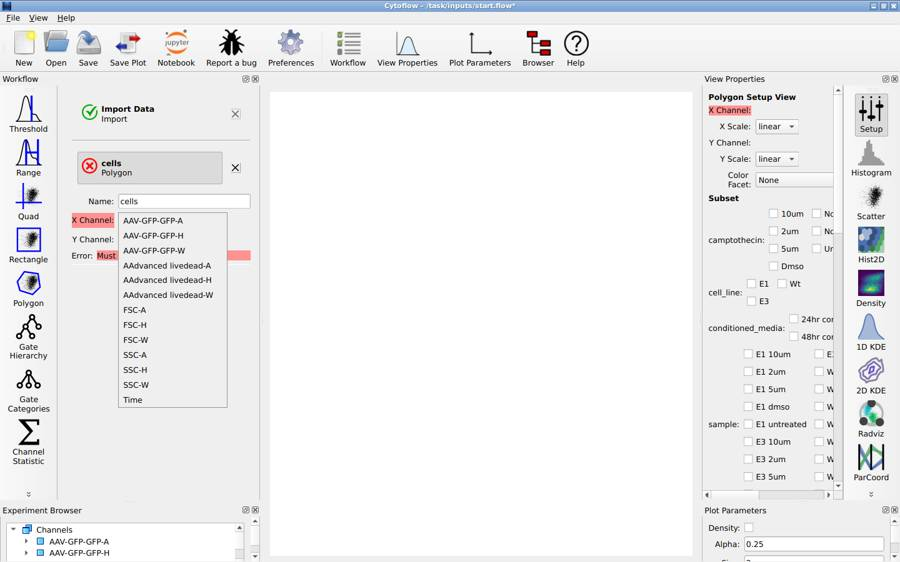
cd /task; cu click 215 496; sleep 1; cu click 276 383; sleep 1; cu screenshot /tmp/screen.png
{
"file_path": "/tmp/screen.png"
}/tmp/screen.png
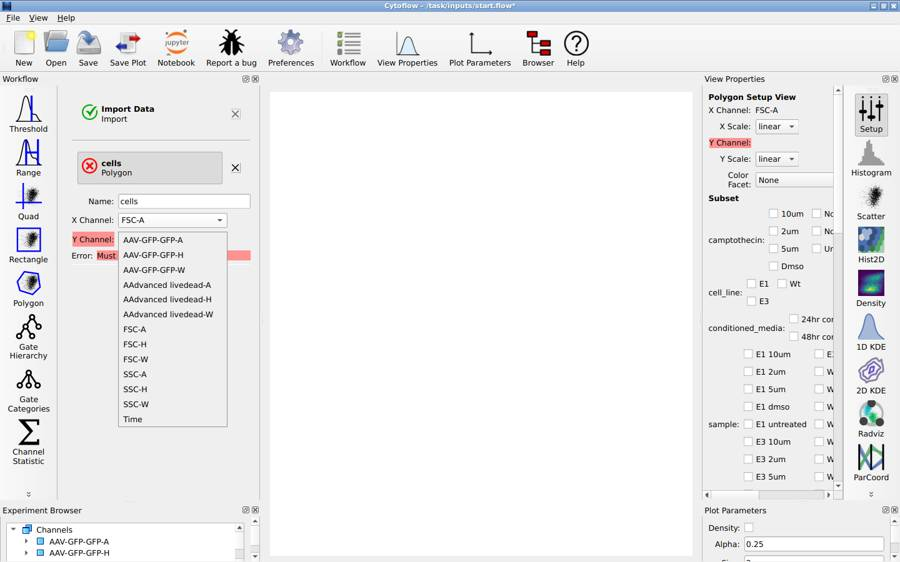
cd /task; cu click 215 599; sleep 25; cu screenshot /tmp/screen.png
{
"file_path": "/tmp/screen.png"
}/tmp/screen.png
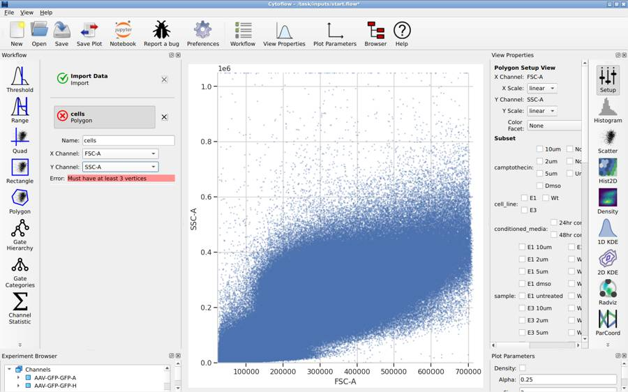
cd /task; cu click 1197 845; sleep 20; cu screenshot /tmp/screen.png
{
"file_path": "/tmp/screen.png"
}/tmp/screen.png
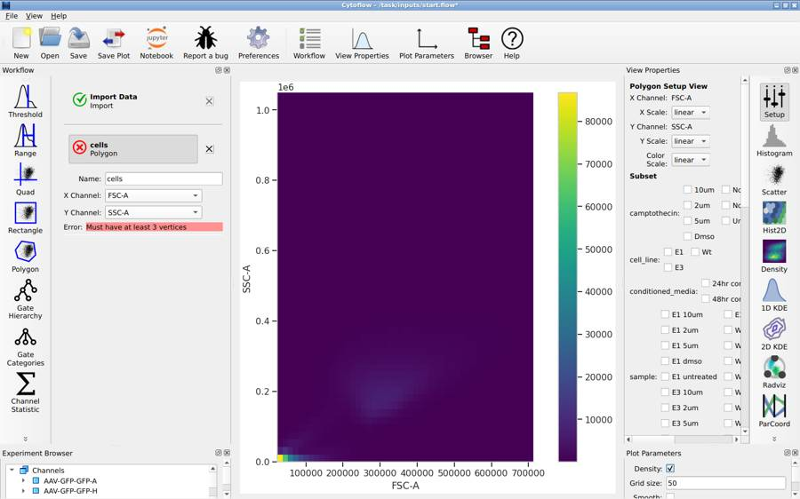
cd /task; cu click 1240 288; sleep 1; cu screenshot /tmp/screen.png
{
"file_path": "/tmp/screen.png"
}/tmp/screen.png
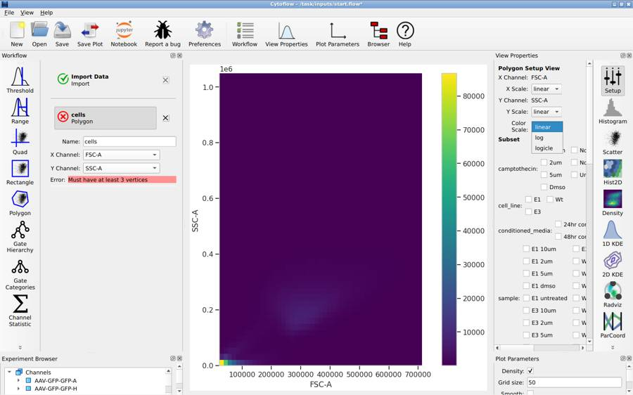
cd /task; cu click 1227 313; sleep 1; cu click 1305 871; cu key ctrl+a; cu type "100"; cu key Return; sleep 25; cu screenshot /tmp/screen.png
{
"file_path": "/tmp/screen.png"
}/tmp/screen.png
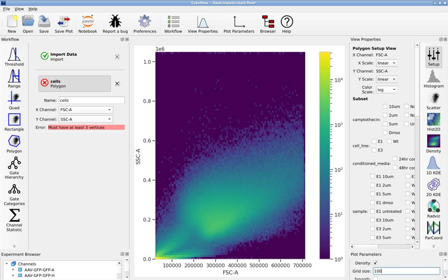
cd /task; cu scroll 1160 860 down 3; sleep 1; cu screenshot /tmp/screen.png
{
"file_path": "/tmp/screen.png"
}/tmp/screen.png
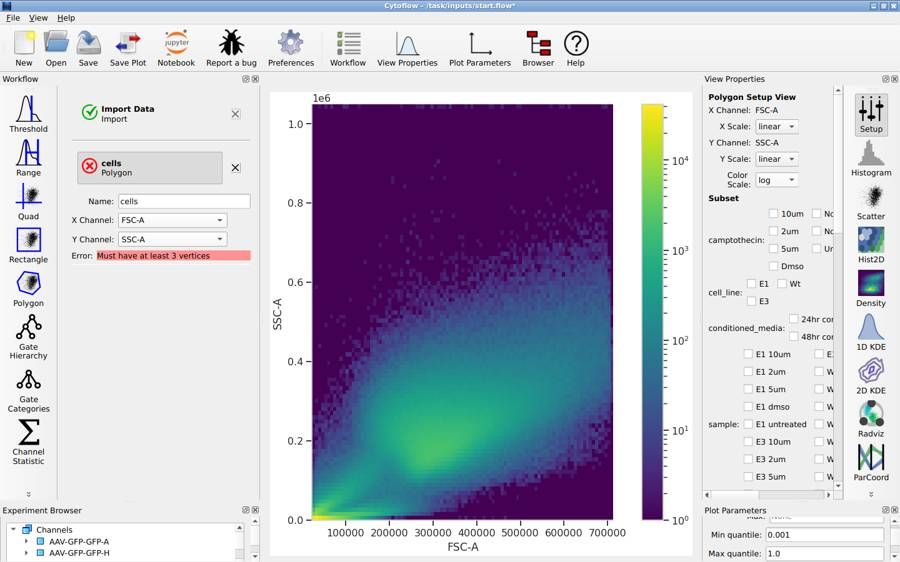
cd /task; cu drag 1235 806 1235 430; sleep 2; cu screenshot /tmp/screen.png
{
"file_path": "/tmp/screen.png"
}/tmp/screen.png
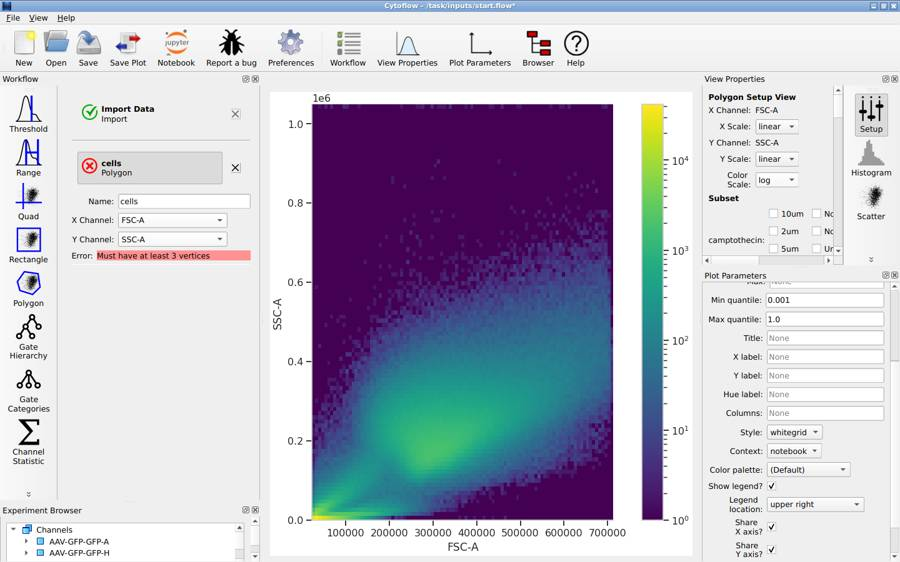
cd /task; cu scroll 1160 600 up 10; sleep 1; cu screenshot /tmp/screen.png
{
"file_path": "/tmp/screen.png"
}/tmp/screen.png
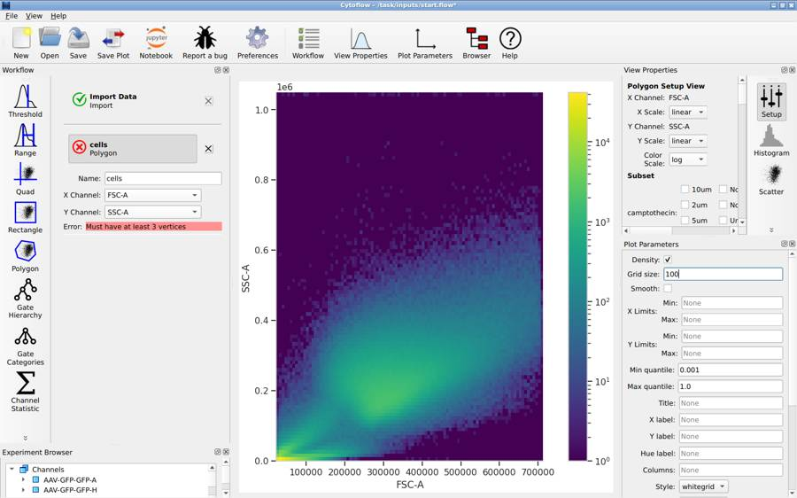
cd /task; cu click 1320 547; cu key ctrl+a; cu type "-20000"; cu key Return; sleep 1; cu click 1320 577; cu key ctrl+a; cu type "800000"; cu key Return; sleep 1; cu click 1320 607; cu key ctrl+a; cu type "-20000"; cu key Return; sleep 1; cu click 1320 638; cu key ctrl+a; cu type "1100000"; cu key Return; sleep 25; cu screenshot /tmp/screen.png
{
"file_path": "/tmp/screen.png"
}/tmp/screen.png
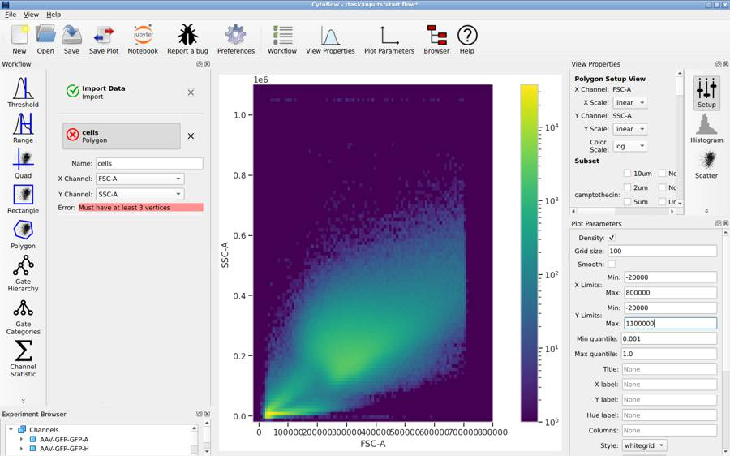
cd /task; for p in "546 786" "574 804" "966 804" "966 227" "713 227" "546 673" "546 786"; do cu click $p; sleep 0.7; done; sleep 3; cu screenshot /tmp/screen.png
{
"file_path": "/tmp/screen.png"
}/tmp/screen.png
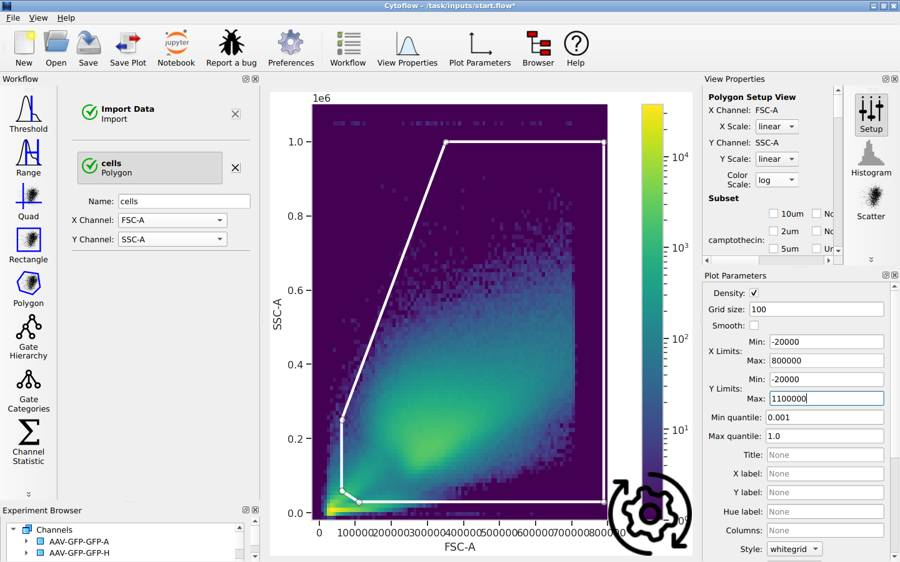
cd /task; sleep 5; cu click 45 460; sleep 2; cu click 294 409; cu type "singlets"; cu key Tab; sleep 1; cu screenshot /tmp/screen.png
{
"file_path": "/tmp/screen.png"
}/tmp/screen.png
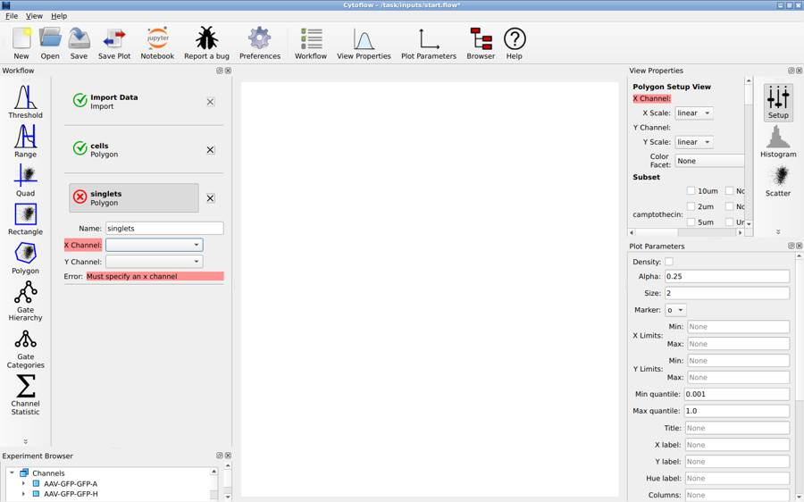
cd /task; cu click 276 439; sleep 1; cu screenshot /tmp/screen.png
{
"file_path": "/tmp/screen.png"
}/tmp/screen.png
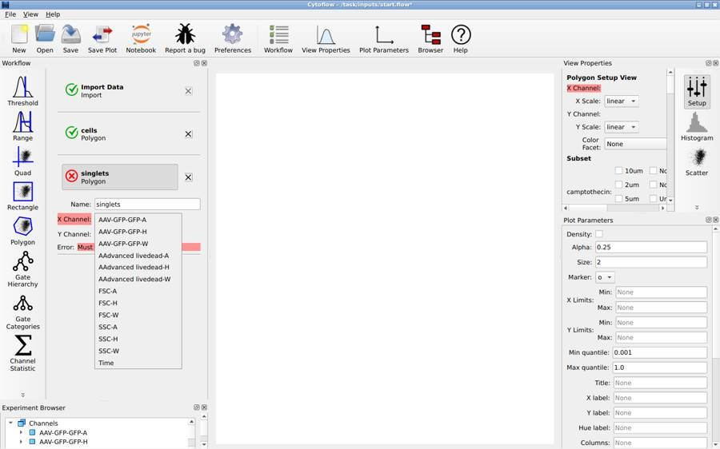
cd /task; cu click 215 583; sleep 1; cu click 276 469; sleep 1; cu screenshot /tmp/screen.png
{
"file_path": "/tmp/screen.png"
}/tmp/screen.png
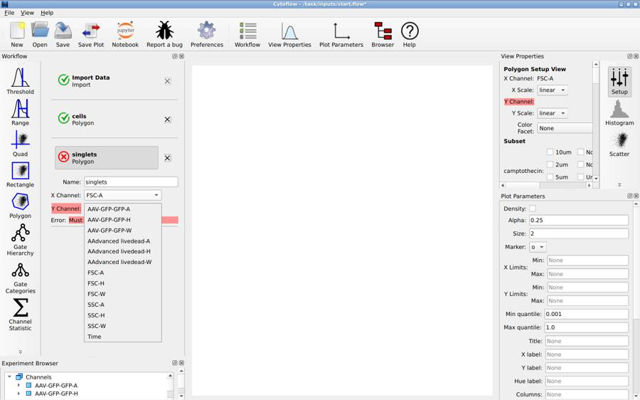
cd /task; cu click 215 637; sleep 1; cu click 1197 469; sleep 2; cu scroll 1230 350 down 15; sleep 1; cu screenshot /tmp/screen.png
{
"file_path": "/tmp/screen.png"
}/tmp/screen.png
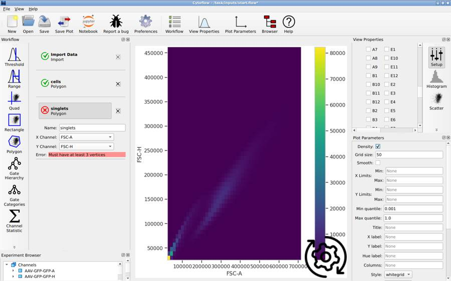
cd /task; cu scroll 1230 300 down 30; sleep 1; cu screenshot /tmp/screen.png
{
"file_path": "/tmp/screen.png"
}/tmp/screen.png
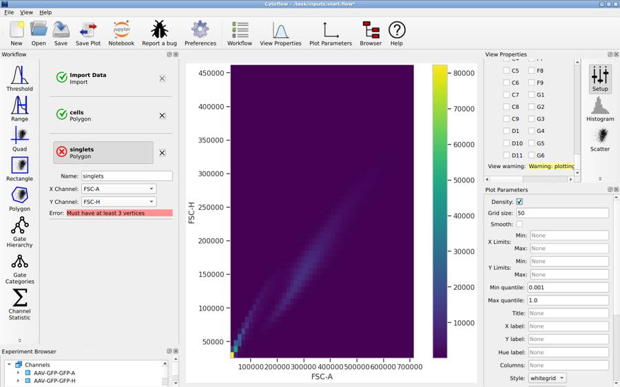
cd /task; cu drag 1235 430 1235 700; sleep 1; cu scroll 1230 300 up 40; sleep 1; cu screenshot /tmp/screen.png
{
"file_path": "/tmp/screen.png"
}/tmp/screen.png
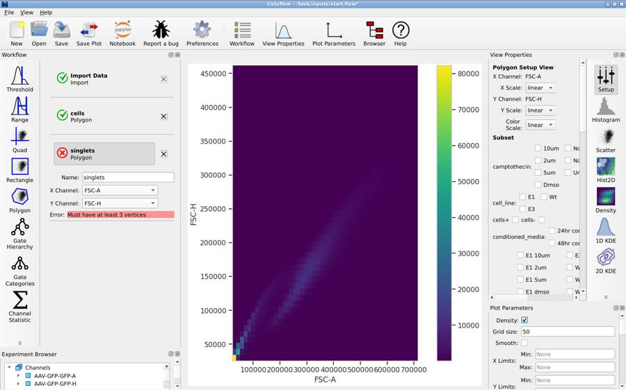
cd /task; cu click 1185 507; sleep 1; cu click 1240 288; sleep 1; cu click 1227 313; sleep 1; cu click 1305 765; cu key ctrl+a; cu type "100"; cu key Return; sleep 25; cu screenshot /tmp/screen.png
{
"file_path": "/tmp/screen.png"
}/tmp/screen.png
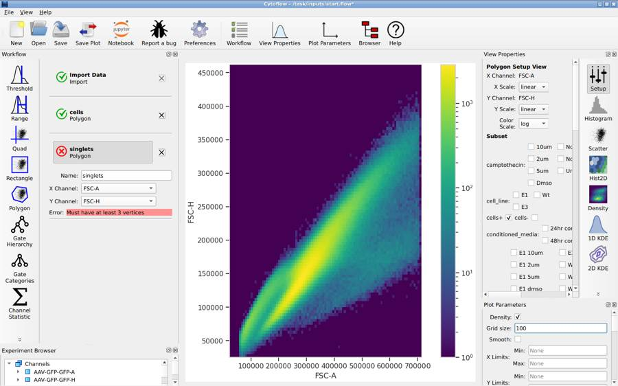
cd /tmp; python3 -c "
from PIL import Image
im=Image.open('/tmp/screen.png').crop((430,140,1010,890)).resize((1160,1500))
im.save('/tmp/crop.png')
" 2>&1 || echo nopil{
"file_path": "/tmp/crop.png"
}Shell cwd was reset to /task
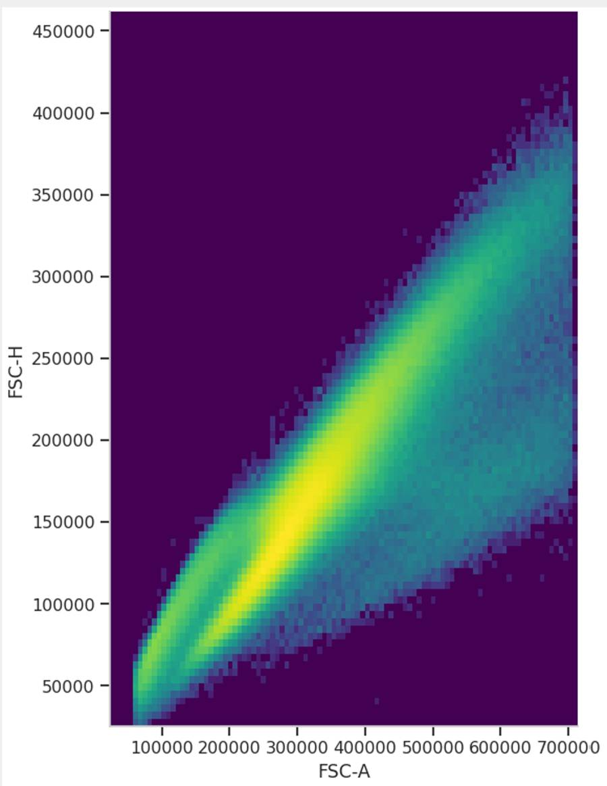
cd /task; cu click 1320 817; cu key ctrl+a; cu type "0"; cu key Return; sleep 1; cu click 1320 847; cu key ctrl+a; cu type "800000"; cu key Return; sleep 1; cu scroll 1160 800 down 2; sleep 1; cu screenshot /tmp/screen.png
{
"file_path": "/tmp/screen.png"
}/tmp/screen.png
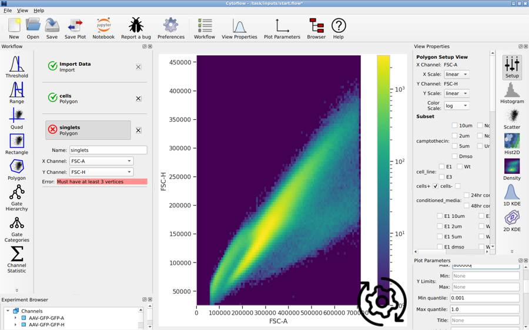
cd /task; cu click 1320 752; cu key ctrl+a; cu type "0"; cu key Return; sleep 1; cu click 1320 782; cu key ctrl+a; cu type "500000"; cu key Return; sleep 25; cu screenshot /tmp/screen.png
{
"file_path": "/tmp/screen.png"
}/tmp/screen.png
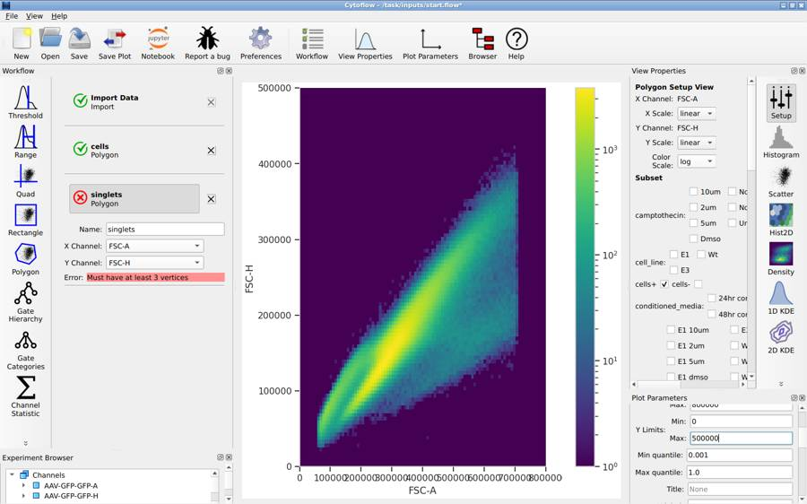
cd /task; for p in "557 810" "968 384" "968 164" "557 164" "557 810"; do cu click $p; sleep 0.7; done; sleep 20; cu screenshot /tmp/screen.png
{
"file_path": "/tmp/screen.png"
}/tmp/screen.png
cd /task; cu click 20 28; sleep 1; cu screenshot /tmp/screen.png
{
"file_path": "/tmp/screen.png"
}/tmp/screen.png
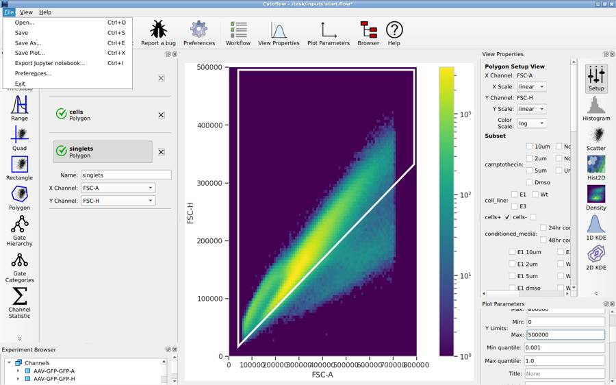
cd /task; cu click 65 100; sleep 2; cu screenshot /tmp/screen.png
{
"file_path": "/tmp/screen.png"
}/tmp/screen.png
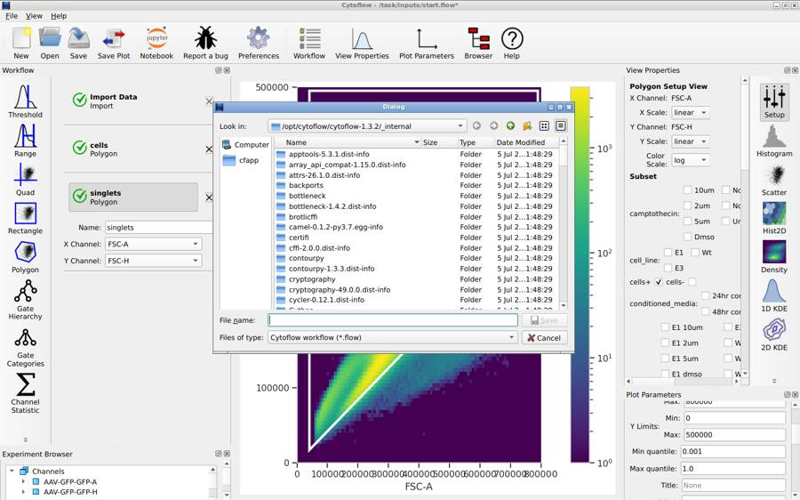
cd /task; cu click 706 576; cu paste "/task/outputs/workflow.flow"; cu key Return; sleep 3; cu screenshot /tmp/screen.png; ls -la /task/outputs
{
"file_path": "/tmp/screen.png"
}/tmp/screen.png total 88 drwxrwsrwx 2 agent task 4096 Nov 6 00:49 . drwxr-xr-x 4 root root 4096 Nov 5 22:00 .. -rw-rw-r-- 1 cfapp task 78459 Nov 6 00:49 workflow.flow
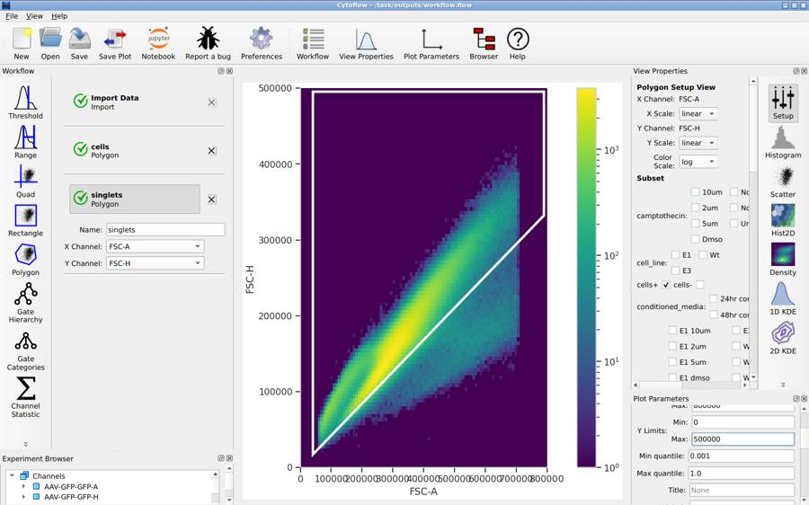
cd /task; grep -n -A40 "polygon" outputs/workflow.flow | head -80
2261: current_view: &id003 !polygon-view;3 2262- current_plot: null 2263- huefacet: '' 2264- huescale: log 2265: op: &id002 !polygon;1 2266- name: cells 2267- vertices: 2268- - !!python/tuple 2269- - 61953.62261925268 2270- - 59477.69551338235 2271- - !!python/tuple 2272- - 108871.78301337 2273- - 29705.385612090147 2274- - !!python/tuple 2275- - 789185.1087280712 2276- - 29705.385612090147 2277- - !!python/tuple 2278- - 789185.1087280712 2279- - 999932.4259247885 2280- - !!python/tuple 2281- - 350680.76350612857 2282- - 999932.4259247885 2283- - !!python/tuple 2284- - 61953.62261925268 2285- - 250370.7413510793 2286- xchannel: FSC-A 2287- xscale: linear 2288- ychannel: SSC-A 2289- yscale: linear 2290: plot_params: !polygon-params;1 2291- alpha: 0.25 2292- col_wrap: null 2293- density: true 2294- despine: true 2295- gridsize: 100 2296- huelabel: '' 2297- legend: true 2298- marker: o 2299- max_quantile: 1.0 2300- min_quantile: 0.001 2301- s: 2 2302- sharex: true 2303- sharey: true 2304- smoothed: false 2305- smoothed_sigma: 1.0 2306- sns_context: notebook 2307- sns_style: whitegrid 2308- title: '' 2309- xlabel: '' 2310- xlim: !!python/tuple 2311- - -20000.0 2312- - 800000.0 2313- ylabel: '' 2314- ylim: !!python/tuple 2315- - -20000.0 2316- - 1100000.0 2317- subset_list: 2318- - !category-subset;1 2319- name: camptothecin 2320- selected: [] 2321- values: 2322- - 10uM 2323- - 2uM 2324- - 5uM 2325- - DMSO 2326- - no treatment 2327- - not stated 2328- - untreated 2329- - !category-subset;1 2330- name: cell_line -- 3489: current_view: &id005 !polygon-view;3 3490- current_plot: null 3491- huefacet: '' 3492- huescale: log 3493: op: &id004 !polygon;1 3494- name: singlets 3495- vertices: 3496- - !!python/tuple 3497- - 40660.81974424195
cd /task; cu click 1393 455; sleep 2; cu screenshot /tmp/screen.png
{
"file_path": "/tmp/screen.png"
}/tmp/screen.png
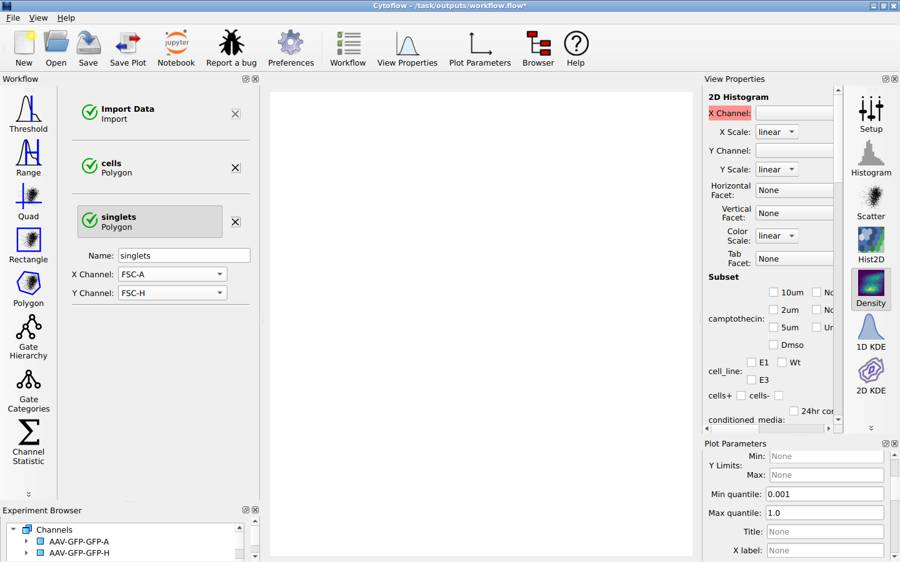
cd /task; cu click 1270 181; sleep 1; cu screenshot /tmp/screen.png
{
"file_path": "/tmp/screen.png"
}/tmp/screen.png
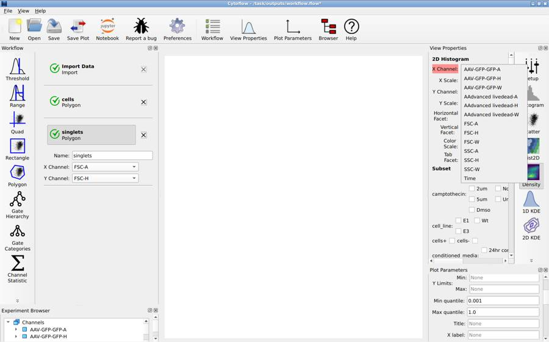
cd /task; cu click 1265 182; sleep 1; cu click 1270 241; sleep 1; cu screenshot /tmp/screen.png
{
"file_path": "/tmp/screen.png"
}/tmp/screen.png
cd /task; cu click 1287 314; sleep 1; cu click 1240 211; sleep 1; cu click 1240 259; sleep 1; cu click 1240 271; sleep 1; cu click 1240 319; sleep 1; cu click 1240 377; sleep 1; cu click 1240 401; sleep 1; cu click 1185 633; sleep 1; cu screenshot /tmp/screen.png
{
"file_path": "/tmp/screen.png"
}/tmp/screen.png
cd /task; sleep 15; cu scroll 1230 500 down 40; sleep 1; cu screenshot /tmp/screen.png
{
"file_path": "/tmp/screen.png"
}/tmp/screen.png
cd /task; cu scroll 1230 500 up 8; sleep 1; cu screenshot /tmp/screen.png
{
"file_path": "/tmp/screen.png"
}/tmp/screen.png
cd /task; cu scroll 1230 500 up 4; sleep 1; cu screenshot /tmp/screen.png
{
"file_path": "/tmp/screen.png"
}/tmp/screen.png
cd /task; cu click 1206 272; sleep 20; cu screenshot /tmp/screen.png
{
"file_path": "/tmp/screen.png"
}/tmp/screen.png
cd /task; cu scroll 1230 400 up 40; sleep 1; cu click 1270 304; sleep 1; cu screenshot /tmp/screen.png
{
"file_path": "/tmp/screen.png"
}/tmp/screen.png
cd /task; cu click 1230 276; sleep 1; cu click 1270 409; sleep 1; cu screenshot /tmp/screen.png
{
"file_path": "/tmp/screen.png"
}/tmp/screen.png
cd /task; cu click 1233 577; sleep 40; cu screenshot /tmp/screen.png
{
"file_path": "/tmp/screen.png"
}/tmp/screen.png
cd /task; sleep 30; cu click 204 75; sleep 5; cu screenshot /tmp/screen.png
{
"file_path": "/tmp/screen.png"
}/tmp/screen.png
cd /task; cu click 1320 436; cu key ctrl+a; cu type "12"; cu key Return; sleep 45; cu click 1305 841; sleep 2; cu click 706 576; cu paste "/tmp/qc/bl1_bl2.png"; cu key Return; sleep 50; ls -la /tmp/qc
total 460 drwxrwxrwx 2 root root 4096 Nov 6 00:42 . drwxrwxrwx 9 root root 4096 Nov 6 00:52 .. -rw-rw-r-- 1 cfapp cfapp 367711 Nov 6 00:42 fsc_ssc.png -rw-rw-r-- 1 cfapp cfapp 93371 Nov 6 00:39 time_hist.png
cd /task; cu screenshot /tmp/screen.png
/tmp/screen.png
{
"file_path": "/tmp/screen.png"
}cd /task; sleep 60; cu screenshot /tmp/screen.png
{
"file_path": "/tmp/screen.png"
}/tmp/screen.png
cd /task; cu click 1305 841; sleep 3; cu screenshot /tmp/screen.png
{
"file_path": "/tmp/screen.png"
}/tmp/screen.png
cd /task; cu click 706 576; cu paste "/tmp/qc/bl1_bl2.png"; cu key Return; sleep 90; ls -la /tmp/qc
total 864 drwxrwxrwx 2 root root 4096 Nov 6 00:55 . drwxrwxrwx 9 root root 4096 Nov 6 00:55 .. -rw-rw-r-- 1 cfapp cfapp 411716 Nov 6 00:55 bl1_bl2.png -rw-rw-r-- 1 cfapp cfapp 367711 Nov 6 00:42 fsc_ssc.png -rw-rw-r-- 1 cfapp cfapp 93371 Nov 6 00:39 time_hist.png
{
"file_path": "/tmp/qc/bl1_bl2.png"
}cd /task; cu click 1305 871; sleep 3; cu screenshot /tmp/screen.png
{
"file_path": "/tmp/screen.png"
}/tmp/screen.png
cd /task; cu click 1393 245; sleep 3; cu screenshot /tmp/screen.png
{
"file_path": "/tmp/screen.png"
}/tmp/screen.png
cd /task; cu click 1393 455; sleep 3; cu click 1240 206; sleep 1; cu click 1240 230; sleep 1; cu click 1240 266; sleep 1; cu click 1240 290; sleep 30; cu screenshot /tmp/screen.png
{
"file_path": "/tmp/screen.png"
}/tmp/screen.png
cd /task; sleep 45; cu click 1240 206; sleep 1; cu screenshot /tmp/screen.png
{
"file_path": "/tmp/screen.png"
}/tmp/screen.png
cd /task; cu click 1227 183; sleep 2; cu click 1240 266; sleep 1; cu click 1227 242; sleep 1; cu screenshot /tmp/screen.png
{
"file_path": "/tmp/screen.png"
}/tmp/screen.png

cd /task; sleep 80; cu click 204 75; sleep 60; cu screenshot /tmp/screen.png
{
"file_path": "/tmp/screen.png"
}Command did not complete within its 120s timeout and was moved to the background (ID: bogd7w47t). Output is being written to: /tmp/claude-0/-task/80dd1184-6d74-4f30-b6a6-b41efb2cc786/tasks/bogd7w47t.output. You will be notified when it completes. If it is still running after 10m in the background, it will be stopped and you will be notified. It is running now: do not start a second copy while it runs. If it is no longer needed, stop it with TaskStop. No output had been read from it when it was moved. A program that buffers its output, or a pipe into one such as tail, can keep the output file empty until the command finishes. To check interim output, use Read on that file path. Session cwd remains /task; directory changes made by the backgrounded command do not apply to subsequent commands.

sleep 60; cat /tmp/claude-0/-task/80dd1184-6d74-4f30-b6a6-b41efb2cc786/tasks/bogd7w47t.output; cd /task; cu screenshot /tmp/screen.png
<tool_use_error>Blocked: sleep 60 followed by: cat /tmp/claude-0/-task/80dd1184-6d74-4f30-b6a6-b41efb2cc786/tasks/bogd7w47t.output cd /task cu screenshot /tmp/screen.png. To wait for a condition, use Monitor with an until-loop (e.g. `until <check>; do sleep 2; done`). To wait for a command you started, use run_in_background: true. Do not chain shorter sleeps to work around this block.</tool_use_error>
{
"file_path": "/tmp/screen.png"
}{
"query": "select:Monitor",
"max_results": 1
}until [ -s /tmp/claude-0/-task/80dd1184-6d74-4f30-b6a6-b41efb2cc786/tasks/bogd7w47t.output ] || ! pgrep -f "sleep 80" >/dev/null && ! pgrep -f "sleep 60" > /dev/null; do sleep 2; done; cat /tmp/claude-0/-task/80dd1184-6d74-4f30-b6a6-b41efb2cc786/tasks/bogd7w47t.output; cd /task; cu screenshot /tmp/screen.png
{
"file_path": "/tmp/screen.png"
}Command did not complete within its 200s timeout and was moved to the background (ID: brbvyctym). Output is being written to: /tmp/claude-0/-task/80dd1184-6d74-4f30-b6a6-b41efb2cc786/tasks/brbvyctym.output. You will be notified when it completes. If it is still running after 10m in the background, it will be stopped and you will be notified. It is running now: do not start a second copy while it runs. If it is no longer needed, stop it with TaskStop. No output had been read from it when it was moved. A program that buffers its output, or a pipe into one such as tail, can keep the output file empty until the command finishes. To check interim output, use Read on that file path. Session cwd remains /task; directory changes made by the backgrounded command do not apply to subsequent commands.
{
"task_id": "brbvyctym"
}{"message":"Successfully stopped task: brbvyctym (until [ -s /tmp/claude-0/-task/80dd1184-6d74-4f30-b6a6-b41efb2cc786/tasks/bogd7w47t.output ] || ! pgrep -f \"sleep 80\" >/dev/null && ! pgrep -f \"sleep 60\" > /dev/null; do sleep 2; done; cat /tmp/claude-0/-task/80dd1184-6d74-4f30-b6a6-b41efb2cc786/tasks/bogd7w47t.output; cd /task; cu screenshot /tmp/screen.png)","task_id":"brbvyctym","task_type":"local_bash","command":"until [ -s /tmp/claude-0/-task/80dd1184-6d74-4f30-b6a6-b41efb2cc786/tasks/bogd7w47t.output ] || ! pgrep -f \"sleep 80\" >/dev/null && ! pgrep -f \"sleep 60\" > /dev/null; do sleep 2; done; cat /tmp/claude-0/-task/80dd1184-6d74-4f30-b6a6-b41efb2cc786/tasks/bogd7w47t.output; cd /task; cu screenshot /tmp/screen.png"}cd /task; cu click 1320 134; cu key ctrl+a; cu type "50"; cu key Tab; cu click 1320 164; cu key ctrl+a; cu type "1000000"; cu key Tab; cu click 1320 194; cu key ctrl+a; cu type "50"; cu key Tab; cu click 1320 224; cu key ctrl+a; cu type "1000000"; cu key Return; echo ok
ok
cd /task; sleep 100; cu screenshot /tmp/screen.png
{
"file_path": "/tmp/screen.png"
}/tmp/screen.png
cd /task; cu click 1320 164; cu key ctrl+a; cu type "30000"; cu key Tab; cu click 1320 224; cu key ctrl+a; cu type "300000"; cu key Return; sleep 100; cu screenshot /tmp/screen.png
{
"file_path": "/tmp/screen.png"
}/tmp/screen.png
cd /task; cu click 1305 750; cu key ctrl+a; cu type "30"; cu click 1305 780; cu key ctrl+a; cu type "24"; cu click 1305 810; cu key ctrl+a; cu type "60"; cu click 1305 841; sleep 3; cu click 706 576; cu paste "/tmp/qc/bl1_bl2_log.png"; cu key Return; echo ok
ok
until [ -f /tmp/qc/bl1_bl2_log.png ]; do sleep 3; done; sleep 5; ls -la /tmp/qc
total 1200 drwxrwxrwx 2 root root 4096 Nov 6 01:09 . drwxrwxrwx 9 root root 4096 Nov 6 01:09 .. -rw-rw-r-- 1 cfapp cfapp 411716 Nov 6 00:55 bl1_bl2.png -rw-rw-r-- 1 cfapp cfapp 342161 Nov 6 01:09 bl1_bl2_log.png -rw-rw-r-- 1 cfapp cfapp 367711 Nov 6 00:42 fsc_ssc.png -rw-rw-r-- 1 cfapp cfapp 93371 Nov 6 00:39 time_hist.png
{
"file_path": "/tmp/qc/bl1_bl2_log.png"
}thinking
The "caspase only" control matches the unstained well, and no well shows a bright caspase signal in BL1, while SYTOX in BL2 separates dead cells near 5×10⁴. I'm checking the 1D histograms per channel next to set thresholds.
cd /task; cu click 1305 871; sleep 3; cu click 1393 245; sleep 3; cu screenshot /tmp/screen.png
{
"file_path": "/tmp/screen.png"
}/tmp/screen.png
cd /task; cu click 1268 175; sleep 1; cu screenshot /tmp/screen.png
{
"file_path": "/tmp/screen.png"
}/tmp/screen.png
cd /task; cu click 1282 248; sleep 1; cu click 1237 206; sleep 1; cu click 1230 230; sleep 1; cu click 1185 604; sleep 1; cu click 1268 239; sleep 1; cu screenshot /tmp/screen.png
{
"file_path": "/tmp/screen.png"
}/tmp/screen.png
cd /task; cu click 1228 239; sleep 1; cu click 1268 312; sleep 1; cu screenshot /tmp/screen.png
{
"file_path": "/tmp/screen.png"
}/tmp/screen.png
cd /task; cu click 1228 312; sleep 1; cu click 1268 175; sleep 1; cu click 1260 176; sleep 1; cu click 1268 239; sleep 1; cu click 1225 288; sleep 1; cu screenshot /tmp/screen.png
{
"file_path": "/tmp/screen.png"
}/tmp/screen.png
cd /task; cu click 1268 175; sleep 1.5; cu screenshot /tmp/screen.png
{
"file_path": "/tmp/screen.png"
}/tmp/screen.png
cd /task; cu click 1259 105; sleep 2; cu click 1268 239; sleep 1.5; cu screenshot /tmp/screen.png
{
"file_path": "/tmp/screen.png"
}/tmp/screen.png
cd /task; cu key Escape; python3 -c "
from PIL import Image
im=Image.open('/tmp/qc/time_hist.png'); print(im.size)
"(1828, 1268)
{
"file_path": "/tmp/qc/time_hist.png"
}{
"file_path": "/tmp/qc/fsc_ssc.png"
}cd /task; cu click 1268 239; sleep 1.5; cu click 1225 215; sleep 2; cu click 1237 206; sleep 1; cu screenshot /tmp/screen.png
{
"file_path": "/tmp/screen.png"
}/tmp/screen.png
cd /task; cu click 1237 207; sleep 60; cu screenshot /tmp/screen.png
{
"file_path": "/tmp/screen.png"
}/tmp/screen.png
cd /task; cu click 204 75; sleep 8; cu screenshot /tmp/screen.png
{
"file_path": "/tmp/screen.png"
}/tmp/screen.png
cd /task; cu click 1212 198; sleep 1; cu click 1330 285; cu key ctrl+a; cu type "20"; cu key Tab; cu click 1330 315; cu key ctrl+a; cu type "100000"; cu key Tab; cu click 1320 526; cu key ctrl+a; cu type "12"; cu key Return; sleep 1; cu scroll 1270 600 down 5; sleep 1; cu screenshot /tmp/screen.png
{
"file_path": "/tmp/screen.png"
}/tmp/screen.png
cd /task; cu click 1234 682; sleep 90; cu screenshot /tmp/screen.png
{
"file_path": "/tmp/screen.png"
}/tmp/screen.png
cd /task; cu click 1305 871; sleep 3; cu click 45 720; sleep 3; cu screenshot /tmp/screen.png
{
"file_path": "/tmp/screen.png"
}/tmp/screen.png
cd /task; cu drag 420 510 640 510; sleep 2; cu screenshot /tmp/screen.png
{
"file_path": "/tmp/screen.png"
}/tmp/screen.png
cd /task; cu click 390 495; cu type "med_bl1"; cu key Tab; sleep 0.5; cu click 265 525; sleep 1; cu screenshot /tmp/screen.png
{
"file_path": "/tmp/screen.png"
}/tmp/screen.png
cd /task; cu click 234 526; sleep 1; cu click 255 555; sleep 1; cu screenshot /tmp/screen.png
{
"file_path": "/tmp/screen.png"
}/tmp/screen.png
cd /task; cu click 209 819; sleep 1; cu click 404 641; sleep 1; cu scroll 350 700 down 20; sleep 1; cu screenshot /tmp/screen.png
{
"file_path": "/tmp/screen.png"
}/tmp/screen.png
cd /task; cu scroll 350 500 up 6; sleep 1; cu screenshot /tmp/screen.png
{
"file_path": "/tmp/screen.png"
}/tmp/screen.png
cd /task; cu click 186 150; sleep 1; cu scroll 350 500 up 3; sleep 1; cu screenshot /tmp/screen.png
{
"file_path": "/tmp/screen.png"
}/tmp/screen.png
cd /task; cu scroll 350 500 up 5; sleep 1; cu screenshot /tmp/screen.png
{
"file_path": "/tmp/screen.png"
}/tmp/screen.png
cd /task; cu click 186 266; sleep 1; cu scroll 350 500 down 30; sleep 1; cu screenshot /tmp/screen.png
{
"file_path": "/tmp/screen.png"
}/tmp/screen.png
cd /task; cu click 166 773; sleep 1; cu scroll 350 500 up 40; sleep 1; cu screenshot /tmp/screen.png
{
"file_path": "/tmp/screen.png"
}/tmp/screen.png
cd /task; cu click 186 641; sleep 3; cu scroll 1393 600 down 5; sleep 1; cu screenshot /tmp/screen.png
{
"file_path": "/tmp/screen.png"
}/tmp/screen.png
cd /task; cu click 1393 790; sleep 1; cu click 1393 790; sleep 1; cu screenshot /tmp/screen.png
{
"file_path": "/tmp/screen.png"
}/tmp/screen.png
cd /task; cu click 1393 791; sleep 0.5; cu screenshot /tmp/screen.png
{
"file_path": "/tmp/screen.png"
}/tmp/screen.png
cd /task; cu click 1399 535; sleep 3; cu screenshot /tmp/screen.png
{
"file_path": "/tmp/screen.png"
}/tmp/screen.png
cd /task; cu click 1393 791; sleep 1; cu drag 640 510 430 510; sleep 2; cu screenshot /tmp/screen.png
{
"file_path": "/tmp/screen.png"
}/tmp/screen.png
cd /task; cu click 1262 181; sleep 1; cu screenshot /tmp/screen.png
{
"file_path": "/tmp/screen.png"
}/tmp/screen.png
cd /task; cu click 1250 206; sleep 2; cu click 1255 211; sleep 1; cu screenshot /tmp/screen.png
{
"file_path": "/tmp/screen.png"
}/tmp/screen.png
cd /task; cu click 1270 212; sleep 1; cu click 1244 241; sleep 1; cu screenshot /tmp/screen.png
{
"file_path": "/tmp/screen.png"
}/tmp/screen.png
cd /task; cu click 1236 218; sleep 3; cu click 1268 392; sleep 2; cu screenshot /tmp/screen.png
{
"file_path": "/tmp/screen.png"
}/tmp/screen.png
cd /task; cu click 706 567; cu paste "/tmp/qc/med_bl1.csv"; cu key Return; sleep 3; cat /tmp/qc/med_bl1.csv | head -100
well = A1,180.0 well = A10,188.0 well = A11,182.0 well = A12,162.0 well = A2,177.0 well = A3,177.0 well = A4,160.0 well = A5,193.0 well = A6,177.0 well = A7,178.0 well = A8,161.0 well = A9,209.0 well = B1,265.0 well = B10,260.0 well = B11,251.0 well = B12,249.0 well = B2,252.0 well = B3,250.0 well = B4,239.0 well = B5,254.0 well = B6,239.0 well = B7,242.0 well = B8,231.0 well = B9,277.0 well = C1,245.0 well = C10,254.0 well = C11,253.0 well = C12,234.0 well = C2,235.0 well = C3,237.5 well = C4,235.0 well = C5,239.5 well = C6,245.0 well = C7,247.0 well = C8,233.0 well = C9,256.0 well = D1,194.0 well = D10,205.0 well = D11,200.0 well = D12,174.0 well = D2,187.0 well = D3,196.0 well = D4,180.0 well = D5,201.0 well = D6,195.0 well = D7,200.0 well = D8,177.0 well = D9,200.0 well = E1,260.0 well = E10,275.0 well = E11,266.0 well = E12,257.0 well = E2,256.0 well = E3,264.0 well = E4,262.0 well = E5,261.0 well = E6,259.0 well = E7,252.0 well = E8,244.0 well = E9,238.0 well = F1,244.0 well = F10,264.0 well = F11,262.0 well = F12,242.0 well = F2,247.0 well = F3,256.0 well = F4,238.0 well = F5,232.5 well = F6,262.0 well = F7,259.0 well = F8,247.0 well = F9,259.0 well = G1,133.0 well = G2,142.0 well = G3,169.0 well = G4,254.0 well = G5,245.0 well = G6,179.0
cd /task; cu click 265 525; sleep 1; cu click 256 598; sleep 1; cu click 290 495; cu key ctrl+a; cu type "med_bl2"; cu key Tab; sleep 5; cu click 1262 181; sleep 1; cu screenshot /tmp/screen.png
{
"file_path": "/tmp/screen.png"
}/tmp/screen.png
cd /task; cu click 1250 206; sleep 2; cu click 1255 211; sleep 1; cu screenshot /tmp/screen.png
{
"file_path": "/tmp/screen.png"
}/tmp/screen.png
cd /task; cu click 1290 212; sleep 2; cu click 1268 392; sleep 2; cu click 706 567; cu paste "/tmp/qc/med_bl2.csv"; cu key Return; sleep 3; paste -d, /tmp/qc/med_bl1.csv /tmp/qc/med_bl2.csv | column -t -s, | head -80
/bin/bash: line 1: column: command not found
paste -d, /tmp/qc/med_bl1.csv /tmp/qc/med_bl2.csv | tr '\n' ';' | sed 's/well = //g'
A1,180.0,A1,567.0;A10,188.0,A10,654.0;A11,182.0,A11,601.0;A12,162.0,A12,548.0;A2,177.0,A2,504.0;A3,177.0,A3,506.0;A4,160.0,A4,388.0;A5,193.0,A5,667.5;A6,177.0,A6,574.0;A7,178.0,A7,569.0;A8,161.0,A8,452.0;A9,209.0,A9,717.0;B1,265.0,B1,708.0;B10,260.0,B10,1280.0;B11,251.0,B11,1217.0;B12,249.0,B12,1108.0;B2,252.0,B2,1056.0;B3,250.0,B3,1066.0;B4,239.0,B4,972.0;B5,254.0,B5,1361.0;B6,239.0,B6,1082.5;B7,242.0,B7,1090.0;B8,231.0,B8,1115.5;B9,277.0,B9,1899.0;C1,245.0,C1,1571.0;C10,254.0,C10,1730.5;C11,253.0,C11,1450.0;C12,234.0,C12,1294.0;C2,235.0,C2,1278.0;C3,237.5,C3,1380.5;C4,235.0,C4,1550.0;C5,239.5,C5,2342.0;C6,245.0,C6,1690.0;C7,247.0,C7,1509.0;C8,233.0,C8,1537.0;C9,256.0,C9,2181.0;D1,194.0,D1,695.0;D10,205.0,D10,768.0;D11,200.0,D11,662.0;D12,174.0,D12,666.0;D2,187.0,D2,538.0;D3,196.0,D3,615.0;D4,180.0,D4,541.0;D5,201.0,D5,714.5;D6,195.0,D6,691.5;D7,200.0,D7,792.0;D8,177.0,D8,720.0;D9,200.0,D9,819.0;E1,260.0,E1,1139.0;E10,275.0,E10,1925.0;E11,266.0,E11,1174.5;E12,257.0,E12,1014.0;E2,256.0,E2,1035.0;E3,264.0,E3,1092.0;E4,262.0,E4,1177.0;E5,261.0,E5,1479.0;E6,259.0,E6,1249.5;E7,252.0,E7,1179.5;E8,244.0,E8,1403.0;E9,238.0,E9,2040.0;F1,244.0,F1,1466.0;F10,264.0,F10,1410.0;F11,262.0,F11,1515.0;F12,242.0,F12,1283.0;F2,247.0,F2,1205.0;F3,256.0,F3,1332.0;F4,238.0,F4,1239.0;F5,232.5,F5,1296.0;F6,262.0,F6,1349.5;F7,259.0,F7,1272.5;F8,247.0,F8,1315.0;F9,259.0,F9,1548.0;G1,133.0,G1,408.0;G2,142.0,G2,615.0;G3,169.0,G3,477.0;G4,254.0,G4,840.0;G5,245.0,G5,1190.0;G6,179.0,G6,584.0;
cd /task; cu click 45 250; sleep 2; cu screenshot /tmp/screen.png
{
"file_path": "/tmp/screen.png"
}/tmp/screen.png
cd /task; cu click 293 581; cu type "live"; cu key Tab; sleep 1; cu click 263 612; sleep 1; cu screenshot /tmp/screen.png
{
"file_path": "/tmp/screen.png"
}/tmp/screen.png
cd /task; cu click 255 672; sleep 1; cu click 293 642; cu key ctrl+a; cu type "-100000"; cu key Tab; cu click 293 672; cu key ctrl+a; cu type "10000"; cu key Tab; sleep 2; cu click 1230 202; sleep 1; cu screenshot /tmp/screen.png
{
"file_path": "/tmp/screen.png"
}/tmp/screen.png
cd /task; cu click 1238 252; sleep 3; cu scroll 1230 600 down 3; sleep 1; cu screenshot /tmp/screen.png
{
"file_path": "/tmp/screen.png"
}/tmp/screen.png
cd /task; cu click 1206 599; sleep 1; cu scroll 1230 600 down 30; sleep 1; cu screenshot /tmp/screen.png
{
"file_path": "/tmp/screen.png"
}/tmp/screen.png
cd /task; cu click 1235 646; sleep 8; cu screenshot /tmp/screen.png
{
"file_path": "/tmp/screen.png"
}/tmp/screen.png
cd /task; cu click 45 180; sleep 2; cu screenshot /tmp/screen.png
{
"file_path": "/tmp/screen.png"
}/tmp/screen.png
cd /task; cu click 298 668; cu type "casp_pos"; cu key Tab; sleep 1; cu click 273 698; sleep 1; cu screenshot /tmp/screen.png
{
"file_path": "/tmp/screen.png"
}/tmp/screen.png
cd /task; cu click 243 600; sleep 1; cu click 298 728; cu key ctrl+a; cu type "1000"; cu key Tab; sleep 3; cu click 1235 690; sleep 1; cu click 1230 202 ; sleep 1; cu screenshot /tmp/screen.png
{
"file_path": "/tmp/screen.png"
}/tmp/screen.png
cd /task; cu click 1235 212; sleep 1; cu click 1235 690; sleep 1; cu scroll 1230 400 up 40; sleep 1; cu screenshot /tmp/screen.png
{
"file_path": "/tmp/screen.png"
}/tmp/screen.png
cd /task; cu click 1182 555; sleep 1; cu click 1240 224; sleep 1; cu screenshot /tmp/screen.png
{
"file_path": "/tmp/screen.png"
}/tmp/screen.png
cd /task; cu click 1235 273; sleep 8; cu screenshot /tmp/screen.png
{
"file_path": "/tmp/screen.png"
}/tmp/screen.png
cd /task; cu click 175 520; sleep 3; cu screenshot /tmp/screen.png
{
"file_path": "/tmp/screen.png"
}/tmp/screen.png
cd /task; cu click 1393 245; sleep 3; cu screenshot /tmp/screen.png
{
"file_path": "/tmp/screen.png"
}/tmp/screen.png
cd /task; cu click 1268 181; sleep 1; cu screenshot /tmp/screen.png
{
"file_path": "/tmp/screen.png"
}/tmp/screen.png
cd /task; cu click 1282 254; sleep 1; cu click 1185 609; sleep 1; cu click 1237 211; sleep 1; cu screenshot /tmp/screen.png
{
"file_path": "/tmp/screen.png"
}/tmp/screen.png
cd /task; cu click 1232 260; sleep 2; cu click 1268 244; sleep 1; cu screenshot /tmp/screen.png
{
"file_path": "/tmp/screen.png"
}/tmp/screen.png
cd /task; cu click 1225 221; sleep 60; cu click 204 75; sleep 5; cu screenshot /tmp/screen.png
{
"file_path": "/tmp/screen.png"
}/tmp/screen.png
cd /task; cu click 1212 192; cu click 1320 520; cu key ctrl+a; cu type "12"; cu key Tab; sleep 1; cu scroll 1270 600 down 5; sleep 1; cu screenshot /tmp/screen.png
{
"file_path": "/tmp/screen.png"
}/tmp/screen.png
cd /task; cu scroll 1150 400 down 5; sleep 1; cu screenshot /tmp/screen.png
{
"file_path": "/tmp/screen.png"
}/tmp/screen.png
cd /task; cu click 1320 410; cu key End; cu key Return; sleep 1; cu click 1320 228; cu key ctrl+a; cu type "0"; cu key Return; sleep 90; cu screenshot /tmp/screen.png
{
"file_path": "/tmp/screen.png"
}/tmp/screen.png
cd /task; cu click 1320 228; cu key ctrl+a; cu type "0.001"; cu key Return; sleep 2; cu click 1305 841; sleep 3; cu click 706 576; cu paste "/tmp/qc/bl2_hist.png"; cu key Return; echo
(Bash completed with no output)
until [ -f /tmp/qc/bl2_hist.png ]; do sleep 3; done; sleep 5; ls -la /tmp/qc/bl2_hist.png
-rw-rw-r-- 1 cfapp cfapp 117020 Nov 6 01:26 /tmp/qc/bl2_hist.png
{
"file_path": "/tmp/qc/bl2_hist.png"
}cd /task; cu click 1305 871; sleep 3; cu click 1268 181; sleep 1; cu screenshot /tmp/screen.png
{
"file_path": "/tmp/screen.png"
}/tmp/screen.png
cd /task; cu click 1259 110; sleep 1; cu click 1182 688; sleep 90; cu screenshot /tmp/screen.png
{
"file_path": "/tmp/screen.png"
}/tmp/screen.png
cd /task; cu click 204 75; sleep 5; cu scroll 1150 400 up 10; sleep 1; cu screenshot /tmp/screen.png
{
"file_path": "/tmp/screen.png"
}/tmp/screen.png
cd /task; cu click 1330 285; cu key ctrl+a; cu type "-200"; cu key Tab; cu click 1330 315; cu key ctrl+a; cu type "100000"; cu key Return; sleep 2; cu click 1305 841; sleep 3; cu click 706 576; cu paste "/tmp/qc/bl1_hist.png"; cu key Return; echo
(Bash completed with no output)
until [ -f /tmp/qc/bl1_hist.png ]; do sleep 3; done; sleep 5; ls -la /tmp/qc/bl1_hist.png
Command did not complete within its 400s timeout and was moved to the background (ID: bwoye564w). Output is being written to: /tmp/claude-0/-task/80dd1184-6d74-4f30-b6a6-b41efb2cc786/tasks/bwoye564w.output. You will be notified when it completes. If it is still running after 10m in the background, it will be stopped and you will be notified. It is running now: do not start a second copy while it runs. If it is no longer needed, stop it with TaskStop. No output had been read from it when it was moved. A program that buffers its output, or a pipe into one such as tail, can keep the output file empty until the command finishes. To check interim output, use Read on that file path.
cd /task; cu screenshot /tmp/screen.png
/tmp/screen.png
{
"file_path": "/tmp/screen.png"
}{
"task_id": "bwoye564w"
}{"message":"Successfully stopped task: bwoye564w (until [ -f /tmp/qc/bl1_hist.png ]; do sleep 3; done; sleep 5; ls -la /tmp/qc/bl1_hist.png)","task_id":"bwoye564w","task_type":"local_bash","command":"until [ -f /tmp/qc/bl1_hist.png ]; do sleep 3; done; sleep 5; ls -la /tmp/qc/bl1_hist.png"}cd /task; cu click 1305 841; sleep 3; cu screenshot /tmp/screen.png
{
"file_path": "/tmp/screen.png"
}/tmp/screen.png
cd /task; cu click 706 576; cu paste "/tmp/qc/bl1_hist.png"; cu key Return; sleep 5; timeout 280 bash -c 'until [ -f /tmp/qc/bl1_hist.png ]; do sleep 3; done'; sleep 5; ls -la /tmp/qc/
total 1424 drwxrwxrwx 2 root root 4096 Nov 6 01:36 . drwxrwxrwx 9 root root 4096 Nov 6 01:35 .. -rw-rw-r-- 1 cfapp cfapp 411716 Nov 6 00:55 bl1_bl2.png -rw-rw-r-- 1 cfapp cfapp 342161 Nov 6 01:09 bl1_bl2_log.png -rw-rw-r-- 1 cfapp cfapp 100690 Nov 6 01:36 bl1_hist.png -rw-rw-r-- 1 cfapp cfapp 117020 Nov 6 01:26 bl2_hist.png -rw-rw-r-- 1 cfapp cfapp 367711 Nov 6 00:42 fsc_ssc.png -rw-rw-r-- 1 cfapp cfapp 1266 Nov 6 01:18 med_bl1.csv -rw-rw-r-- 1 cfapp cfapp 1313 Nov 6 01:18 med_bl2.csv -rw-rw-r-- 1 cfapp cfapp 93371 Nov 6 00:39 time_hist.png
{
"file_path": "/tmp/qc/bl1_hist.png"
}cd /tmp; python3 -c "
from PIL import Image
im=Image.open('/tmp/qc/time_hist.png')
w,h=im.size
im.crop((0,0,w,520)).save('/tmp/qc/th1.png')
im.crop((0,500,w,1268)).save('/tmp/qc/th2.png')
"Shell cwd was reset to /task
{
"file_path": "/tmp/qc/th1.png"
}{
"file_path": "/tmp/qc/th2.png"
}cd /task; cu click 1305 871; sleep 3; cu click 45 720; sleep 3; cu screenshot /tmp/screen.png
{
"file_path": "/tmp/screen.png"
}/tmp/screen.png
cd /task; cu click 293 668; cu type "n_all"; cu key Tab; sleep 0.5; cu click 265 698; sleep 1; cu screenshot /tmp/screen.png
{
"file_path": "/tmp/screen.png"
}/tmp/screen.png
cd /task; cu click 205 743; sleep 1; cu click 255 728; sleep 1; cu screenshot /tmp/screen.png
{
"file_path": "/tmp/screen.png"
}/tmp/screen.png
cd /task; cu click 205 576; sleep 1; cu scroll 250 600 down 3; sleep 1; cu screenshot /tmp/screen.png
{
"file_path": "/tmp/screen.png"
}/tmp/screen.png
cd /task; cu click 255 603; sleep 1; cu screenshot /tmp/screen.png
{
"file_path": "/tmp/screen.png"
}/tmp/screen.png
cd /task; cu click 205 576; sleep 1; cu drag 430 510 640 510; sleep 2; cu screenshot /tmp/screen.png
{
"file_path": "/tmp/screen.png"
}/tmp/screen.png
cd /task; cu click 403 717; sleep 8; cu screenshot /tmp/screen.png
{
"file_path": "/tmp/screen.png"
}/tmp/screen.png
cd /task; cu click 45 720; sleep 2; cu screenshot /tmp/screen.png
{
"file_path": "/tmp/screen.png"
}/tmp/screen.png
cd /task; cu click 390 629; cu type "n_cells"; cu key Tab; sleep 0.5; cu click 265 659; sleep 1; cu screenshot /tmp/screen.png
{
"file_path": "/tmp/screen.png"
}/tmp/screen.png
cd /task; cu click 205 743; sleep 1; cu click 255 690; sleep 1; cu screenshot /tmp/screen.png
{
"file_path": "/tmp/screen.png"
}/tmp/screen.png
cd /task; cu click 205 576; sleep 1; cu scroll 560 600 down 3; sleep 1; cu screenshot /tmp/screen.png
{
"file_path": "/tmp/screen.png"
}/tmp/screen.png
cd /task; cu click 403 616; sleep 1; cu scroll 560 600 down 40; sleep 1; cu screenshot /tmp/screen.png
{
"file_path": "/tmp/screen.png"
}/tmp/screen.png
cd /task; cu click 166 686; sleep 8; cu scroll 560 500 up 6; sleep 1; cu screenshot /tmp/screen.png
{
"file_path": "/tmp/screen.png"
}/tmp/screen.png
cd /task; cu key ctrl+s; sleep 3; cu screenshot /tmp/screen.png; ls -la outputs; grep -n -B2 -A25 "channel-statistic" outputs/workflow.flow | grep -v "^\s*$" | head -150
{
"file_path": "/tmp/screen.png"
}/tmp/screen.png total 232 drwxrwsrwx 2 agent task 4096 Nov 6 00:49 . drwxr-xr-x 4 root root 4096 Nov 5 22:00 .. -rw-rw-r-- 1 cfapp task 225661 Nov 6 01:38 workflow.flow 5397- - G6 5398- values_type: categorical 5399: operation: !channel-statistic;2 5400- by: 5401- - well 5402- channel: AAdvanced livedead-A 5403- function_name: Median 5404- name: med_bl2 5405- subset_list: 5406- - !category-subset;1 5407- name: camptothecin 5408- selected: [] 5409- values: 5410- - 10uM 5411- - 2uM 5412- - 5uM 5413- - DMSO 5414- - no treatment 5415- - not stated 5416- - untreated 5417- - !category-subset;1 5418- name: cell_line 5419- selected: [] 5420- values: 5421- - E1 5422- - E3 5423- - WT 5424- - !bool-subset;1 -- 8335- singlets: *id032 8336- well: *id033 8337: operation: !channel-statistic;2 8338- by: 8339- - well 8340- channel: FSC-A 8341- function_name: Count 8342- name: n_all 8343- subset_list: 8344- - !category-subset;1 8345- name: camptothecin 8346- selected: [] 8347- values: 8348- - 10uM 8349- - 2uM 8350- - 5uM 8351- - DMSO 8352- - no treatment 8353- - not stated 8354- - untreated 8355- - !category-subset;1 8356- name: cell_line 8357- selected: [] 8358- values: 8359- - E1 8360- - E3 8361- - WT 8362- - !bool-subset;1 -- 9849- singlets: *id032 9850- well: *id033 9851: operation: !channel-statistic;2 9852- by: 9853- - well 9854- channel: FSC-A 9855- function_name: Count 9856- name: n_cells 9857- subset_list: 9858- - !category-subset;1 9859- name: camptothecin 9860- selected: [] 9861- values: 9862- - 10uM 9863- - 2uM 9864- - 5uM 9865- - DMSO 9866- - no treatment 9867- - not stated 9868- - untreated 9869- - !category-subset;1 9870- name: cell_line 9871- selected: [] 9872- values: 9873- - E1 9874- - E3 9875- - WT 9876- - !bool-subset;1
cd /task; python3 - <<'EOF'
import re
txt=open('outputs/workflow.flow').read()
# find operations blocks
blocks=re.split(r'\n- !workflow-item', txt)
for b in blocks:
m=re.search(r'operation: !([\w-]+);\d+\n(.*?)(?=\n \w|\Z)', b, re.S)
if not m: continue
op=m.group(1); body=m.group(2)
name=re.search(r'\n name: (\S+)', body)
print('==',op, name.group(1) if name else None)
# bool subsets selected
for bm in re.finditer(r'!bool-subset;1\n\s+name: (\S+)\n\s+selected_f: (\w+)\n\s+selected_t: (\w+)', body):
if bm.group(2)=='true' or bm.group(3)=='true': print(' subset', bm.groups())
for k in ['by','channel','function_name','threshold','low','high','xchannel','ychannel']:
mm=re.search(r'\n %s: (.*)'%k, body)
if mm: print(' ',k,mm.group(1)[:80])
bym=re.search(r'\n by:\n((?: - .*\n)+)', body)
if bym: print(' by', bym.group(1).split())
EOF== import None
== channel-statistic med_bl2
subset ('cells', 'false', 'true')
subset ('singlets', 'false', 'true')
channel AAdvanced livedead-A
function_name Median
== channel-statistic n_all
channel FSC-A
function_name Count
== channel-statistic n_cells
subset ('cells', 'false', 'true')
channel FSC-A
function_name Countcd /task; cu scroll 560 500 up 60; sleep 1; cu screenshot /tmp/screen.png
{
"file_path": "/tmp/screen.png"
}/tmp/screen.png
cd /task; cu click 45 720; sleep 2; cu scroll 560 500 down 4; sleep 1; cu screenshot /tmp/screen.png
{
"file_path": "/tmp/screen.png"
}/tmp/screen.png
cd /task; cu click 187 621; sleep 1; cu click 166 665; sleep 1; cu scroll 560 400 up 25; sleep 1; cu screenshot /tmp/screen.png
{
"file_path": "/tmp/screen.png"
}/tmp/screen.png
cd /task; cu click 390 388; cu type "n_singlets"; cu key Tab; sleep 0.5; cu click 265 418; sleep 1; cu screenshot /tmp/screen.png
{
"file_path": "/tmp/screen.png"
}/tmp/screen.png
cd /task; cu click 205 562; sleep 1; cu click 255 448; sleep 1; cu screenshot /tmp/screen.png
{
"file_path": "/tmp/screen.png"
}/tmp/screen.png
cd /task; cu click 205 449; sleep 1; cu click 403 562; sleep 1; cu scroll 560 500 down 40; sleep 1; cu screenshot /tmp/screen.png
{
"file_path": "/tmp/screen.png"
}/tmp/screen.png
cd /task; sleep 5; cu click 45 720; sleep 2; cu scroll 560 500 up 60; sleep 1; cu scroll 560 500 down 9; sleep 1; cu screenshot /tmp/screen.png
{
"file_path": "/tmp/screen.png"
}/tmp/screen.png
cd /task; cu click 390 365; cu type "n_live"; cu key Tab; sleep 0.5; cu click 265 395; sleep 1; cu click 205 539; sleep 1; cu click 255 425; sleep 1; cu screenshot /tmp/screen.png
{
"file_path": "/tmp/screen.png"
}/tmp/screen.png
cd /task; cu click 205 426; sleep 1; cu click 403 539; sleep 1; cu scroll 560 500 down 40; sleep 1; cu screenshot /tmp/screen.png
{
"file_path": "/tmp/screen.png"
}/tmp/screen.png
cd /task; cu click 187 643; sleep 1; cu click 161 665; sleep 1; cu click 166 686; sleep 3; cu screenshot /tmp/screen.png
{
"file_path": "/tmp/screen.png"
}/tmp/screen.png
cd /task; sleep 3; cu click 45 720; sleep 2; cu scroll 560 500 up 60; sleep 1; cu scroll 560 500 down 12; sleep 1; cu screenshot /tmp/screen.png
{
"file_path": "/tmp/screen.png"
}/tmp/screen.png
cd /task; cu click 390 264; cu type "n_casp"; cu key Tab; sleep 0.5; cu click 265 294; sleep 1; cu click 205 562; sleep 1; cu click 255 324; sleep 1; cu click 205 325; sleep 1; cu click 403 438; sleep 1; cu scroll 560 500 down 40; sleep 1; cu screenshot /tmp/screen.png
{
"file_path": "/tmp/screen.png"
}/tmp/screen.png
cd /task; cu scroll 560 500 up 60; sleep 1; cu scroll 560 500 down 12; sleep 1; cu screenshot /tmp/screen.png
{
"file_path": "/tmp/screen.png"
}/tmp/screen.png
cd /task; cu click 582 210; sleep 3; cu scroll 560 500 down 60; sleep 1; cu screenshot /tmp/screen.png
{
"file_path": "/tmp/screen.png"
}/tmp/screen.png
cd /task; cu click 300 745; sleep 3; cu click 45 720; sleep 2; cu scroll 560 500 down 60; sleep 1; cu screenshot /tmp/screen.png
{
"file_path": "/tmp/screen.png"
}/tmp/screen.png
cd /task; cu click 197 685; sleep 1; cu click 187 707; sleep 1; cu click 161 729; sleep 1; cu click 166 751; sleep 1; cu scroll 560 500 up 60; sleep 1; cu screenshot /tmp/screen.png
{
"file_path": "/tmp/screen.png"
}/tmp/screen.png
cd /task; cu scroll 560 500 down 15; sleep 1; cu screenshot /tmp/screen.png
{
"file_path": "/tmp/screen.png"
}/tmp/screen.png
cd /task; cu click 390 163; cu type "n_casp"; cu key Tab; sleep 0.5; cu click 265 193; sleep 1; cu screenshot /tmp/screen.png
{
"file_path": "/tmp/screen.png"
}/tmp/screen.png
cd /task; cu click 205 337; sleep 1; cu click 255 223; sleep 1; cu click 205 224; sleep 1; cu click 403 337; sleep 5; cu screenshot /tmp/screen.png
{
"file_path": "/tmp/screen.png"
}/tmp/screen.png
cd /task; cu scroll 560 300 up 2; sleep 1; cu screenshot /tmp/screen.png
{
"file_path": "/tmp/screen.png"
}/tmp/screen.png
cd /task; cu click 390 288; cu key ctrl+a; cu type "n_caspos"; cu key Tab; sleep 6; cu scroll 560 500 down 60; sleep 1; cu screenshot /tmp/screen.png
{
"file_path": "/tmp/screen.png"
}/tmp/screen.png
cd /task; cu click 197 671; sleep 4; cu click 197 671; sleep 8; cu screenshot /tmp/screen.png
{
"file_path": "/tmp/screen.png"
}/tmp/screen.png
cd /task; cu click 197 707; sleep 10; cu screenshot /tmp/screen.png
{
"file_path": "/tmp/screen.png"
}/tmp/screen.png
cd /task; cu scroll 560 400 up 60; sleep 1; cu scroll 560 400 down 12; sleep 1; cu screenshot /tmp/screen.png
{
"file_path": "/tmp/screen.png"
}/tmp/screen.png
cd /task; cu click 300 210; sleep 2; cu screenshot /tmp/screen.png
{
"file_path": "/tmp/screen.png"
}/tmp/screen.png
cd /task; cu click 395 682; cu key ctrl+a; cu type "400"; cu key Return; sleep 15; cu screenshot /tmp/screen.png
{
"file_path": "/tmp/screen.png"
}/tmp/screen.png
cd /task; cu click 300 745; sleep 2; cu scroll 1393 600 down 5; sleep 1; cu click 1393 791; sleep 2; cu screenshot /tmp/screen.png
{
"file_path": "/tmp/screen.png"
}/tmp/screen.png
cd /task; cu click 1399 535; sleep 3; cu screenshot /tmp/screen.png
{
"file_path": "/tmp/screen.png"
}/tmp/screen.png
cd /task; cu click 1393 791; sleep 1; cu click 1245 181; sleep 1; cu screenshot /tmp/screen.png
{
"file_path": "/tmp/screen.png"
}/tmp/screen.png
cd /task; cu click 1240 230; sleep 2; cu click 1255 211; sleep 1; cu screenshot /tmp/screen.png
{
"file_path": "/tmp/screen.png"
}/tmp/screen.png
cd /task; cu click 1250 212; sleep 1; cu click 1244 241; sleep 1; cu click 1236 218; sleep 3; cu click 1268 392; sleep 2; cu click 706 567; cu paste "/tmp/qc/n_all.csv"; cu key Return; sleep 3; head -3 /tmp/qc/n_all.csv; wc -l /tmp/qc/n_all.csv
well = A1,30920.0 well = A10,24604.0 well = A11,38346.0 78 /tmp/qc/n_all.csv
cd /task; cat > /tmp/exp_stat.sh <<'EOF' #!/bin/bash # $1 = y of statistic in dropdown, $2 = outfile cu click 1245 181; sleep 1 cu click 1240 $1; sleep 3 cu click 1255 211; sleep 1 cu click 1250 212; sleep 1 cu click 1244 241; sleep 1 cu click 1236 218; sleep 3 cu click 1268 392; sleep 2 cu click 706 567; cu paste "$2"; cu key Return; sleep 3 EOF chmod +x /tmp/exp_stat.sh /tmp/exp_stat.sh 278 /tmp/qc/n_cells.csv; head -2 /tmp/qc/n_cells.csv; wc -l /tmp/qc/n_cells.csv
well = A1,19279.0 well = A10,16397.0 78 /tmp/qc/n_cells.csv
cd /task; /tmp/exp_stat.sh 326 /tmp/qc/n_singlets.csv; /tmp/exp_stat.sh 302 /tmp/qc/n_live.csv; /tmp/exp_stat.sh 254 /tmp/qc/n_caspos_400.csv; for f in n_singlets n_live n_caspos_400; do head -2 /tmp/qc/$f.csv; wc -l /tmp/qc/$f.csv; done
well = A1,19279.0 well = A10,16397.0 78 /tmp/qc/n_singlets.csv head: cannot open '/tmp/qc/n_live.csv' for reading: No such file or directory wc: /tmp/qc/n_live.csv: No such file or directory well = A1,19279.0 well = A10,16397.0 78 /tmp/qc/n_caspos_400.csv
cd /task; cu screenshot /tmp/screen.png
/tmp/screen.png
{
"file_path": "/tmp/screen.png"
}cd /task; rm -f /tmp/qc/n_singlets.csv /tmp/qc/n_caspos_400.csv; cu click 1268 392; sleep 2; cu click 706 567; cu paste "/tmp/qc/n_singlets.csv"; cu key Return; sleep 3; head -3 /tmp/qc/n_singlets.csv; head -3 /tmp/qc/n_cells.csv
well = A1,19279.0 well = A10,16397.0 well = A11,23611.0 well = A1,19279.0 well = A10,16397.0 well = A11,23611.0
cd /task; cu key ctrl+s; sleep 3; python3 - <<'EOF'
import re
txt=open('/task/outputs/workflow.flow').read()
blocks=re.split(r'\n- !workflow-item', txt)
for b in blocks:
m=re.search(r'operation: !([\w-]+);\d+\n(.*?)(?=\n \w|\Z)', b, re.S)
if not m: continue
op=m.group(1); body=m.group(2)
name=re.search(r'\n name: (\S+)', body)
print('==',op, name.group(1) if name else None)
for bm in re.finditer(r'!bool-subset;1\n\s+name: (\S+)\n\s+selected_f: (\w+)\n\s+selected_t: (\w+)', body):
if bm.group(2)=='true' or bm.group(3)=='true': print(' subset', bm.groups())
for k in ['channel','function_name','threshold','low','high','xchannel','ychannel']:
mm=re.search(r'\n %s: (.*)'%k, body)
if mm: print(' ',k,mm.group(1)[:80])
v=re.search(r'vertices:\n((?:\s+- !!python/tuple\n\s+- \S+\n\s+- \S+\n)+)', body)
if v: print(' verts', re.findall(r'- ([\d.e+-]+)\n', v.group(1)))
EOF== import None
== channel-statistic med_bl2
subset ('cells', 'false', 'true')
subset ('singlets', 'false', 'true')
channel AAdvanced livedead-A
function_name Median
== channel-statistic n_all
channel FSC-A
function_name Count
== channel-statistic n_cells
subset ('cells', 'false', 'true')
channel FSC-A
function_name Count
== channel-statistic n_singlets
subset ('cells', 'false', 'true')
subset ('singlets', 'false', 'true')
channel FSC-A
function_name Count
== channel-statistic n_live
subset ('cells', 'false', 'true')
subset ('live', 'false', 'true')
subset ('singlets', 'false', 'true')
channel FSC-A
function_name Count
== channel-statistic n_caspos
subset ('casp_pos', 'false', 'true')
subset ('cells', 'false', 'true')
subset ('live', 'false', 'true')
subset ('singlets', 'false', 'true')
channel FSC-A
function_name Countcd /task; grep -n "name: singlets" -B3 -A22 outputs/workflow.flow | head -40; grep -n "operation: !" outputs/workflow.flow
3577- - WT no treatment (no stain) 3578- - WT untreated 3579- - !bool-subset;1 3580: name: singlets 3581- selected_f: false 3582- selected_t: false 3583- values: 3584- - false 3585- - true 3586- - !category-subset;1 3587- name: well 3588- selected: [] 3589- values: 3590- - A1 3591- - A10 3592- - A11 3593- - A12 3594- - A2 3595- - A3 3596- - A4 3597- - A5 3598- - A6 3599- - A7 3600- - A8 3601- - A9 3602- - B1 -- 3890- - G6 3891- values_type: categorical 3892- operation: &id004 !polygon;1 3893: name: singlets 3894- vertices: 3895- - !!python/tuple 3896- - 40660.81974424195 3897- - 17231.319811622358 3898- - !!python/tuple 3899- - 790041.5882979209 3900- - 332112.68814749114 3901- - !!python/tuple 3902- - 790041.5882979209 644: operation: !import;4 5399: operation: !channel-statistic;2 8337: operation: !channel-statistic;2 9851: operation: !channel-statistic;2 11821: operation: !channel-statistic;2 13837: operation: !channel-statistic;2 18940: operation: !channel-statistic;2
cd /task; sed -n 3892,3925p outputs/workflow.flow; grep -n "operation: &" outputs/workflow.flow
operation: &id004 !polygon;1
name: singlets
vertices:
- !!python/tuple
- 40660.81974424195
- 17231.319811622358
- !!python/tuple
- 790041.5882979209
- 332112.68814749114
- !!python/tuple
- 790041.5882979209
- 495327.48053674336
- !!python/tuple
- 40660.81974424195
- 495327.48053674336
xchannel: FSC-A
xscale: linear
ychannel: FSC-H
yscale: linear
statistics:
Conditions: !pandas-dataframe;1
columns: []
data: {}
index: !pandas-multiindex;2
codes:
- - 0
- 2
- 1
- 3
- 0
- 2
- 1
- 3
- 0
3892: operation: &id004 !polygon;1
7044: operation: &id009 !range;1cd /tmp/qc; python3 -c "
import pandas as pd
def rd(f):
d=pd.read_csv(f,header=None,names=['well','v']); d['well']=d.well.str.replace('well = ',''); return d.set_index('well').v
a=rd('n_all.csv'); c=rd('n_cells.csv'); s=rd('n_singlets.csv')
df=pd.DataFrame({'all':a,'cells':c,'sing':s}); df['pc']=df.cells/df['all']*100; df['ps']=df.sing/df.cells*100
print(df.describe()); print(df.sort_values('all').head(12))
" all cells sing pc ps
count 78.000000 78.000000 78.000000 78.000000 78.0
mean 14750.076923 9905.448718 9905.448718 63.035800 100.0
std 9541.685219 7654.181644 7654.181644 15.733079 0.0
min 3151.000000 1458.000000 1458.000000 30.760615 100.0
25% 8228.250000 4729.750000 4729.750000 51.320373 100.0
50% 10742.000000 6516.500000 6516.500000 60.257038 100.0
75% 23134.250000 14267.000000 14267.000000 77.189318 100.0
max 38748.000000 30585.000000 30585.000000 91.273299 100.0
all cells sing pc ps
well
C5 3151.0 1684.0 1684.0 53.443351 100.0
F5 3184.0 1458.0 1458.0 45.791457 100.0
B9 3505.0 1627.0 1627.0 46.419401 100.0
F9 3608.0 1467.0 1467.0 40.659645 100.0
C9 4067.0 2145.0 2145.0 52.741579 100.0
E9 4147.0 1585.0 1585.0 38.220400 100.0
E5 4437.0 1731.0 1731.0 39.012847 100.0
B5 5068.0 2442.0 2442.0 48.184688 100.0
E10 5492.0 2529.0 2529.0 46.048798 100.0
C6 6099.0 3452.0 3452.0 56.599443 100.0
F6 6320.0 3700.0 3700.0 58.544304 100.0
F1 6393.0 2985.0 2985.0 46.691694 100.0
Shell cwd was reset to /taskcd /task; cu scroll 300 400 up 30; sleep 1; cu click 300 355; sleep 25; cu screenshot /tmp/screen.png
{
"file_path": "/tmp/screen.png"
}/tmp/screen.png
cd /task; cu click 1393 175; sleep 25; cu screenshot /tmp/screen.png
{
"file_path": "/tmp/screen.png"
}/tmp/screen.png
cd /task; cu drag 641 510 300 510; sleep 3; cu drag 1120 500 1300 500; sleep 20; cu screenshot /tmp/screen.png
{
"file_path": "/tmp/screen.png"
}/tmp/screen.png
cd /task; cu drag 300 510 641 510; sleep 2; cu drag 1275 500 1120 500; sleep 2; cu scroll 1393 600 down 5; sleep 1; cu click 1393 791; sleep 1; cu screenshot /tmp/screen.png
{
"file_path": "/tmp/screen.png"
}/tmp/screen.png
cd /task; cu click 1399 597; sleep 3; cu click 1393 791; sleep 1; cu screenshot /tmp/screen.png
{
"file_path": "/tmp/screen.png"
}/tmp/screen.png
cd /task; cu scroll 300 500 down 30; sleep 1; cu screenshot /tmp/screen.png
{
"file_path": "/tmp/screen.png"
}/tmp/screen.png
cd /task; cu click 300 745; sleep 3; cu screenshot /tmp/screen.png
{
"file_path": "/tmp/screen.png"
}/tmp/screen.png
cd /task; rm -f /tmp/qc/n_singlets.csv; cu click 1268 392; sleep 2; cu click 706 567; cu paste "/tmp/qc/n_singlets.csv"; cu key Return; sleep 3; head -3 /tmp/qc/n_singlets.csv
well = A1,19279.0 well = A10,16397.0 well = A11,23611.0
cd /task; cu click 1258 181; sleep 1; cu screenshot /tmp/screen.png
{
"file_path": "/tmp/screen.png"
}/tmp/screen.png
cd /task; cu click 1240 157; sleep 3; cu screenshot /tmp/screen.png
{
"file_path": "/tmp/screen.png"
}/tmp/screen.png
cd /task; cu click 1268 392; sleep 2; cu click 706 567; cu paste "/tmp/qc/n_live.csv"; cu key Return; sleep 3; head -3 /tmp/qc/n_live.csv
well = A1,18967.0 well = A10,16214.0 well = A11,23414.0
cd /task; cu click 1393 385; sleep 2; cu screenshot /tmp/screen.png
{
"file_path": "/tmp/screen.png"
}/tmp/screen.png
cd /task; cu click 1268 181; sleep 1; cu screenshot /tmp/screen.png
{
"file_path": "/tmp/screen.png"
}/tmp/screen.png
cd /task; cu click 1233 325; sleep 1; cu click 1268 241; sleep 1; cu screenshot /tmp/screen.png
{
"file_path": "/tmp/screen.png"
}/tmp/screen.png
cd /task; cu click 1233 409; sleep 1; cu click 1268 304; sleep 1; cu screenshot /tmp/screen.png
{
"file_path": "/tmp/screen.png"
}/tmp/screen.png
cd /task; cu click 1240 257; sleep 1; cu click 1182 655; sleep 40; cu screenshot /tmp/screen.png
{
"file_path": "/tmp/screen.png"
}/tmp/screen.png
cd /task; grep -n "^ n_singlets\|^ n_cells\|^ n_live\|^ statistics:" outputs/workflow.flow | head; awk 'NR>=11821 && NR<=11830' outputs/workflow.flow
1280: statistics:
2664: statistics:
3911: statistics:
5546: statistics:
7049: statistics:
8489: statistics:
10003: statistics:
11038: n_cells: !pandas-dataframe;1
11973: statistics:
13008: n_cells: !pandas-dataframe;1
operation: !channel-statistic;2
by:
- well
channel: FSC-A
function_name: Count
name: n_singlets
subset_list:
- !category-subset;1
name: camptothecin
selected: []cd /task; cu click 300 395; sleep 3; cu screenshot /tmp/screen.png
{
"file_path": "/tmp/screen.png"
}/tmp/screen.png
cd /task; cu scroll 360 600 down 40; sleep 1; cu screenshot /tmp/screen.png
{
"file_path": "/tmp/screen.png"
}/tmp/screen.png
cd /task; cu click 187 470; sleep 6; cu click 187 470; sleep 8; cu screenshot /tmp/screen.png
{
"file_path": "/tmp/screen.png"
}/tmp/screen.png
cd /task; sleep 10; cu scroll 1393 600 down 5; sleep 1; cu click 1393 791; sleep 1; cu click 1399 535; sleep 3; cu click 1258 181; sleep 1; cu screenshot /tmp/screen.png
{
"file_path": "/tmp/screen.png"
}/tmp/screen.png
cd /task; cu click 1250 277; sleep 3; cu click 1255 211; sleep 1; cu click 1250 212; sleep 1; cu click 1244 241; sleep 1; cu click 1236 218; sleep 3; cu screenshot /tmp/screen.png
{
"file_path": "/tmp/screen.png"
}/tmp/screen.png
cd /task; rm -f /tmp/qc/n_singlets.csv; cu click 1268 392; sleep 2; cu click 706 567; cu paste "/tmp/qc/n_singlets.csv"; cu key Return; sleep 3; head -3 /tmp/qc/n_singlets.csv
well = A1,19279.0 well = A10,16397.0 well = A11,23611.0
cd /task; cu key ctrl+s; sleep 4; python3 - <<'EOF'
import re
txt=open('/task/outputs/workflow.flow').read()
items=txt.split('\n- !workflow-item')
for it in items:
m=re.search(r'operation: [&\w]* ?!([\w-]+);\d+\n(?:.*\n)*? name: (\S+)', it)
if m: print(m.group(1), m.group(2), len(it))
# find statistics keys
for sm in re.finditer(r'\n (n_\w+|med_\w+): !pandas', it):
print(' stat key', sm.group(1))
EOFpolygon singlets 25260 channel-statistic med_bl2 24410 stat key med_bl2 range live 27364 stat key med_bl2 channel-statistic n_all 25169 stat key med_bl2 stat key n_all channel-statistic n_cells 30046 stat key med_bl2 stat key n_all stat key n_cells channel-statistic n_singlets 39597 stat key med_bl2 stat key n_all stat key n_cells stat key n_singlets channel-statistic n_live 39865 stat key med_bl2 stat key n_all stat key n_cells stat key n_live stat key n_singlets stat key med_bl2 stat key n_all stat key n_cells stat key n_live stat key n_singlets channel-statistic n_caspos 52592 stat key med_bl2 stat key n_all stat key n_caspos stat key n_cells stat key n_live stat key n_singlets
cd /task; python3 - <<'EOF'
import re
txt=open('/task/outputs/workflow.flow').read()
items=txt.split('\n- !workflow-item')
it=items[-1]
for key in ['n_cells','n_singlets','n_live']:
i=it.find('\n %s: !pandas'%key)
print(key, it[i:i+1500].replace('\n',' | ')[:1500])
print()
EOFn_cells | n_cells: !pandas-dataframe;1 | columns: | - FSC-A | data: | FSC-A: !pandas-series;3 | data: | - 21786.0 | - 17935.0 | - 25779.0 | - 29779.0 | - 21294.0 | - 23355.0 | - 33067.0 | - 10071.0 | - 17582.0 | - 18162.0 | - 28350.0 | - 11777.0 | - 4564.0 | - 4420.0 | - 5586.0 | - 8141.0 | - 5226.0 | - 6808.0 | - 10539.0 | - 2593.0 | - 5750.0 | - 6816.0 | - 9272.0 | - 1719.0 | - 4420.0 | - 4921.0 | - 5645.0 | - 10978.0 | - 6312.0 | - 5422.0 | - 6774.0 | - 1759.0 | - 3584.0 | - 4899.0 | - 6468.0 | - 2267.0 | - 15076.0 | - 13830.0 | - 21079.0 | - 23505.0 | - 18522.0 | - 16536.0 | - 23163.0 | - 4794.0 | - 11452.0 | - 14533.0 | - 21893.0 | - 6151.0 | - 3160.0 | - 2625.0 | - 4892.0 | - 9337.0 | - 5147.0 | - 5124.0 | - 8586.0 | - 1789.0 | - 3658.0 | - 5391.0 | - 6397.0 | - 1656.0 | - 3100.0 | - 4848.0 | - 6847.0 | - 9250 n_singlets | n_singlets: !pandas-dataframe;1 | columns: | - FSC-A | data: | FSC-A: !pandas-series;3 | data: | - 19279.0 | - 16397.0 | - 23611.0 | - 27563.0 | - 19470.0 | - 21315.0 | - 30585.0 | - 9132.0 | - 16100.0 | - 16594.0 | - 26628.0 | - 10738.0 | - 4218.0 | - 4204.0 | - 5355.0 | - 7762.0 | - 4911.0 | - 6379.0 | - 9909.0 | - 2442.0 | - 5412.0 | - 6462.0 | - 8872.0 | - 1627.0 | - 4117.0 | - 4732.0 | - 5429.0 | - 10665.0 | - 6055.0 | - 5242.0 | - 6599.0 | - 1684.0 | - 3452.0 | - 4729.0 | - 6300.0 | - 2145.0 | - 13563.0 | - 12866.0 | - 19852.0 | - 22271.0 | - 17253.0 | - 15465.0 | - 21975.0 | - 4414.0 | - 10690.0 | - 13730.0 | - 20438.0 | - 5684.0 | - 3021.0 | - 2529.0 | - 4770.0 | - 9037.0 | - 4978.0 | - 4961.0 | - 8309.0 | - 1731.0 | - 3504.0 | - 5198.0 | - 6152.0 | - 1585.0 | - 2985.0 | - 4705.0 | - 6639.0 | - 902 n_live | n_live: !pandas-dataframe;1 | columns: | - FSC-A | data: | FSC-A: !pandas-series;3 | data: | - 18967.0 | - 16214.0 | - 23414.0 | - 27235.0 | - 19159.0 | - 21062.0 | - 30241.0 | - 8874.0 | - 15885.0 | - 16403.0 | - 26376.0 | - 10648.0 | - 4217.0 | - 4152.0 | - 5308.0 | - 7651.0 | - 4870.0 | - 6367.0 | - 9849.0 | - 2383.0 | - 5341.0 | - 6402.0 | - 8717.0 | - 1576.0 | - 4069.0 | - 4605.0 | - 5373.0 | - 10455.0 | - 5947.0 | - 5146.0 | - 6351.0 | - 1599.0 | - 3371.0 | - 4647.0 | - 6072.0 | - 2062.0 | - 13476.0 | - 12761.0 | - 19746.0 | - 22046.0 | - 17174.0 | - 15312.0 | - 21718.0 | - 4360.0 | - 10582.0 | - 13532.0 | - 20042.0 | - 5612.0 | - 3011.0 | - 2506.0 | - 4743.0 | - 8990.0 | - 4953.0 | - 4924.0 | - 8217.0 | - 1715.0 | - 3470.0 | - 5161.0 | - 6055.0 | - 1564.0 | - 2960.0 | - 4671.0 | - 6604.0 | - 8903.0
python3 -c "import yaml; print(yaml.__version__)"
6.0.1
mkdir -p /tmp/work; cat > /tmp/work/readflow.py <<'EOF'
import yaml, sys, pandas as pd
class L(yaml.SafeLoader): pass
def multi(loader, suffix, node):
if isinstance(node, yaml.MappingNode): return loader.construct_mapping(node, deep=True)
if isinstance(node, yaml.SequenceNode): return loader.construct_sequence(node, deep=True)
return loader.construct_scalar(node)
L.add_multi_constructor('!', multi)
L.add_multi_constructor('tag:yaml.org,2002:python/', multi)
def load(path):
return yaml.load(open(path), Loader=L)
def stats(path):
wf=load(path)
last=wf[-1]
out={}
for k,df in last['statistics'].items():
if k=='Conditions': continue
idx=df['index']
levels=idx['levels']; codes=idx['codes']
wells=[levels[0][c] for c in codes[0]]
col=df['columns'][0]
vals=df['data'][col]['data']
out[k]=pd.Series(vals,index=wells)
return pd.DataFrame(out)
if __name__=='__main__':
d=stats(sys.argv[1]); print(d.to_string())
EOF
cd /tmp/work && python3 -I readflow.py /task/outputs/workflow.flow 2>&1 | head -90Traceback (most recent call last):
File "/tmp/work/readflow.py", line 25, in <module>
d=stats(sys.argv[1]); print(d.to_string())
^^^^^^^^^^^^^^^^^^
File "/tmp/work/readflow.py", line 19, in stats
wells=[levels[0][c] for c in codes[0]]
~~~~~~~~~^^^
KeyError: 0
Shell cwd was reset to /taskcd /tmp/work && python3 -I -c "
import readflow
wf=readflow.load('/task/outputs/workflow.flow')
df=wf[-1]['statistics']['n_all']
print(df.keys()); print({k:(type(v), str(v)[:300]) for k,v in df['index'].items()})
"Exit code 1 Traceback (most recent call last): File "<string>", line 2, in <module> ModuleNotFoundError: No module named 'readflow'
cd /tmp/work && python3 -c "
import sys; sys.path.insert(0,'/tmp/work')
import readflow
wf=readflow.load('/task/outputs/workflow.flow')
df=wf[-1]['statistics']['n_all']
print(df.keys()); print({k:(type(v), str(v)[:300]) for k,v in df['index'].items()})
"dict_keys(['columns', 'data', 'index'])
{'codes': (<class 'list'>, '[[0, 1, 2, 3, 4, 5, 6, 7, 8, 9, 10, 11, 12, 13, 14, 15, 16, 17, 18, 19, 20, 21, 22, 23, 24, 25, 26, 27, 28, 29, 30, 31, 32, 33, 34, 35, 36, 37, 38, 39, 40, 41, 42, 43, 44, 45, 46, 47, 48, 49, 50, 51, 52, 53, 54, 55, 56, 57, 58, 59, 60, 61, 62, 63, 64, 65, 66, 67, 68, 69, 70, 71, 72, 73, 74, 75, 76, '), 'levels': (<class 'list'>, "[{'dtype': 'object', 'name': 'well', 'values': ['A1', 'A10', 'A11', 'A12', 'A2', 'A3', 'A4', 'A5', 'A6', 'A7', 'A8', 'A9', 'B1', 'B10', 'B11', 'B12', 'B2', 'B3', 'B4', 'B5', 'B6', 'B7', 'B8', 'B9', 'C1', 'C10', 'C11', 'C12', 'C2', 'C3', 'C4', 'C5', 'C6', 'C7', 'C8', 'C9', 'D1', 'D10', 'D11', 'D12', "), 'names': (<class 'list'>, "['well']")}
Shell cwd was reset to /taskcd /tmp/work && sed -i "s/wells=\[levels\[0\]\[c\] for c in codes\[0\]\]/wells=[levels[0]['values'][c] for c in codes[0]]/" readflow.py && python3 -c "
import sys; sys.path.insert(0,'/tmp/work')
import readflow, pandas as pd
d=readflow.stats('/task/outputs/workflow.flow')
d['pct_cells']=100*d.n_cells/d.n_all; d['pct_sing']=100*d.n_singlets/d.n_cells; d['pct_live']=100*d.n_live/d.n_singlets; d['pct_casp']=100*d.n_caspos/d.n_live
pd.set_option('display.width',200)
print(d.round(2).to_string())
"med_bl2 n_all n_caspos n_cells n_live n_singlets pct_cells pct_sing pct_live pct_casp A1 567.0 30920.0 1040.0 21786.0 18967.0 19279.0 70.46 88.49 98.38 5.48 A10 654.0 24604.0 986.0 17935.0 16214.0 16397.0 72.89 91.42 98.88 6.08 A11 601.0 38346.0 1228.0 25779.0 23414.0 23611.0 67.23 91.59 99.17 5.24 A12 548.0 31708.0 770.0 29779.0 27235.0 27563.0 93.92 92.56 98.81 2.83 A2 504.0 31266.0 930.0 21294.0 19159.0 19470.0 68.11 91.43 98.40 4.85 A3 506.0 38748.0 1064.0 23355.0 21062.0 21315.0 60.27 91.27 98.81 5.05 A4 388.0 34861.0 796.0 33067.0 30241.0 30585.0 94.85 92.49 98.88 2.63 A5 667.5 14011.0 590.0 10071.0 8874.0 9132.0 71.88 90.68 97.17 6.65 A6 574.0 25118.0 775.0 17582.0 15885.0 16100.0 70.00 91.57 98.66 4.88 A7 569.0 27544.0 803.0 18162.0 16403.0 16594.0 65.94 91.37 98.85 4.90 A8 452.0 30067.0 730.0 28350.0 26376.0 26628.0 94.29 93.93 99.05 2.77 A9 717.0 17224.0 924.0 11777.0 10648.0 10738.0 68.38 91.18 99.16 8.68 B1 708.0 9849.0 840.0 4564.0 4217.0 4218.0 46.34 92.42 99.98 19.92 B10 1280.0 8268.0 631.0 4420.0 4152.0 4204.0 53.46 95.11 98.76 15.20 B11 1217.0 10609.0 737.0 5586.0 5308.0 5355.0 52.65 95.86 99.12 13.88 B12 1108.0 9382.0 978.0 8141.0 7651.0 7762.0 86.77 95.34 98.57 12.78 B2 1056.0 10963.0 687.0 5226.0 4870.0 4911.0 47.67 93.97 99.17 14.11 B3 1066.0 14921.0 879.0 6808.0 6367.0 6379.0 45.63 93.70 99.81 13.81 B4 972.0 12172.0 1103.0 10539.0 9849.0 9909.0 86.58 94.02 99.39 11.20 B5 1361.0 5068.0 300.0 2593.0 2383.0 2442.0 51.16 94.18 97.58 12.59 B6 1082.5 9638.0 563.0 5750.0 5341.0 5412.0 59.66 94.12 98.69 10.54 B7 1090.0 13360.0 629.0 6816.0 6402.0 6462.0 51.02 94.81 99.07 9.83 B8 1115.5 11210.0 697.0 9272.0 8717.0 8872.0 82.71 95.69 98.25 8.00 B9 1899.0 3505.0 297.0 1719.0 1576.0 1627.0 49.04 94.65 96.87 18.85 C1 1571.0 7495.0 617.0 4420.0 4069.0 4117.0 58.97 93.14 98.83 15.16 C10 1730.5 8011.0 701.0 4921.0 4605.0 4732.0 61.43 96.16 97.32 15.22 C11 1450.0 9008.0 817.0 5645.0 5373.0 5429.0 62.67 96.17 98.97 15.21 C12 1294.0 13163.0 1301.0 10978.0 10455.0 10665.0 83.40 97.15 98.03 12.44 C2 1278.0 10263.0 797.0 6312.0 5947.0 6055.0 61.50 95.93 98.22 13.40 C3 1380.5 8563.0 659.0 5422.0 5146.0 5242.0 63.32 96.68 98.17 12.81 C4 1550.0 9241.0 749.0 6774.0 6351.0 6599.0 73.30 97.42 96.24 11.79 C5 2342.0 3151.0 188.0 1759.0 1599.0 1684.0 55.82 95.74 94.95 11.76 C6 1690.0 6099.0 429.0 3584.0 3371.0 3452.0 58.76 96.32 97.65 12.73 C7 1509.0 8001.0 666.0 4899.0 4647.0 4729.0 61.23 96.53 98.27 14.33 C8 1537.0 8215.0 693.0 6468.0 6072.0 6300.0 78.73 97.40 96.38 11.41 C9 2181.0 4067.0 348.0 2267.0 2062.0 2145.0 55.74 94.62 96.13 16.88 D1 695.0 22778.0 780.0 15076.0 13476.0 13563.0 66.19 89.96 99.36 5.79 D10 768.0 19657.0 769.0 13830.0 12761.0 12866.0 70.36 93.03 99.18 6.03 D11 662.0 31867.0 1058.0 21079.0 19746.0 19852.0 66.15 94.18 99.47 5.36 D12 666.0 25256.0 761.0 23505.0 22046.0 22271.0 93.07 94.75 98.99 3.45 D2 538.0 27593.0 775.0 18522.0 17174.0 17253.0 67.13 93.15 99.54 4.51 D3 615.0 27824.0 790.0 16536.0 15312.0 15465.0 59.43 93.52 99.01 5.16 D4 541.0 24551.0 851.0 23163.0 21718.0 21975.0 94.35 94.87 98.83 3.92 D5 714.5 6454.0 291.0 4794.0 4360.0 4414.0 74.28 92.07 98.78 6.67 D6 691.5 17066.0 522.0 11452.0 10582.0 10690.0 67.10 93.35 98.99 4.93 D7 792.0 23253.0 653.0 14533.0 13532.0 13730.0 62.50 94.47 98.56 4.83 D8 720.0 23299.0 746.0 21893.0 20042.0 20438.0 93.97 93.35 98.06 3.72 D9 819.0 8616.0 358.0 6151.0 5612.0 5684.0 71.39 92.41 98.73 6.38 E1 1139.0 9821.0 400.0 3160.0 3011.0 3021.0 32.18 95.60 99.67 13.28 E10 1925.0 5492.0 457.0 2625.0 2506.0 2529.0 47.80 96.34 99.09 18.24 E11 1174.5 11711.0 699.0 4892.0 4743.0 4770.0 41.77 97.51 99.43 14.74 E12 1014.0 10755.0 1264.0 9337.0 8990.0 9037.0 86.82 96.79 99.48 14.06 E2 1035.0 10681.0 594.0 5147.0 4953.0 4978.0 48.19 96.72 99.50 11.99 E3 1092.0 12311.0 653.0 5124.0 4924.0 4961.0 41.62 96.82 99.25 13.26 E4 1177.0 10059.0 1131.0 8586.0 8217.0 8309.0 85.36 96.77 98.89 13.76 E5 1479.0 4437.0 182.0 1789.0 1715.0 1731.0 40.32 96.76 99.08 10.61 E6 1249.5 7547.0 360.0 3658.0 3470.0 3504.0 48.47 95.79 99.03 10.37 E7 1179.5 12028.0 … [2,165 more characters not shown]
date
Fri Nov 6 01:55:20 UTC 2026
cd /task; cu scroll 300 400 down 30; sleep 1; cu screenshot /tmp/screen.png
{
"file_path": "/tmp/screen.png"
}/tmp/screen.png
cd /task; cu click 300 659; sleep 2; cu click 1393 175; sleep 2; cu screenshot /tmp/screen.png
{
"file_path": "/tmp/screen.png"
}/tmp/screen.png
cd /task; cu click 1268 258; sleep 1; cu screenshot /tmp/screen.png
{
"file_path": "/tmp/screen.png"
}/tmp/screen.png
cd /task; cu click 1240 91; sleep 2; cu click 1185 477; sleep 2; cu click 1340 400; sleep 1; cu screenshot /tmp/screen.png
{
"file_path": "/tmp/screen.png"
}/tmp/screen.png
cd /task; cu click 1393 250; sleep 3; cu screenshot /tmp/screen.png
{
"file_path": "/tmp/screen.png"
}/tmp/screen.png
cd /task; cu scroll 1230 400 up 40; sleep 1; cu screenshot /tmp/screen.png
{
"file_path": "/tmp/screen.png"
}/tmp/screen.png
cd /task; cu click 1265 181; sleep 1; cu screenshot /tmp/screen.png
{
"file_path": "/tmp/screen.png"
}/tmp/screen.png
cd /task; cu click 1257 182; sleep 1; cu click 1236 211; sleep 1; cu screenshot /tmp/screen.png
{
"file_path": "/tmp/screen.png"
}/tmp/screen.png
cd /task; cu click 1220 236; sleep 1; cu click 1268 244; sleep 1; cu screenshot /tmp/screen.png
{
"file_path": "/tmp/screen.png"
}/tmp/screen.png
cd /task; cu key Escape; sleep 0.5; cu click 1268 390; sleep 1; cu screenshot /tmp/screen.png
{
"file_path": "/tmp/screen.png"
}/tmp/screen.png
cd /task; cu click 1226 606; sleep 15; cu screenshot /tmp/screen.png
{
"file_path": "/tmp/screen.png"
}/tmp/screen.png
cd /tmp/work && python3 -c "
import sys; sys.path.insert(0,'/tmp/work')
import readflow, pandas as pd, numpy as np
d=readflow.stats('/task/outputs/workflow.flow')
lay=pd.read_csv('/task/inputs/plate_layout.csv').set_index('well')
d=d.join(lay)
d['pct_casp']=100*d.n_caspos/d.n_live
m1=pd.read_csv('/tmp/qc/med_bl1.csv',header=None,names=['well','med_bl1']); m1['well']=m1.well.str.replace('well = ',''); d=d.join(m1.set_index('well'))
d['cm']=d.conditioned_media.str.split(' ').str[0]
p=d[d.index.str[0]!='G']
pd.set_option('display.width',200)
print(p.pivot_table(index=['cell_line','camptothecin'],columns='cm',values='pct_casp',aggfunc='mean').round(2))
print(p.pivot_table(index=['cell_line','camptothecin'],columns='cm',values='med_bl1',aggfunc='mean').round(1))
print(p.pivot_table(index=['cell_line'],columns='cm',values='pct_casp',aggfunc=['mean','std','count']).round(2))
print(p.assign(dmso=p.camptothecin=='DMSO').pivot_table(index=['cell_line','dmso'],columns='cm',values='pct_casp',aggfunc=['mean','std']).round(2))
"
cm 24hr 48hr No
cell_line camptothecin
E1 10uM 16.60 11.60 15.56
2uM 13.53 9.88 14.31
5uM 13.05 10.46 16.72
DMSO 12.48 9.25 13.42
E3 10uM 14.02 11.68 16.61
2uM 14.41 15.13 16.20
5uM 13.60 14.74 15.51
DMSO 12.39 12.93 12.75
WT 10uM 5.64 6.66 7.53
2uM 5.11 4.86 5.30
5uM 4.68 4.91 6.05
DMSO 3.28 3.24 3.14
cm 24hr 48hr No
cell_line camptothecin
E1 10uM 262.5 257.5 257.5
2uM 257.0 247.0 258.5
5uM 254.0 249.0 267.5
DMSO 250.5 237.5 253.0
E3 10uM 244.5 236.0 257.5
2uM 246.8 253.0 257.5
5uM 241.0 253.5 259.0
DMSO 236.5 240.0 238.0
WT 10uM 187.0 197.0 204.5
2uM 186.5 189.0 191.0
5uM 182.0 186.0 196.5
DMSO 170.0 169.0 168.0
mean std count
cm 24hr 48hr No 24hr 48hr No 24hr 48hr No
cell_line
E1 13.92 10.30 15.00 2.62 1.26 2.39 8 8 8
E3 13.60 13.62 15.27 1.37 2.05 1.72 8 8 8
WT 4.67 4.92 5.51 1.01 1.32 1.81 8 8 8
mean std
cm 24hr 48hr No 24hr 48hr No
cell_line dmso
E1 False 14.40 10.65 15.53 2.80 1.00 2.54
True 12.48 9.25 13.42 1.81 1.77 0.90
E3 False 14.01 13.85 16.11 1.30 2.17 0.84
True 12.39 12.93 12.75 0.84 2.15 0.44
WT False 5.14 5.48 6.29 0.45 0.92 1.25
True 3.28 3.24 3.14 0.91 0.67 0.44
Shell cwd was reset to /taskcd /task; cu click 1268 317; sleep 1; cu screenshot /tmp/screen.png
{
"file_path": "/tmp/screen.png"
}/tmp/screen.png
cd /task; cu click 1225 175; sleep 2; cu click 1268 244; sleep 1; cu click 1250 103; sleep 2; cu click 1250 578; sleep 20; cu screenshot /tmp/screen.png
{
"file_path": "/tmp/screen.png"
}/tmp/screen.png
cd /task; cu click 1268 244; sleep 1; cu screenshot /tmp/screen.png
{
"file_path": "/tmp/screen.png"
}/tmp/screen.png
cd /task; cu click 1252 173; sleep 25; cu screenshot /tmp/screen.png
{
"file_path": "/tmp/screen.png"
}/tmp/screen.png
cd /task; cu click 204 75; sleep 5; cu screenshot /tmp/screen.png
{
"file_path": "/tmp/screen.png"
}/tmp/screen.png
cd /task; cu click 1305 871; sleep 2; python3 -c "
from PIL import Image
im=Image.open('/tmp/qc/time_hist.png'); w,h=im.size; print(w,h)
im.crop((0,0,w,330)).resize((int(w*0.9),int(330*0.9))).save('/tmp/qc/th_r1.png')
"{
"file_path": "/tmp/qc/th_r1.png"
}1828 1268
python3 -c "
from PIL import Image
im=Image.open('/tmp/qc/time_hist.png'); w,h=im.size
im.crop((0,320,w,660)).resize((int(w*0.9),int(340*0.9))).save('/tmp/qc/th_r2.png')
im.crop((0,650,w,1268)).resize((int(w*0.9),int(618*0.9))).save('/tmp/qc/th_r3.png')
"(Bash completed with no output)
{
"file_path": "/tmp/qc/th_r2.png"
}{
"file_path": "/tmp/qc/th_r3.png"
}python3 -c "
from PIL import Image
im=Image.open('/tmp/qc/fsc_ssc.png'); w,h=im.size; print(w,h)
im.crop((0,0,w,h//2)).save('/tmp/qc/fs1.png')
"1824 1268
{
"file_path": "/tmp/qc/fs1.png"
}python3 -c "
from PIL import Image
im=Image.open('/tmp/qc/fsc_ssc.png'); w,h=im.size
im.crop((0,h//2-60,w,h)).save('/tmp/qc/fs2.png')
"(Bash completed with no output)
{
"file_path": "/tmp/qc/fs2.png"
}python3 -c "
from PIL import Image
im=Image.open('/tmp/qc/bl2_hist.png'); w,h=im.size; print(w,h)
im.crop((0,0,w,h//2)).save('/tmp/qc/b2a.png'); im.crop((0,h//2,w,h)).save('/tmp/qc/b2b.png')
"{
"file_path": "/tmp/qc/b2b.png"
}1806 1446
{
"file_path": "/tmp/qc/b2a.png"
}cd /task; cu click 300 745; sleep 2; cu click 45 720; sleep 2; cu scroll 300 500 down 40; sleep 1; cu screenshot /tmp/screen.png
{
"file_path": "/tmp/screen.png"
}/tmp/screen.png
cd /task; cu click 390 471; cu type "med_bl1_live"; cu key Tab; sleep 0.5; cu click 265 501; sleep 1; cu screenshot /tmp/screen.png
{
"file_path": "/tmp/screen.png"
}/tmp/screen.png
cd /task; cu click 234 215; sleep 1; cu click 255 531; sleep 1; cu screenshot /tmp/screen.png
{
"file_path": "/tmp/screen.png"
}/tmp/screen.png
cd /task; cu click 209 795; sleep 1; cu click 403 645; sleep 1; cu scroll 360 600 down 40; sleep 1; cu screenshot /tmp/screen.png
{
"file_path": "/tmp/screen.png"
}/tmp/screen.png
cd /task; cu click 187 729; sleep 3; cu click 161 751; sleep 3; cu click 166 773; sleep 10; cu key ctrl+s; sleep 5; cu screenshot /tmp/screen.png
{
"file_path": "/tmp/screen.png"
}/tmp/screen.png
cd /task; cu scroll 1393 600 down 5; sleep 1; cu click 1393 791; sleep 1; cu click 1399 535; sleep 3; cu click 1393 791; sleep 1; cu click 1250 181; sleep 1; cu screenshot /tmp/screen.png
{
"file_path": "/tmp/screen.png"
}/tmp/screen.png
cd /task; mkdir -p /tmp/exp; cat > /tmp/work/exp1.sh <<'EOF'
#!/bin/bash
# assumes statistic already selected; set feature, rows; export to $1
cu click 1255 211; sleep 1
cu click 1250 212; sleep 1
cu click 1244 241; sleep 1
cu click 1236 218; sleep 3
cu screenshot /tmp/screen.png >/dev/null
python3 -c "
from PIL import Image
Image.open('/tmp/screen.png').crop((1125,140,1345,400)).save('/tmp/crop_tv.png')"
EOF
chmod +x /tmp/work/exp1.sh; cu click 1240 254; sleep 3; /tmp/work/exp1.sh{
"file_path": "/tmp/crop_tv.png"
}(Bash completed with no output)
cd /task; cu click 1268 392; sleep 2; cu click 706 567; cu paste "/tmp/exp/n_all.csv"; cu key Return; sleep 3; ls /tmp/exp; head -2 /tmp/exp/n_all.csv; cu click 1258 181; sleep 1; cu screenshot /tmp/screen.png
{
"file_path": "/tmp/screen.png"
}head: cannot open '/tmp/exp/n_all.csv' for reading: No such file or directory /tmp/screen.png
chmod 777 /tmp/exp; cd /task; cu click 919 482; sleep 1; cu click 1268 392; sleep 2; cu click 706 567; cu paste "/tmp/exp/n_all.csv"; cu key Return; sleep 3; head -2 /tmp/exp/n_all.csv; cu screenshot /tmp/screen.png
{
"file_path": "/tmp/screen.png"
}well = A1,30920.0 well = A10,24604.0 /tmp/screen.png
cd /task; cu click 1265 181; sleep 1; cu screenshot /tmp/screen.png; python3 -c "
from PIL import Image
Image.open('/tmp/screen.png').crop((1125,40,1365,420)).save('/tmp/crop_tv.png')"{
"file_path": "/tmp/crop_tv.png"
}/tmp/screen.png
cd /task; cu click 1245 229; sleep 3; /tmp/work/exp1.sh
{
"file_path": "/tmp/crop_tv.png"
}(Bash completed with no output)
cd /task; cu click 1268 392; sleep 2; cu click 706 567; cu paste "/tmp/exp/n_cells.csv"; cu key Return; sleep 3; head -2 /tmp/exp/n_cells.csv; cu click 1265 181; sleep 1; cu screenshot /tmp/screen.png; python3 -c "
from PIL import Image
Image.open('/tmp/screen.png').crop((1125,40,1365,420)).save('/tmp/crop_tv.png')"{
"file_path": "/tmp/crop_tv.png"
}well = A1,21786.0 well = A10,17935.0 /tmp/screen.png
cd /task; cu click 1245 229; sleep 3; /tmp/work/exp1.sh
{
"file_path": "/tmp/crop_tv.png"
}(Bash completed with no output)
cd /task; cu click 1268 392; sleep 2; cu click 706 567; cu paste "/tmp/exp/n_singlets.csv"; cu key Return; sleep 3; head -2 /tmp/exp/n_singlets.csv; cu click 1265 181; sleep 1; cu screenshot /tmp/screen.png; python3 -c "
from PIL import Image
Image.open('/tmp/screen.png').crop((1125,40,1365,420)).save('/tmp/crop_tv.png')"{
"file_path": "/tmp/crop_tv.png"
}well = A1,19279.0 well = A10,16397.0 /tmp/screen.png
cd /task; cu click 1245 157; sleep 3; /tmp/work/exp1.sh
{
"file_path": "/tmp/crop_tv.png"
}(Bash completed with no output)
cd /task; cu click 1268 392; sleep 2; cu click 706 567; cu paste "/tmp/exp/n_live.csv"; cu key Return; sleep 3; head -2 /tmp/exp/n_live.csv; cu click 1265 181; sleep 1; cu screenshot /tmp/screen.png; python3 -c "
from PIL import Image
Image.open('/tmp/screen.png').crop((1125,40,1365,420)).save('/tmp/crop_tv.png')"{
"file_path": "/tmp/crop_tv.png"
}well = A1,18967.0 well = A10,16214.0 /tmp/screen.png
cd /task; cu click 1245 133; sleep 3; /tmp/work/exp1.sh
{
"file_path": "/tmp/crop_tv.png"
}(Bash completed with no output)
cd /task; cu click 1268 392; sleep 2; cu click 706 567; cu paste "/tmp/exp/n_caspos.csv"; cu key Return; sleep 3; head -2 /tmp/exp/n_caspos.csv; cu click 1265 181; sleep 1; cu screenshot /tmp/screen.png; python3 -c "
from PIL import Image
Image.open('/tmp/screen.png').crop((1125,40,1365,420)).save('/tmp/crop_tv.png')"{
"file_path": "/tmp/crop_tv.png"
}well = A1,1040.0 well = A10,986.0 /tmp/screen.png
cd /task; cu click 1245 110; sleep 3; /tmp/work/exp1.sh
{
"file_path": "/tmp/crop_tv.png"
}(Bash completed with no output)
cd /task; cu click 1268 392; sleep 2; cu click 706 567; cu paste "/tmp/exp/med_bl1_live.csv"; cu key Return; sleep 3; head -2 /tmp/exp/med_bl1_live.csv; wc -l /tmp/exp/*.csv; cu key ctrl+s; sleep 3
well = A1,178.0 well = A10,187.0 78 /tmp/exp/med_bl1_live.csv 78 /tmp/exp/n_all.csv 78 /tmp/exp/n_caspos.csv 78 /tmp/exp/n_cells.csv 78 /tmp/exp/n_live.csv 78 /tmp/exp/n_singlets.csv 468 total
mkdir -p /tmp/work && cat > /tmp/work/build.py <<'EOF'
import sys; sys.path.insert(0,'/tmp/work')
import pandas as pd, numpy as np, readflow
def rd(name):
d=pd.read_csv(f'/tmp/exp/{name}.csv',header=None,names=['well','v'])
d['well']=d.well.str.replace('well = ','',regex=False).str.strip()
return d.set_index('well').v
ex={k:rd(k) for k in ['n_all','n_cells','n_singlets','n_live','n_caspos','med_bl1_live']}
ex=pd.DataFrame(ex)
wf=readflow.stats('/task/outputs/workflow.flow')
for k in ex.columns:
diff=(ex[k]-wf.loc[ex.index,k]).abs().max()
print(k,'max diff vs workflow',diff)
assert (ex.n_cells<=ex.n_all).all() and (ex.n_singlets<=ex.n_cells).all() and (ex.n_live<=ex.n_singlets).all() and (ex.n_caspos<=ex.n_live).all()
lay=pd.read_csv('/task/inputs/plate_layout.csv')
rows=[]
pops=[('all_events','other','none','n_all'),('cells','cells','all_events','n_cells'),('singlets','singlets','cells','n_singlets'),('live','live','singlets','n_live'),('casp_pos','marker_positive','live','n_caspos')]
for _,r in lay.iterrows():
w=r.well
cnt={p[0]:int(ex.loc[w,p[3]]) for p in pops}
for name,role,parent,col in pops:
c=cnt[name]
pct='' if parent=='none' else round(100*c/cnt[parent],4)
rows.append(dict(file=r.file,well=w,population=name,role=role,parent=parent,count=c,pct_of_parent=pct))
out=pd.DataFrame(rows,columns=['file','well','population','role','parent','count','pct_of_parent'])
out.to_csv('/task/outputs/counts.csv',index=False)
ex.to_csv('/tmp/work/well_stats.csv')
print(out.head(10)); print(len(out))
EOF
python3 /tmp/work/build.pyn_all max diff vs workflow 0.0
n_cells max diff vs workflow 0.0
n_singlets max diff vs workflow 0.0
n_live max diff vs workflow 0.0
n_caspos max diff vs workflow 0.0
med_bl1_live max diff vs workflow 0.0
file well ... count pct_of_parent
0 Caspase-assay-2-mlk(1)_caspase_Group_A1.fcs A1 ... 30920
1 Caspase-assay-2-mlk(1)_caspase_Group_A1.fcs A1 ... 21786 70.4592
2 Caspase-assay-2-mlk(1)_caspase_Group_A1.fcs A1 ... 19279 88.4926
3 Caspase-assay-2-mlk(1)_caspase_Group_A1.fcs A1 ... 18967 98.3817
4 Caspase-assay-2-mlk(1)_caspase_Group_A1.fcs A1 ... 1040 5.4832
5 Caspase-assay-2-mlk(1)_caspase_Group_A2.fcs A2 ... 31266
6 Caspase-assay-2-mlk(1)_caspase_Group_A2.fcs A2 ... 21294 68.1059
7 Caspase-assay-2-mlk(1)_caspase_Group_A2.fcs A2 ... 19470 91.4342
8 Caspase-assay-2-mlk(1)_caspase_Group_A2.fcs A2 ... 19159 98.4027
9 Caspase-assay-2-mlk(1)_caspase_Group_A2.fcs A2 ... 930 4.8541
[10 rows x 7 columns]
390cd /task; python3 -c "
import pandas as pd; d=pd.read_csv('/tmp/work/well_stats.csv'); print(d.n_all.sum())"; grep -n -A6 "!range;1\|!threshold;1" outputs/workflow.flow | grep -v "^\s*$" | head -301150506.0 7056: operation: &id009 !range;1 7057- channel: AAdvanced livedead-A 7058- high: 10000.0 7059- low: -100000.0 7060- name: live 7061- statistics: 7062- Conditions: !pandas-dataframe;1 -- 16621: operation: &id076 !threshold;1 16622- channel: AAV-GFP-GFP-A 16623- name: casp_pos 16624- threshold: 400.0 16625- statistics: 16626- Conditions: !pandas-dataframe;1 16627- columns: []
{
"skill": "dataviz"
}Launching skill: dataviz
cd /tmp/claude-0/bundled-skills/2.1.318/4bb227bf78f693bcde885415e9dac91a/dataviz; sed -n 1,80p references/palette.md; which node
# Reference palette
This is the **reference instance** of the data-viz method: every parameter the
method needs, filled in with a validated default palette. The rest of the skill
is system-agnostic - **to target your brand, substitute this file's values** and
re-run the validator. Nothing else changes.
## How to use these values
Everything below is plain hex. In an HTML chart, **define the slots you use as
CSS custom properties in a local `<style>` block** at the top of the file, then
reference them by role throughout - so the light/dark values swap in one place,
and the chart body is written against roles rather than raw hex:
```css
.viz-root {
color-scheme: light;
--surface-1: #fcfcfb; /* chart surface */
--text-primary: #0b0b0b;
--text-secondary: #52514e;
--series-1: #2a78d6; /* categorical slot 1 */
/* ...only the roles this chart uses */
}
@media (prefers-color-scheme: dark) {
:root:where(:not([data-theme="light"])) .viz-root {
color-scheme: dark;
--surface-1: #1a1a19;
--text-primary: #f0efec;
--text-secondary: #c3c2b7;
--series-1: #3987e5;
}
}
:root[data-theme="dark"] .viz-root {
color-scheme: dark;
--surface-1: #1a1a19;
--text-primary: #f0efec;
--text-secondary: #c3c2b7;
--series-1: #3987e5;
}
```
Declare the dark values under both scopes as above - the media query covers
the OS setting; the `data-theme` scope covers the viewer's theme toggle,
which must win both ways (the `:not(...)` guard lets a light stamp beat
OS-dark; `:where()` keeps the media block below the toggle scope).
## Categorical palette
Both modes are selected. The dark column is the same eight hues stepped for the
dark surface, not a separate palette:
| Slot | Hue | Light | Dark |
|------|-----|-------|------|
| 1 | blue | `#2a78d6` | `#3987e5` |
| 2 | orange | `#eb6834` | `#d95926` |
| 3 | aqua | `#1baf7a` | `#199e70` |
| 4 | yellow | `#eda100` | `#c98500` |
| 5 | magenta | `#e87ba4` | `#d55181` |
| 6 | green | `#008300` | `#008300` |
| 7 | violet | `#6250d6` | `#9085e9` |
| 8 | red | `#e34948` | `#e66767` |
This order passes every hard gate in both modes on the default *adjacent*
pairlist (stacks, bars, lines): worst adjacent CVD Delta E 9.1 light / 8.4 dark
(OKLab ×100, >=8 target), worst adjacent normal-vision Delta E 19.6 light / 19.3
dark (>=15 floor). Under `--pairs all` (scatter, bubble, choropleth, small
multiples) the full eight cannot clear the floors - with all 28 pairs in
play no ordering can (the pairlist no longer depends on order), and
re-stepping is off the table by the documented-palette rule - so those
chart forms carry a series cap: **the first three slots validate all-pairs
in both modes** (worst pair CVD Delta E 9.2 light / 9.4 dark, normal-vision 24.0
light / 20.9 dark - clear of the CVD warn band). Past three, fold to "Other" or
facet: the fourth slot puts yellow and orange on screen
together, and that pair fails the all-pairs floors (normal-vision 13.7
light; CVD 4.8 dark). Three light-mode slots (magenta, yellow, aqua)
sit below 3:1 contrast on the light surface: the **relief rule** applies (ship
visible direct labels or the table view). The dark steps were chosen for the
dark band (OKLCH L ~ 0.48-0.67, >= 3:1 on the dark surface) and validated as a
set. (Ordering history: adopted July 2026 for its more harmonious opening -
the same eight hues and steps as its predecessor, re-ordered, zero hex
/usr/bin/node
Shell cwd was reset to /taskpython3 -c "import scipy; print(scipy.__version__)" 2>&1; node /tmp/claude-0/bundled-skills/2.1.318/4bb227bf78f693bcde885415e9dac91a/dataviz/scripts/validate_palette.js "#2a78d6,#eb6834,#1baf7a" --mode light --pairs all 2>&1 | tail -15
1.11.4
/tmp/claude-0/bundled-skills/2.1.318/4bb227bf78f693bcde885415e9dac91a/dataviz/scripts/validate_palette.js:86
export const contrast = (a, b) => { const [hi, lo] = [relLum(a), relLum(b)].sort((x, y) => y - x); return (hi + 0.05) / (lo + 0.05); };
^^^^^^
SyntaxError: Unexpected token 'export'
at internalCompileFunction (node:internal/vm:73:18)
at wrapSafe (node:internal/modules/cjs/loader:1274:20)
at Module._compile (node:internal/modules/cjs/loader:1320:27)
at Module._extensions..js (node:internal/modules/cjs/loader:1414:10)
at Module.load (node:internal/modules/cjs/loader:1197:32)
at Module._load (node:internal/modules/cjs/loader:1013:12)
at Function.executeUserEntryPoint [as runMain] (node:internal/modules/run_main:128:12)
at node:internal/main/run_main_module:28:49
Node.js v18.19.1cp /tmp/claude-0/bundled-skills/2.1.318/4bb227bf78f693bcde885415e9dac91a/dataviz/scripts/validate_palette.js /tmp/work/vp.mjs; node /tmp/work/vp.mjs "#2a78d6,#eb6834,#1baf7a" --mode light --pairs all 2>&1 | tail -20
(Bash completed with no output)
date; cat > /tmp/work/analyze.py <<'EOF'
import pandas as pd, numpy as np, json
from scipy import stats
ws=pd.read_csv('/tmp/work/well_stats.csv').set_index('well')
lay=pd.read_csv('/task/inputs/plate_layout.csv').set_index('well')
d=lay.join(ws)
d['pct_cells']=100*d.n_cells/d.n_all
d['pct_live']=100*d.n_live/d.n_singlets
d['pct_dead']=100-d.pct_live
d['pct_casp']=100*d.n_caspos/d.n_live
d['cm']=d.conditioned_media.map({'24hr conditioned media':'24hCM','48hr conditioned media':'48hCM','No conditioned media':'noCM','not stated':'NA'})
d['trt']=np.where(d.camptothecin=='DMSO','DMSO',np.where(d.camptothecin.isin(['2uM','5uM','10uM']),'CPT',d.camptothecin))
d.to_csv('/tmp/work/well_metrics.csv')
pd.set_option('display.width',250)
print(d[['sample','cm','n_all','n_live','pct_cells','pct_dead','pct_casp','med_bl1_live']].round(2).to_string())
EOF
python3 /tmp/work/analyze.py | head -100Fri Nov 6 02:05:23 UTC 2026
sample cm n_all n_live pct_cells pct_dead pct_casp med_bl1_live
well
A1 WT 10uM 24hCM 30920.0 18967.0 70.46 1.62 5.48 178.0
A2 WT 5uM 24hCM 31266.0 19159.0 68.11 1.60 4.85 175.0
A3 WT 2uM 24hCM 38748.0 21062.0 60.27 1.19 5.05 175.0
A4 WT DMSO 24hCM 34861.0 30241.0 94.85 1.12 2.63 159.0
A5 WT 10uM 48hCM 14011.0 8874.0 71.88 2.83 6.65 189.0
A6 WT 5uM 48hCM 25118.0 15885.0 70.00 1.34 4.88 175.0
A7 WT 2uM 48hCM 27544.0 16403.0 65.94 1.15 4.90 176.0
A8 WT DMSO 48hCM 30067.0 26376.0 94.29 0.95 2.77 160.0
A9 WT 10uM noCM 17224.0 10648.0 68.38 0.84 8.68 208.0
A10 WT 5uM noCM 24604.0 16214.0 72.89 1.12 6.08 187.0
A11 WT 2uM noCM 38346.0 23414.0 67.23 0.83 5.24 181.0
A12 WT DMSO noCM 31708.0 27235.0 93.92 1.19 2.83 161.0
B1 E1 10uM 24hCM 9849.0 4217.0 46.34 0.02 19.92 265.0
B2 E1 5uM 24hCM 10963.0 4870.0 47.67 0.83 14.11 251.0
B3 E1 2uM 24hCM 14921.0 6367.0 45.63 0.19 13.81 250.0
B4 E1 DMSO 24hCM 12172.0 9849.0 86.58 0.61 11.20 238.0
B5 E1 10uM 48hCM 5068.0 2383.0 51.16 2.42 12.59 250.0
B6 E1 5uM 48hCM 9638.0 5341.0 59.66 1.31 10.54 237.0
B7 E1 2uM 48hCM 13360.0 6402.0 51.02 0.93 9.83 241.0
B8 E1 DMSO 48hCM 11210.0 8717.0 82.71 1.75 8.00 229.0
B9 E1 10uM noCM 3505.0 1576.0 49.04 3.13 18.85 272.5
B10 E1 5uM noCM 8268.0 4152.0 53.46 1.24 15.20 259.0
B11 E1 2uM noCM 10609.0 5308.0 52.65 0.88 13.88 250.0
B12 E1 DMSO noCM 9382.0 7651.0 86.77 1.43 12.78 248.0
C1 E3 10uM 24hCM 7495.0 4069.0 58.97 1.17 15.16 244.0
C2 E3 5uM 24hCM 10263.0 5947.0 61.50 1.78 13.40 232.0
C3 E3 2uM 24hCM 8563.0 5146.0 63.32 1.83 12.81 236.0
C4 E3 DMSO 24hCM 9241.0 6351.0 73.30 3.76 11.79 230.0
C5 E3 10uM 48hCM 3151.0 1599.0 55.82 5.05 11.76 231.0
C6 E3 5uM 48hCM 6099.0 3371.0 58.76 2.35 12.73 242.0
C7 E3 2uM 48hCM 8001.0 4647.0 61.23 1.73 14.33 244.0
C8 E3 DMSO 48hCM 8215.0 6072.0 78.73 3.62 11.41 228.5
C9 E3 10uM noCM 4067.0 2062.0 55.74 3.87 16.88 250.0
C10 E3 5uM noCM 8011.0 4605.0 61.43 2.68 15.22 250.0
C11 E3 2uM noCM 9008.0 5373.0 62.67 1.03 15.21 252.0
C12 E3 DMSO noCM 13163.0 10455.0 83.40 1.97 12.44 232.0
D1 WT 10uM 24hCM 22778.0 13476.0 66.19 0.64 5.79 193.0
D2 WT 5uM 24hCM 27593.0 17174.0 67.13 0.46 4.51 187.0
D3 WT 2uM 24hCM 27824.0 15312.0 59.43 0.99 5.16 195.0
D4 WT DMSO 24hCM 24551.0 21718.0 94.35 1.17 3.92 178.0
D5 WT 10uM 48hCM 6454.0 4360.0 74.28 1.22 6.67 199.0
D6 WT 5uM 48hCM 17066.0 10582.0 67.10 1.01 4.93 194.0
D7 WT 2uM 48hCM 23253.0 13532.0 62.50 1.44 4.83 199.0
D8 WT DMSO 48hCM 23299.0 20042.0 93.97 1.94 3.72 176.0
D9 WT 10uM noCM 8616.0 5612.0 71.39 1.27 6.38 199.0
D10 WT 5uM noCM 19657.0 12761.0 70.36 0.82 6.03 204.0
D11 WT 2uM noCM 31867.0 19746.0 66.15 0.53 5.36 199.0
D12 WT DMSO noCM 25256.0 22046.0 93.07 1.01 3.45 173.0
E1 E1 10uM 24hCM 9821.0 3011.0 32.18 0.33 13.28 259.0
E2 E1 5uM 24hCM 10681.0 4953.0 48.19 0.50 11.99 256.0
E3 E1 2uM 24hCM 12311.0 4924.0 41.62 0.75 13.26 263.0
E4 E1 DMSO 24hCM 10059.0 8217.0 85.36 1.11 13.76 261.0
E5 E1 10uM 48hCM 4437.0 1715.0 40.32 0.92 10.61 259.0
E6 E1 5uM 48hCM 7547.0 3470.0 48.47 0.97 10.37 258.0
E7 E1 2uM 48hCM 12028.0 5161.0 44.82 0.71 9.94 251.0
E8 E1 DMSO 48hCM 7979.0 6055.0 80.17 1.58 10.50 242
… [2,268 more characters not shown]cat >> /tmp/work/analyze.py <<'EOF'
# ---------------- flags ----------------
flags=[]
stained=d.index.difference(['G1','G3','B1'])
dead_rng=(d.loc[stained,'pct_dead'].min(), d.loc[stained,'pct_dead'].max())
e1cpt=[w for w in ['B2','B3','B5','B6','B7','B9','B10','B11','E1','E2','E3','E5','E6','E7','E9','E10','E11']]
for w,r in d.iterrows():
it,ev,dec='none','','keep'
if w=='B1':
it='other'; dec='exclude'
ev=(f"SYTOX AAdvanced (BL2) stain appears absent: only {int(r.n_singlets-r.n_live)} of {int(r.n_singlets)} singlet cells "
f"({r.pct_dead:.2f}%) fall in the BL2-bright dead gate (>1e4) vs {dead_rng[0]:.2f}-{dead_rng[1]:.2f}% in every other SYTOX-stained well; "
f"BL2 histogram is a single narrow peak like the no-SYTOX controls G1/G3 (0 dead events each); median BL2 of singlets 708 vs 1139-2040 in the other E1 10uM wells. "
f"Live gate therefore cannot remove dead cells and its caspase+ value ({r.pct_casp:.1f}% of 'live') is the highest of all E1 wells (others 8.0-18.9%).")
elif r.n_live<2000:
it='too_few_events'; dec='keep_with_note'
ev=(f"only {int(r.n_live)} live singlet cells ({int(r.n_all)} total events; plate median {int(d.n_live.median())} live cells); "
f"binomial SE of the caspase+ fraction ~{100*np.sqrt(r.pct_casp/100*(1-r.pct_casp/100)/r.n_live):.1f} percentage points - usable but noisier")
elif w=='G2':
it='none'; dec='keep'
flags.append(dict(file=r.file,well=w,issue_type=it,evidence=ev,decision=dec))
fl=pd.DataFrame(flags,columns=['file','well','issue_type','evidence','decision'])
# notes for controls (keep, none) - add informative evidence where useful (allowed but not required)
ctrl_notes={'G1':'single-stain reference (unstained WT): 0 SYTOX-bright events; caspase+ (BL1>400) 1.58% of live; used to set the caspase threshold',
'G2':'SYTOX-only reference: 8.25% of singlets SYTOX-bright, clearly separated (~3e4 vs ~6e2); used to set the live gate',
'G3':'caspase-only reference: 0 SYTOX-bright events; caspase+ 3.68% of live (median BL1 169 vs 133 unstained)'}
for w,t in ctrl_notes.items():
fl.loc[fl.well==w,'evidence']=t
fl.to_csv('/task/outputs/flags.csv',index=False)
excluded=fl.loc[fl.decision=='exclude','well'].tolist()
print(fl[fl.issue_type!='none'][['well','issue_type','decision']])
# ---------------- conditions ----------------
use=d.drop(index=excluded)
order_wells=lambda ws: sorted(ws,key=lambda w:(w[0],int(w[1:])))
conds=[]
metric_def='% caspase-3/7+ of live singlet cells = 100 x count(casp_pos: BL1-A [CellEvent] > 400 within live) / count(live: cells > singlets > BL2-A [SYTOX AAdvanced] < 1e4); one value per well; mean and SD across wells'
lines={'WT':'WT','E1':'E1KO','E3':'E3KO'}
for cl in ['WT','E1','E3']:
for trt in ['DMSO','CPT']:
for cm in ['noCM','24hCM','48hCM']:
sub=use[(use.cell_line==cl)&(use.trt==trt)&(use.cm==cm)]
name=f"{lines[cl]}_{cm}_{'DMSO' if trt=='DMSO' else 'CPT2-10uM'}"
conds.append((name,order_wells(sub.index.tolist())))
ctrl={'WT_unstained_ctrl':['G1'],'WT_SYTOXonly_ctrl':['G2'],'WT_caspaseonly_ctrl':['G3'],'WT_untreated':['G6'],'E1KO_untreated':['G4'],'E3KO_untreated':['G5']}
for k,v in ctrl.items(): conds.append((k,v))
rows=[]
for name,wells in conds:
vals=use.loc[wells,'pct_casp']
rows.append(dict(condition=name,wells=';'.join(wells),n_wells_used=len(wells),mean=round(vals.mean(),3),
sd=(round(vals.std(ddof=1),3) if len(wells)>1 else ''),metric_definition=metric_def,normalisation_applied='none'))
cs=pd.DataFrame(rows,columns=['condition','wells','n_wells_used','mean','sd','metric_definition','normalisation_applied'])
cs.to_csv('/task/outputs/condition_summary.csv',index=False)
print(cs[['condition','wells','n_wells_used','mean','sd']].to_string())
cmap={r.condition:r.wells.split(';') for r in cs.itertuples()}
import pickle; pickle.dump(dict(cmap=cmap,excluded=excluded),open('/tmp/work/conds.pkl','wb'))
EOF
python3 /tmp/work/analyze.py | sed -n '82,200p'12 B1 other exclude
20 B9 too_few_events keep_with_note
28 C5 too_few_events keep_with_note
52 E5 too_few_events keep_with_note
56 E9 too_few_events keep_with_note
64 F5 too_few_events keep_with_note
68 F9 too_few_events keep_with_note
condition wells n_wells_used mean sd
0 WT_noCM_DMSO A12;D12 2 3.140 0.442
1 WT_24hCM_DMSO A4;D4 2 3.275 0.909
2 WT_48hCM_DMSO A8;D8 2 3.245 0.675
3 WT_noCM_CPT2-10uM A9;A10;A11;D9;D10;D11 6 6.294 1.248
4 WT_24hCM_CPT2-10uM A1;A2;A3;D1;D2;D3 6 5.142 0.452
5 WT_48hCM_CPT2-10uM A5;A6;A7;D5;D6;D7 6 5.476 0.919
6 E1KO_noCM_DMSO B12;E12 2 13.421 0.903
7 E1KO_24hCM_DMSO B4;E4 2 12.482 1.814
8 E1KO_48hCM_DMSO B8;E8 2 9.250 1.773
9 E1KO_noCM_CPT2-10uM B9;B10;B11;E9;E10;E11 6 15.530 2.543
10 E1KO_24hCM_CPT2-10uM B2;B3;E1;E2;E3 5 13.290 0.809
11 E1KO_48hCM_CPT2-10uM B5;B6;B7;E5;E6;E7 6 10.647 1.003
12 E3KO_noCM_DMSO C12;F12 2 12.753 0.438
13 E3KO_24hCM_DMSO C4;F4 2 12.391 0.845
14 E3KO_48hCM_DMSO C8;F8 2 12.932 2.149
15 E3KO_noCM_CPT2-10uM C9;C10;C11;F9;F10;F11 6 16.107 0.84
16 E3KO_24hCM_CPT2-10uM C1;C2;C3;F1;F2;F3 6 14.008 1.304
17 E3KO_48hCM_CPT2-10uM C5;C6;C7;F5;F6;F7 6 13.846 2.174
18 WT_unstained_ctrl G1 1 1.578
19 WT_SYTOXonly_ctrl G2 1 1.731
20 WT_caspaseonly_ctrl G3 1 3.679
21 WT_untreated G6 1 3.953
22 E1KO_untreated G4 1 13.441
23 E3KO_untreated G5 1 14.660cat > /tmp/work/finish.py <<'EOF'
import pandas as pd, numpy as np, json, pickle
from scipy import stats
d=pd.read_csv('/tmp/work/well_metrics.csv').set_index('well')
P=pickle.load(open('/tmp/work/conds.pkl','rb')); cmap=P['cmap']; excluded=P['excluded']
cs=pd.read_csv('/task/outputs/condition_summary.csv').set_index('condition')
def vals(c): return d.loc[cmap[c],'pct_casp']
def comp(a,b,conf,note=''):
va,vb=vals(a),vals(b); ma,mb=va.mean(),vb.mean()
p=stats.ttest_ind(va,vb,equal_var=False).pvalue if len(va)>1 and len(vb)>1 else np.nan
diff=ma-mb; rel=100*diff/mb
if p<0.05 and abs(rel)>=10: direction='increase' if diff>0 else 'decrease'
else: direction='no_clear_change'
mag=f"{ma:.1f}% vs {mb:.1f}% caspase+ of live cells ({diff:+.1f} percentage points, {rel:+.0f}% relative; ratio {ma/mb:.2f}x; Welch t-test p={p:.3g}, n={len(va)} vs {len(vb)} wells)"
if note: mag+='; '+note
return dict(comparison=f"{a} vs {b}",a=a,b=b,direction=direction,magnitude=mag,confidence=conf), dict(a=a,b=b,ma=ma,mb=mb,diff=diff,rel=rel,p=p,dir=direction)
def gap(ko,cm,trt):
s='DMSO' if trt=='DMSO' else 'CPT2-10uM'
kn=cs.loc[f'{ko}_noCM_{s}','mean']; kc=cs.loc[f'{ko}_{cm}_{s}','mean']; wt=cs.loc[f'WT_noCM_{s}','mean']
return 100*(kn-kc)/(kn-wt)
C=[]; R=[]
spec=[
('E1KO_noCM_DMSO','WT_noCM_DMSO','medium','KO phenotype (baseline) present; whole-distribution BL1 shift, autofluorescence not excluded'),
('E3KO_noCM_DMSO','WT_noCM_DMSO','medium','KO phenotype (baseline) present; whole-distribution BL1 shift, autofluorescence not excluded'),
('E1KO_48hCM_DMSO','E1KO_noCM_DMSO','low',f'closes {gap("E1KO","48hCM","DMSO"):.0f}% of the E1-WT gap; n=2 wells per condition'),
('E1KO_24hCM_DMSO','E1KO_noCM_DMSO','low',f'closes {gap("E1KO","24hCM","DMSO"):.0f}% of the E1-WT gap'),
('E3KO_48hCM_DMSO','E3KO_noCM_DMSO','low',f'closes {gap("E3KO","48hCM","DMSO"):.0f}% of the E3-WT gap'),
('E3KO_24hCM_DMSO','E3KO_noCM_DMSO','low',f'closes {gap("E3KO","24hCM","DMSO"):.0f}% of the E3-WT gap'),
('E1KO_48hCM_CPT2-10uM','E1KO_noCM_CPT2-10uM','low',f'closes {gap("E1KO","48hCM","CPT"):.0f}% of the E1-WT gap; WT itself fell 13% with 48h CM'),
('E1KO_24hCM_CPT2-10uM','E1KO_noCM_CPT2-10uM','low',f'closes {gap("E1KO","24hCM","CPT"):.0f}% of the E1-WT gap; B1 excluded'),
('E3KO_48hCM_CPT2-10uM','E3KO_noCM_CPT2-10uM','low',f'closes {gap("E3KO","48hCM","CPT"):.0f}% of the E3-WT gap'),
('E3KO_24hCM_CPT2-10uM','E3KO_noCM_CPT2-10uM','low',f'closes {gap("E3KO","24hCM","CPT"):.0f}% of the E3-WT gap'),
('WT_48hCM_CPT2-10uM','WT_noCM_CPT2-10uM','low','CM effect in WT (specificity control)'),
('WT_24hCM_CPT2-10uM','WT_noCM_CPT2-10uM','low','CM effect in WT (specificity control)'),
('E1KO_48hCM_CPT2-10uM','WT_noCM_CPT2-10uM','medium','best-case KO+CM still above WT'),
('E3KO_48hCM_DMSO','WT_noCM_DMSO','medium','KO+CM still above WT'),
('E1KO_48hCM_DMSO','WT_noCM_DMSO','medium','best-case KO+CM still above WT'),
('WT_noCM_CPT2-10uM','WT_noCM_DMSO','medium','camptothecin positive-control window (4.5 h)'),
]
for a,b,conf,note in spec:
c,r=comp(a,b,conf,note); C.append(c); R.append(r)
res=pd.DataFrame(R); print(res.round(3).to_string())
json.dump(C,open('/tmp/work/comparisons.json','w'),indent=1)
EOF
python3 /tmp/work/finish.pya b ma mb diff rel p dir 0 E1KO_noCM_DMSO WT_noCM_DMSO 13.421 3.140 10.282 327.492 0.015 increase 1 E3KO_noCM_DMSO WT_noCM_DMSO 12.753 3.140 9.614 306.217 0.002 increase 2 E1KO_48hCM_DMSO E1KO_noCM_DMSO 9.250 13.421 -4.172 -31.082 0.137 no_clear_change 3 E1KO_24hCM_DMSO E1KO_noCM_DMSO 12.482 13.421 -0.940 -7.002 0.600 no_clear_change 4 E3KO_48hCM_DMSO E3KO_noCM_DMSO 12.932 12.753 0.179 1.404 0.926 no_clear_change 5 E3KO_24hCM_DMSO E3KO_noCM_DMSO 12.391 12.753 -0.362 -2.842 0.659 no_clear_change 6 E1KO_48hCM_CPT2-10uM E1KO_noCM_CPT2-10uM 10.647 15.530 -4.883 -31.440 0.004 decrease 7 E1KO_24hCM_CPT2-10uM E1KO_noCM_CPT2-10uM 13.290 15.530 -2.239 -14.420 0.087 no_clear_change 8 E3KO_48hCM_CPT2-10uM E3KO_noCM_CPT2-10uM 13.846 16.107 -2.261 -14.036 0.052 no_clear_change 9 E3KO_24hCM_CPT2-10uM E3KO_noCM_CPT2-10uM 14.008 16.107 -2.099 -13.032 0.010 decrease 10 WT_48hCM_CPT2-10uM WT_noCM_CPT2-10uM 5.476 6.294 -0.819 -13.004 0.227 no_clear_change 11 WT_24hCM_CPT2-10uM WT_noCM_CPT2-10uM 5.142 6.294 -1.153 -18.317 0.075 no_clear_change 12 E1KO_48hCM_CPT2-10uM WT_noCM_CPT2-10uM 10.647 6.294 4.353 69.148 0.000 increase 13 E3KO_48hCM_DMSO WT_noCM_DMSO 12.932 3.140 9.793 311.920 0.087 no_clear_change 14 E1KO_48hCM_DMSO WT_noCM_DMSO 9.250 3.140 6.110 194.621 0.112 no_clear_change 15 WT_noCM_CPT2-10uM WT_noCM_DMSO 6.294 3.140 3.155 100.490 0.002 increase
cd /tmp/work && python3 - <<'EOF'
s=open('finish.py').read()
s=s.replace(""" if p<0.05 and abs(rel)>=10: direction='increase' if diff>0 else 'decrease'""",""" sep=(va.min()>vb.max()) or (va.max()<vb.min())
if (p<0.05 or sep) and abs(rel)>=10: direction='increase' if diff>0 else 'decrease'""")
s=s.replace("Welch t-test p={p:.3g}, n={len(va)} vs {len(vb)} wells)","Welch t-test p={p:.3g}, n={len(va)} vs {len(vb)} wells; well ranges {'do not overlap' if sep else 'overlap'})")
open('finish.py','w').write(s)
EOF
python3 finish.py | cut -c1-120a b ma mb diff rel p dir 0 E1KO_noCM_DMSO WT_noCM_DMSO 13.421 3.140 10.282 327.492 0.015 increase 1 E3KO_noCM_DMSO WT_noCM_DMSO 12.753 3.140 9.614 306.217 0.002 increase 2 E1KO_48hCM_DMSO E1KO_noCM_DMSO 9.250 13.421 -4.172 -31.082 0.137 decrease 3 E1KO_24hCM_DMSO E1KO_noCM_DMSO 12.482 13.421 -0.940 -7.002 0.600 no_clear_change 4 E3KO_48hCM_DMSO E3KO_noCM_DMSO 12.932 12.753 0.179 1.404 0.926 no_clear_change 5 E3KO_24hCM_DMSO E3KO_noCM_DMSO 12.391 12.753 -0.362 -2.842 0.659 no_clear_change 6 E1KO_48hCM_CPT2-10uM E1KO_noCM_CPT2-10uM 10.647 15.530 -4.883 -31.440 0.004 decrease 7 E1KO_24hCM_CPT2-10uM E1KO_noCM_CPT2-10uM 13.290 15.530 -2.239 -14.420 0.087 no_clear_change 8 E3KO_48hCM_CPT2-10uM E3KO_noCM_CPT2-10uM 13.846 16.107 -2.261 -14.036 0.052 no_clear_change 9 E3KO_24hCM_CPT2-10uM E3KO_noCM_CPT2-10uM 14.008 16.107 -2.099 -13.032 0.010 decrease 10 WT_48hCM_CPT2-10uM WT_noCM_CPT2-10uM 5.476 6.294 -0.819 -13.004 0.227 no_clear_change 11 WT_24hCM_CPT2-10uM WT_noCM_CPT2-10uM 5.142 6.294 -1.153 -18.317 0.075 no_clear_change 12 E1KO_48hCM_CPT2-10uM WT_noCM_CPT2-10uM 10.647 6.294 4.353 69.148 0.000 increase 13 E3KO_48hCM_DMSO WT_noCM_DMSO 12.932 3.140 9.793 311.920 0.087 increase 14 E1KO_48hCM_DMSO WT_noCM_DMSO 9.250 3.140 6.110 194.621 0.112 increase 15 WT_noCM_CPT2-10uM WT_noCM_DMSO 6.294 3.140 3.155 100.490 0.002 increase Shell cwd was reset to /task
cat > /tmp/work/fig.py <<'EOF'
import pandas as pd, numpy as np, pickle, matplotlib
matplotlib.use('Agg'); import matplotlib.pyplot as plt
d=pd.read_csv('/tmp/work/well_metrics.csv').set_index('well')
P=pickle.load(open('/tmp/work/conds.pkl','rb')); cmap=P['cmap']
SURF='#fcfcfb'; T1='#0b0b0b'; T2='#52514e'; GRID='#e4e3df'
cols={'noCM':'#2a78d6','24hCM':'#eb6834','48hCM':'#1baf7a'}
lab={'noCM':'No conditioned media','24hCM':'24 h WT-conditioned media','48hCM':'48 h WT-conditioned media'}
lines=[('WT','WT'),('E1KO','GRN KO E1'),('E3KO','GRN KO E3')]
fig,axes=plt.subplots(1,2,figsize=(12,5.6),sharey=True,facecolor=SURF)
for ax,(trt,title) in zip(axes,[('DMSO','Vehicle (DMSO), n=2 wells/bar'),('CPT2-10uM','Camptothecin 2, 5, 10 µM pooled (4.5 h), n=5-6 wells/bar')]):
ax.set_facecolor(SURF)
wt=d.loc[cmap[f'WT_noCM_{trt}'],'pct_casp'].mean()
ax.axhline(wt,color=T2,lw=1.2,ls=(0,(4,3)),zorder=1)
ax.text(2.62,wt+0.3,'WT, no CM',color=T2,fontsize=9,ha='right',va='bottom')
for i,(cl,cname) in enumerate(lines):
for j,cm in enumerate(['noCM','24hCM','48hCM']):
ws=cmap[f'{cl}_{cm}_{trt}']; v=d.loc[ws,'pct_casp']; x=i+(j-1)*0.26
ax.bar(x,v.mean(),width=0.22,color=cols[cm],alpha=0.9,zorder=2,edgecolor=SURF,linewidth=2,label=lab[cm] if i==0 else None)
jit=np.linspace(-0.05,0.05,len(v)) if len(v)>1 else [0]
ax.scatter(x+np.array(jit),v,s=26,color='white',edgecolor=T1,linewidth=0.9,zorder=3)
ax.text(x,v.max()+0.4,f'{v.mean():.1f}',ha='center',va='bottom',fontsize=8.5,color=T1)
ax.set_xticks(range(3)); ax.set_xticklabels([c for _,c in lines],fontsize=11,color=T1)
ax.set_title(title,fontsize=11,color=T1,loc='left')
ax.grid(axis='y',color=GRID,lw=0.8); ax.set_axisbelow(True)
for s in ['top','right']: ax.spines[s].set_visible(False)
for s in ['left','bottom']: ax.spines[s].set_color('#b9b8b2')
ax.tick_params(colors=T2)
axes[0].set_ylabel('Caspase-3/7+ cells, % of live singlets\n(CellEvent BL1-A > 400)',fontsize=10.5,color=T1)
axes[0].set_ylim(0,22)
h,l=axes[0].get_legend_handles_labels()
fig.legend(h,l,loc='upper center',ncol=3,frameon=False,fontsize=10,bbox_to_anchor=(0.5,0.93))
fig.suptitle('WT-conditioned media does not bring GRN-KO caspase-3/7+ fractions down to WT levels',fontsize=13,color=T1,x=0.01,ha='left',y=0.995)
fig.text(0.01,0.01,'Bars = mean of wells; dots = individual wells. Well B1 (E1, 10 µM, 24 h CM) excluded: no SYTOX AAdvanced signal. Dashed line = WT without CM.\n'
'Gating: FSC/SSC cells > FSC-A/FSC-H singlets > SYTOX AAdvanced (BL2-A) < 1e4 live > CellEvent (BL1-A) > 400. Plate acquired 16-Dec-2022 (Attune NxT).',
fontsize=8.5,color=T2,ha='left',va='bottom')
plt.tight_layout(rect=(0,0.06,1,0.9))
plt.savefig('/task/outputs/figure.png',dpi=150,facecolor=SURF)
EOF
python3 /tmp/work/fig.py && echo ok{
"file_path": "/task/outputs/figure.png"
}ok
cd /tmp/work && sed -i "s/ax.text(2.62,wt+0.3,'WT, no CM',color=T2,fontsize=9,ha='right',va='bottom')/ax.text(0.5,wt+0.25,'WT,\\\\nno CM',color=T2,fontsize=8.5,ha='center',va='bottom')/" fig.py && grep -n "no CM'" fig.py && python3 fig.py && echo ok
{
"file_path": "/task/outputs/figure.png"
}14: ax.text(0.5,wt+0.25,'WT,\nno CM',color=T2,fontsize=8.5,ha='center',va='bottom') ok Shell cwd was reset to /task
cd /tmp/work && python3 - <<'EOF'
import pandas as pd, numpy as np
d=pd.read_csv('well_metrics.csv').set_index('well').drop(index=['B1'])
p=d[~d.index.str.startswith('G')]
print(p.pivot_table(index=['cell_line','camptothecin'],columns='cm',values='pct_casp',aggfunc='mean').round(1))
print(p.pivot_table(index=['cell_line','trt'],columns='cm',values='med_bl1_live',aggfunc='mean').round(0))
print(p.pivot_table(index=['cell_line'],columns='trt',values=['pct_cells','pct_dead','n_live','med_bl2'],aggfunc='mean').round(1))
print(p.groupby('trt').pct_cells.agg(['min','max']))
print(p[p.trt=='DMSO'].pct_cells.agg(['min','max']), p[p.trt=='CPT'].pct_cells.agg(['min','max']))
print(d.pct_dead.drop(index=['G1','G3']).agg(['min','max']))
print(d.n_live.median())
EOFExit code 1
cm 24hCM 48hCM noCM
cell_line camptothecin
E1 10uM 13.3 11.6 15.6
2uM 13.5 9.9 14.3
5uM 13.0 10.5 16.7
DMSO 12.5 9.2 13.4
E3 10uM 14.0 11.7 16.6
2uM 14.4 15.1 16.2
5uM 13.6 14.7 15.5
DMSO 12.4 12.9 12.8
WT 10uM 5.6 6.7 7.5
2uM 5.1 4.9 5.3
5uM 4.7 4.9 6.1
DMSO 3.3 3.2 3.1
cm 24hCM 48hCM noCM
cell_line trt
E1 CPT 256.0 249.0 260.0
DMSO 250.0 236.0 252.0
E3 CPT 243.0 244.0 256.0
DMSO 233.0 237.0 236.0
WT CPT 184.0 189.0 196.0
DMSO 168.0 168.0 167.0
Traceback (most recent call last):
File "<stdin>", line 6, in <module>
File "/usr/lib/python3/dist-packages/pandas/core/frame.py", line 9190, in pivot_table
return pivot_table(
^^^^^^^^^^^^
File "/usr/lib/python3/dist-packages/pandas/core/reshape/pivot.py", line 99, in pivot_table
table = __internal_pivot_table(
^^^^^^^^^^^^^^^^^^^^^^^
File "/usr/lib/python3/dist-packages/pandas/core/reshape/pivot.py", line 145, in __internal_pivot_table
raise KeyError(i)
KeyError: 'med_bl2'cd /tmp/work && python3 - <<'EOF'
import pandas as pd, numpy as np
d=pd.read_csv('well_metrics.csv').set_index('well').drop(index=['B1'])
p=d[~d.index.str.startswith('G')]
print(p.pivot_table(index=['cell_line'],columns='trt',values=['pct_cells','pct_dead','n_live'],aggfunc='mean').round(1))
print(p[p.trt=='DMSO'].pct_cells.agg(['min','max']).values, p[p.trt=='CPT'].pct_cells.agg(['min','max']).values)
print(d.pct_dead.drop(index=['G1','G3']).agg(['min','max']).values, d.n_live.median())
m2=pd.read_csv('/tmp/qc/med_bl2.csv',header=None,names=['well','v']); m2['well']=m2.well.str.replace('well = ',''); m2=m2.set_index('well').v
lay=pd.read_csv('/task/inputs/plate_layout.csv').set_index('well')
x=lay.join(m2); x=x[~x.index.str.startswith('G')]
print(x.groupby('cell_line').v.median())
EOFn_live pct_cells pct_dead trt CPT DMSO CPT DMSO CPT DMSO cell_line E1 4026.2 8246.5 46.8 84.7 1.1 1.2 E3 4147.6 8038.7 57.3 79.1 1.6 2.3 WT 14621.2 24609.7 67.8 94.1 1.2 1.2 [73.303755 94.85384814] [32.1759495 74.27951658] [0.17305829 8.25444018] 6402.0 cell_line E1 1156.75 E3 1430.00 WT 634.50 Name: v, dtype: float64 Shell cwd was reset to /task
cat > /tmp/work/answer.py <<'EOF'
import json
C=json.load(open('/tmp/work/comparisons.json'))
ans={
"question":"Does progranulin-containing conditioned media from WT H4 cells (24 h or 48 h collection) restore wild-type levels of caspase-3/7 activity in H4 GRN KO cells (clones E1 and E3), at baseline (DMSO) and after a 4.5 h camptothecin challenge?",
"comparisons":C,
"overall_answer":("no: neither 24 h nor 48 h WT-conditioned media brought either GRN-KO clone down to WT caspase-3/7+ levels. "
"Without CM the KO clones had ~4x the WT caspase+ fraction (E1 13.4%, E3 12.8% vs WT 3.1% in DMSO; 15.5% and 16.1% vs 6.3% with camptothecin). "
"The best case, E1 with 48 h CM, fell to 9.2% (DMSO) and 10.6% (camptothecin), which closes about 40-50% of the gap and is still 2-3x WT. E3 did not change in DMSO (12.9% vs 12.8%). "
"With camptothecin the ~13-18% drops seen in the KO clones on CM also appeared in WT (6.3% to 5.1-5.5%), so they are not a GRN-specific rescue. "
"The assay window is weak (no discrete caspase-bright population), so even the KO-vs-WT difference itself is not yet proven to be caspase activity."),
"assay_verdict":"needs_optimisation",
"next_action":"change_treatment_or_timing",
"next_change":{
"what":"Camptothecin challenge (positive-control/induction step) and harvest: exposure time before CellEvent staining, keeping the floating cells",
"from":"4.5 h camptothecin (2-10 uM); medium aspirated and discarded before trypsinisation, so floating cells are lost",
"to":"16-24 h camptothecin (pilot a 6/16/24 h time-course on WT, E1 and E3 at 10 uM); pool the floating cells from the medium with the trypsinised cells; add unstained and single-stain controls for E1 and E3",
"why":("After 4.5 h even 10 uM camptothecin gave no discrete CellEvent-bright population: all BL1-A values were below ~1e3 and WT went only from 3.1% to 6.3% caspase+. "
"It did cut live-cell yield ~40-50% and raised debris (cells gate 94% to 68% in WT), which suggests apoptotic cells were fragmented or washed away rather than measured. "
"Without a working caspase-positive control the assay cannot show a rescue. The KO-vs-WT difference is a whole-population ~1.4x BL1 shift, and KO cells are also ~2x brighter in BL2, so KO autofluorescence controls are needed to read it as caspase activity.")},
"excluded_wells":["B1"],
"caveats":[
"No discrete caspase-3/7-bright population in any well (max BL1-A < ~1e3; median 133 unstained vs 169 caspase-only WT): the caspase+ gate (BL1-A > 400) scores the upper tail of a unimodal distribution, so absolute % values depend on the threshold.",
"KO-vs-WT difference is a shift of the whole BL1 distribution (median 236-260 vs 167-196). KO live cells are also ~2x brighter in BL2 (median 1157-1430 vs 635), and there are no unstained or single-stain controls for E1/E3, so higher autofluorescence or cell size in the KO cells cannot be ruled out.",
"Camptothecin positive control was weak at 4.5 h (WT 3.1% DMSO to 6.3% caspase+; no SYTOX increase, dead 1.2%). Camptothecin reduced live-cell yield ~40-50% and increased low-FSC debris, consistent with loss of apoptotic cells, whose floating fraction was discarded at the media aspiration/PBS wash.",
"Conditioned-media arms are confounded with plate position (24 h CM = columns 1-4, 48 h CM = 5-8, no CM = 9-12, same dose order in every block), with only 2 replicate wells per dose on a single plate; no CM-free medium-change control matched for handling.",
"CM effects were inconsistent between KO clones (E1 down ~31% with 48 h CM in DMSO and camptothecin; E3 unchanged in DMSO), and with camptothecin similar 13-18% reductions also occurred in WT, so the reductions are not GRN-specific.",
"Progranulin content of the conditioned media was not measured (no ELISA), so dose of PGRN delivered is unknown.",
"Well B1 (E1 10 uM, 24 h CM) excluded: SYTOX AAdvanced apparently not added (0.02% SYTOX-bright vs 0.17-8.3% elsewhere). Six 10 uM wells (B9, C5, E5, E9, F5, F9) had <2000 live cells and were kept with a note.",
"Detector assignment follows the plan (BL1 = CellEvent caspase-3/7 green, labelled 'AAV-GFP-GFP' in the files; BL2 = SYTOX AAdvanced, labelled 'AAdvanced livedead'); SYTOX AAdvanced emits mainly ~695 nm, but BL2 still separated dead cells (~3e4 vs ~6e2 in G2)."
]}
json.dump(ans,open('/task/outputs/answer.json','w'),indent=1,ensure_ascii=False)
print('ok')
EOF
python3 /tmp/work/answer.py; python3 -c "
import json,pandas as pd; a=json.load(open('/task/outputs/answer.json')); cs=pd.read_csv('/task/outputs/condition_summary.csv')
print(all(c['a'] in set(cs.condition) and c['b'] in set(cs.condition) for c in a['comparisons']))
for c in a['comparisons']: print(c['direction'],c['confidence'],c['comparison'])"ok True increase medium E1KO_noCM_DMSO vs WT_noCM_DMSO increase medium E3KO_noCM_DMSO vs WT_noCM_DMSO decrease low E1KO_48hCM_DMSO vs E1KO_noCM_DMSO no_clear_change low E1KO_24hCM_DMSO vs E1KO_noCM_DMSO no_clear_change low E3KO_48hCM_DMSO vs E3KO_noCM_DMSO no_clear_change low E3KO_24hCM_DMSO vs E3KO_noCM_DMSO decrease low E1KO_48hCM_CPT2-10uM vs E1KO_noCM_CPT2-10uM no_clear_change low E1KO_24hCM_CPT2-10uM vs E1KO_noCM_CPT2-10uM no_clear_change low E3KO_48hCM_CPT2-10uM vs E3KO_noCM_CPT2-10uM decrease low E3KO_24hCM_CPT2-10uM vs E3KO_noCM_CPT2-10uM no_clear_change low WT_48hCM_CPT2-10uM vs WT_noCM_CPT2-10uM no_clear_change low WT_24hCM_CPT2-10uM vs WT_noCM_CPT2-10uM increase medium E1KO_48hCM_CPT2-10uM vs WT_noCM_CPT2-10uM increase medium E3KO_48hCM_DMSO vs WT_noCM_DMSO increase medium E1KO_48hCM_DMSO vs WT_noCM_DMSO increase medium WT_noCM_CPT2-10uM vs WT_noCM_DMSO
cd /tmp/work && python3 - <<'EOF'
s=open('answer.py').read()
s=s.replace("which closes about 40-50% of the gap and is still 2-3x WT","which closes 41-53% of the gap to WT but is still 1.7-2.9x WT")
s=s.replace("With camptothecin the ~13-18% drops seen in the KO clones on CM also appeared in WT (6.3% to 5.1-5.5%), so they are not a GRN-specific rescue.","With camptothecin, CM lowered the caspase+ fraction by 13-31% in the KO clones but also by 13-18% in WT (6.3% to 5.1-5.5%), so these drops are largely not a GRN-specific rescue.")
open('answer.py','w').write(s)
EOF
python3 /tmp/work/answer.py; grep -o "closes 41-53%[^.]*\.\|With camptothecin, CM[^.]*" /task/outputs/answer.jsonok closes 41-53% of the gap to WT but is still 1. With camptothecin, CM lowered the caspase+ fraction by 13-31% in the KO clones but also by 13-18% in WT (6 Shell cwd was reset to /task
cd /tmp/work && python3 - <<'EOF'
import pandas as pd, json
cs=pd.read_csv('/task/outputs/condition_summary.csv')
d=pd.read_csv('/tmp/work/well_metrics.csv').set_index('well')
fl=pd.read_csv('/task/outputs/flags.csv')
a=json.load(open('/task/outputs/answer.json'))
def row(c):
r=cs.set_index('condition').loc[c]; sd='' if pd.isna(r['sd']) else f" ± {r['sd']:.1f}"
return f"{r['mean']:.1f}{sd} (n={r.n_wells_used})"
tbl=["| Cell line | Treatment | No CM | 24 h CM | 48 h CM |","|---|---|---|---|---|"]
for cl,nm in [('WT','WT'),('E1KO','GRN KO E1'),('E3KO','GRN KO E3')]:
for t,tn in [('DMSO','DMSO'),('CPT2-10uM','Camptothecin 2-10 µM')]:
tbl.append(f"| {nm} | {tn} | {row(f'{cl}_noCM_{t}')} | {row(f'{cl}_24hCM_{t}')} | {row(f'{cl}_48hCM_{t}')} |")
p=d.drop(index=['B1']); p=p[~p.index.str.startswith('G')]
dose=p.pivot_table(index=['cell_line','camptothecin'],columns='cm',values='pct_casp',aggfunc='mean').round(1)
dose=dose[['noCM','24hCM','48hCM']]
dtbl=["| Cell line | Dose | No CM | 24 h CM | 48 h CM |","|---|---|---|---|---|"]
for (cl,ds),r in dose.iterrows(): dtbl.append(f"| {cl} | {ds} | {r.noCM} | {r['24hCM']} | {r['48hCM']} |")
med=p.pivot_table(index=['cell_line','trt'],columns='cm',values='med_bl1_live',aggfunc='mean').round(0)[['noCM','24hCM','48hCM']]
mtbl=["| Cell line | Treatment | No CM | 24 h CM | 48 h CM |","|---|---|---|---|---|"]
for (cl,t),r in med.iterrows(): mtbl.append(f"| {cl} | {t} | {int(r.noCM)} | {int(r['24hCM'])} | {int(r['48hCM'])} |")
ctl=d.loc[['G1','G2','G3','G6','G4','G5']]
ctbl=["| Well | Sample | Live singlets | SYTOX-bright (% singlets) | Caspase+ (% live) | Median BL1 (live) |","|---|---|---|---|---|---|"]
for w,r in ctl.iterrows(): ctbl.append(f"| {w} | {r['sample']} | {int(r.n_live)} | {r.pct_dead:.2f} | {r.pct_casp:.2f} | {int(r.med_bl1_live)} |")
ctbl.append(f"| B1 | E1 10uM, 24 h CM (excluded) | {int(d.loc['B1','n_live'])} | {d.loc['B1','pct_dead']:.2f} | {d.loc['B1','pct_casp']:.2f} | {int(d.loc['B1','med_bl1_live'])} |")
ftbl=["| Well | Issue | Decision | Key number |","|---|---|---|---|"]
for r in fl[fl.decision!='keep'].itertuples():
key = f"{int(d.loc[r.well,'n_live'])} live cells" if r.issue_type=='too_few_events' else f"{d.loc[r.well,'pct_dead']:.2f}% SYTOX-bright"
ftbl.append(f"| {r.well} | {r.issue_type} | {r.decision} | {key} |")
comp=["| Comparison (a vs b) | Direction | Magnitude | Confidence |","|---|---|---|---|"]
for c in a['comparisons']: comp.append(f"| {c['a']} vs {c['b']} | {c['direction']} | {c['magnitude']} | {c['confidence']} |")
N='\n'
rep=f"""# Conditioned-media caspase-3/7 plate, H4 WT vs GRN KO (acquired 16-Dec-2022)
## Question
{a['question']}
The readout is the fraction of live singlet cells that are CellEvent caspase-3/7-positive, measured per well. "WT levels" means WT cells that got no conditioned media (CM). The plate has 3 cell lines (WT, KO E1, KO E3) × 3 media conditions (24 h WT CM in columns 1-4, 48 h WT CM in columns 5-8, no CM in columns 9-12) × 4 treatments (10, 5 or 2 µM camptothecin, or DMSO; 4.5 h), in duplicate rows (A/D, B/E, C/F). Row G holds single-stain and untreated controls (G1-G6).
## Methods
- **Software and data.** Cytoflow 1.3.2 (GUI only). The workflow is `workflow.flow`. All 78 FCS files were imported in full (1,150,506 events). Conditions came from `plate_layout.csv`.
- **Channel assignment.** Taken from the plan's reagent list and cytometer settings, not from the stored $PnS labels.
- BL1-A (labelled "AAV-GFP-GFP-A") = CellEvent Caspase-3/7 Green.
- BL2-A (labelled "AAdvanced livedead-A") = SYTOX AAdvanced dead-cell stain.
- **Gating hierarchy.** Every gate is applied identically to every well. Parent populations are in brackets.
1. `cells` (all_events): polygon on FSC-A vs SSC-A that removes low-FSC debris/noise (FSC-A ≳ 6-11e4).
2. `singlets` (cells): polygon on FSC-A vs FSC-H that removes events below the singlet diagonal (FSC-H < ~0.42·FSC-A), i.e. doublets.
3. `live` (singlets): range gate SYTOX AAdvanced BL2-A < 1e4. The SYTOX-only control G2 shows a separate dead population at ~3e4 against ~6e2 for live cells. The no-SYTOX controls G1 and G3 have 0 events above 1e4.
4. `casp_pos` (live): threshold CellEvent BL1-A > 400.
- No well has a separate caspase-bright population, so the threshold could not be put in a valley.
- It was set so the unstained control (G1) and the SYTOX-only control (G2) give ≤2% positive (1.58% and 1.73%).
- At this threshold the stained untreated WT controls give 3.7-4.0% positive (G3 3.68%, G6 3.95%).
- **Counts.** Each population was counted with a Channel Statistic (Count, grouped by well) on the gate intersection. The counts were shown in a Table view and exported to CSV (`counts.csv`).
- **Secondary metric.** The median BL1-A of live singlets (`med_bl1_live`) does not depend on the threshold, and is used as a check.
- **Metric.** % caspase+ = 100 × casp_pos / live, one value per well.
- **Conditions.** Defined as cell line × CM × treatment.
- The three camptothecin doses are pooled, because the dose response was shallow (see the per-dose table). DMSO is kept separate.
- Mean and SD are taken across wells. No normalisation was applied.
- **Statistics.** Comparisons use Welch t-tests across wells; these are exploratory, with n=2-6 wells on a single plate.
- A direction (increase/decrease) is called only when the difference is ≥10% relative and either p < 0.05 or the well ranges do not overlap.
- "Gap closed" = (KO_noCM − KO_CM) / (KO_noCM − WT_noCM).
- **QC.**
- Acquisition time profiles were checked for all wells (all ran the full ~16,000 time units). There were no gaps or early stops, only isolated single-bin spikes (e.g. A11, F4, F12; <1% of events), which were left in.
- FSC/SSC were checked for saturation; there was no pile-up at the scale maximum.
- Each well's staining pattern was compared against the controls.
## Results
**QC and flags.** Full details are in `flags.csv`. One well is exclu
… [4,554 more characters not shown]17370 3:## Question 8:## Methods 35:## Results 140:## Conclusion 149:## Caveats 159:## Recommendation Shell cwd was reset to /task
cd /task/outputs && python3 - <<'EOF'
s=open('report.md').read()
s=s.replace("Camptothecin did not raise the SYTOX-bright fraction (~1.2% in both DMSO and camptothecin wells)","Camptothecin did not raise the SYTOX-bright fraction (line means 1.1-2.3% in DMSO wells vs 1.1-1.6% in camptothecin wells)")
s=s.replace("Every KO well is above every WT well.","Within every matched treatment × CM condition, every KO well is above every WT well.")
s=s.replace("changed little in DMSO (−3% to +1%)","changed little in DMSO (−7% to +1%)")
open('report.md','w').write(s)
EOF
grep -c "line means 1.1-2.3%\|matched treatment\|−7% to +1%" report.md3
python3 - <<'EOF'
import pandas as pd, json, re
c=pd.read_csv('counts.csv'); f=pd.read_csv('flags.csv'); s=pd.read_csv('condition_summary.csv'); a=json.load(open('answer.json'))
print(list(c.columns)); print(c.groupby('population').size().to_dict(), c.file.nunique())
print(c[c.population=='all_events'].pct_of_parent.isna().all(), (c[c.population!='all_events'].parent!='none').all())
# pct check
m=c.set_index(['well','population'])['count']
ok=all(abs(r.pct_of_parent-100*r['count']/m[(r.well,r.parent)])<1e-3 for _,r in c[c.population!='all_events'].iterrows()); print('pct ok',ok)
print(list(f.columns), len(f), f.issue_type.value_counts().to_dict(), f.decision.value_counts().to_dict())
print('evidence ok', all(isinstance(e,str) and re.search(r'\d',e) for e in f[f.issue_type!='none'].evidence))
ex=set(f[f.decision=='exclude'].well); print(ex, set(a['excluded_wells'])==ex)
used=set(w for ws in s.wells for w in ws.split(';')); print('excluded used?', ex&used, 'n ok', all(len(r.wells.split(';'))==r.n_wells_used for r in s.itertuples()))
print(list(s.columns), s.condition.is_unique)
print(a['overall_answer'][:60], a['assay_verdict'], a['next_action'])
txt=open('workflow.flow').read()
for g in ['cells','singlets','live','casp_pos']: print(g, bool(re.search(r'!(polygon|range|threshold);1\n name: %s\n'%g, txt)) or bool(re.search(r'name: %s\n'%g, txt)))
EOF
ls -la /task/outputs['file', 'well', 'population', 'role', 'parent', 'count', 'pct_of_parent']
{'all_events': 78, 'casp_pos': 78, 'cells': 78, 'live': 78, 'singlets': 78} 78
True True
pct ok True
['file', 'well', 'issue_type', 'evidence', 'decision'] 78 {'none': 71, 'too_few_events': 6, 'other': 1} {'keep': 71, 'keep_with_note': 6, 'exclude': 1}
evidence ok True
{'B1'} True
excluded used? set() n ok True
['condition', 'wells', 'n_wells_used', 'mean', 'sd', 'metric_definition', 'normalisation_applied'] True
no: neither 24 h nor 48 h WT-conditioned media brought eithe needs_optimisation change_treatment_or_timing
cells True
singlets True
live True
casp_pos True
total 668
drwxrwsrwx 2 agent task 4096 Nov 6 02:08 .
drwxr-xr-x 4 root root 4096 Nov 5 22:00 ..
-rw-r--r-- 1 root task 10546 Nov 6 02:07 answer.json
-rw-r--r-- 1 root task 6165 Nov 6 02:05 condition_summary.csv
-rw-r--r-- 1 root task 32273 Nov 6 02:04 counts.csv
-rw-r--r-- 1 root task 165335 Nov 6 02:06 figure.png
-rw-r--r-- 1 root task 6497 Nov 6 02:05 flags.csv
-rw-r--r-- 1 root task 17513 Nov 6 02:08 report.md
-rw-rw-r-- 1 cfapp task 425221 Nov 6 02:03 workflow.flowcd /task; cu key ctrl+s; sleep 4; cu screenshot /tmp/screen.png; python3 -c "
from PIL import Image
Image.open('/tmp/screen.png').crop((400,0,1040,20)).save('/tmp/crop_t.png')"; ls -la /task/outputs/workflow.flow{
"file_path": "/tmp/crop_t.png"
}/tmp/screen.png -rw-rw-r-- 1 cfapp task 425221 Nov 6 02:08 /task/outputs/workflow.flow

cd /tmp/work && python3 -c "
import sys; sys.path.insert(0,'/tmp/work')
import readflow, pandas as pd
wf=readflow.stats('/task/outputs/workflow.flow'); c=pd.read_csv('/task/outputs/counts.csv')
m={'all_events':'n_all','cells':'n_cells','singlets':'n_singlets','live':'n_live','casp_pos':'n_caspos'}
print(max(abs(r['count']-wf.loc[r.well,m[r.population]]) for _,r in c.iterrows()))
"; date0.0 Fri Nov 6 02:09:05 UTC 2026 Shell cwd was reset to /task
I've analysed all 78 wells and written the seven deliverables. The answer to the plan's question is **no**: WT-conditioned media did not bring either GRN KO clone down to WT caspase levels. The assay also needs work before it can answer the question reliably. **Gating** (built in the Cytoflow GUI, saved in `workflow.flow`): debris was removed on FSC/SSC (`cells`), then doublets on FSC-A vs FSC-H (`singlets`). Live cells are those with SYTOX below 1e4 on BL2 (`live`). Caspase-positive cells (`casp_pos`) are live cells with CellEvent above 400 on BL1. The counts in `counts.csv` were exported from Table views and match the statistics stored in the saved workflow exactly. **Main result** (% caspase-3/7-positive of live cells, mean across wells): | | No conditioned media | 24 h conditioned media | 48 h conditioned media | |---|---|---|---| | WT, DMSO | 3.1 | 3.3 | 3.2 | | KO E1, DMSO | 13.4 | 12.5 | 9.2 | | KO E3, DMSO | 12.8 | 12.4 | 12.9 | | WT, camptothecin (2–10 µM) | 6.3 | 5.1 | 5.5 | | KO E1, camptothecin | 15.5 | 13.3 | 10.6 | | KO E3, camptothecin | 16.1 | 14.0 | 13.8 | - **KO vs WT:** without conditioned media, both KO clones have about 4× the WT fraction in DMSO and about 2.5× with camptothecin. - **Effect of conditioned media:** the only real drop is E1 with 48 h media, about −31%. Even then E1 stays 1.7–2.9× above WT. E3 doesn't change in DMSO. With camptothecin, WT cells drop 13–18% on conditioned media too, so those drops aren't specific to the missing progranulin. **Why the assay isn't fit for this question yet (verdict: needs optimisation):** - No well has a distinct caspase-bright population; every caspase reading is below about 1,000. - The 4.5 h camptothecin positive control barely works: WT goes only from 3.1% to 6.3%. It did cut live-cell numbers by roughly 40–50%, probably because detached dying cells were washed away before trypsinising. - The KO-vs-WT difference is a shift of the whole population, and KO cells are about 2× brighter in the SYTOX channel too. There are no unstained KO controls, so cell autofluorescence can't be ruled out. - Each conditioned-media arm occupies a fixed block of columns, so plate position is confounded with treatment. **Flagged wells:** - **B1 is excluded:** SYTOX was apparently never added. Only 1 of 4,218 cells is SYTOX-bright, against 0.17–8.3% in every other stained well, and its histogram matches the no-SYTOX controls. - **Six 10 µM wells are kept with a note:** B9, C5, E5, E9, F5 and F9 each have fewer than 2,000 live cells. **Recommendation:** change the treatment timing: run camptothecin for 16–24 h instead of 4.5 h (pilot a 6/16/24 h time course) and keep the floating cells. Also add unstained and single-stain controls for E1 and E3. Only once the positive control gives a clear caspase-bright population is it worth repeating the conditioned-media test. The 400 caspase cut-off sits in the tail of a single peak, so the absolute percentages depend on it. The median caspase signal, which doesn't depend on the cut-off, shows the same pattern. Files are in `/task/outputs/`: - `workflow.flow` - `counts.csv` - `flags.csv` - `condition_summary.csv` - `figure.png` - `report.md` - `answer.json`